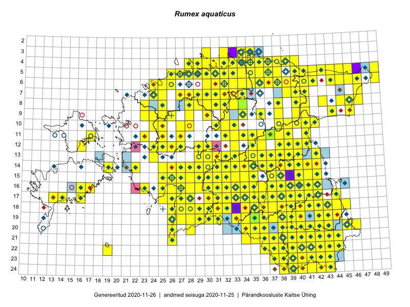

Rumex aquaticus — vesioblikas
Polygonaceae :: Rumex aquaticus L. (975)

Kaart põhineb 1778 kirjel:
vaatlusi 846
herbaareksemplare 129
PKÜ kirjeid1 322
ELFi kirjeid2 476
LVA kirjeid3 5
Taime kaasaegsed ja ajaloolised leiukohad asuvad 384 ruudus.
Tingmärgid ja leidudega ruutude arvud periooditi uues (u) ja 2005 andmestikus (v)
| █ | vahemik | u4 | v5 |
|---|---|---|---|
| █ | 2006–2020 | 342 | – |
| ◆/◇ | 1971–2005 | 262 | 255 |
| ○ | 1921–1970 | 48 | 26 |
| + | kuni 1920 | 15 | 0 |
| × | hävinud | – | 0 |
| ? | kaheldav | – | 0 |
| Ruut | Leidja(d) | Leiuaeg | Kirje |
|---|---|---|---|
| 16-28 | Ott Luuk, Meeli Mesipuu | 2020-09-10 | ruut/ala: Rumex aquaticus L. |
| 06-25 | Toomas Kukk, Peedu Saar | 2020-09-02 | ruut/ala: Rumex aquaticus L. |
| 10-25 | Peedu Saar, Toomas Kukk | 2020-09-02 | punkt: Rumex aquaticus L. |
| 14-22 | Peedu Saar, Toomas Kukk | 2020-08-30 | ruut/ala: Rumex aquaticus L. |
| 06-34 | Peedu Saar | 2020-08-27 | ruut/ala: Rumex aquaticus L. |
| 08-45 | Alar Soppe | 2020-08-24 | ELF: 172 |
| 07-34 | Ulvi Selgis, Enn Selgis | 2020-08-23 | punkt: Rumex aquaticus L. |
| 17-33 | Peedu Saar | 2020-08-21 | ruut/ala: Rumex aquaticus L. |
| 03-34 | Toomas Kukk, Ott Luuk, Kersti Tambets, Sten Mander, Kristine Fenske, Maie Itse | 2020-08-19 | ruut/ala: Rumex aquaticus L. |
| 19-37 | Nele Ingerpuu | 2020-08-19 | ELF: 479 |
| 19-37;19-38 | Nele Ingerpuu | 2020-08-19 | ELF: 481 |
| 19-35 | Meeli Mesipuu | 2020-08-19 | ruut/ala: Rumex aquaticus L. |
| 19-36 | Nele Ingerpuu | 2020-08-12 | ELF: 1088 |
| 15-35 | Peedu Saar | 2020-08-10–2020-08-17 | ruut/ala: Rumex aquaticus L. |
| 17-38 | Jaak Pärtel | 2020-08-09 | punkt: Rumex aquaticus L. |
| 15-35 | Tiit Hallikma | 2020-08-05 | ELF: 1019 |
| 08-25 | Peedu Saar | 2020-07-23 | punkt: Rumex aquaticus L. |
| 16-39 | Toomas Kukk, Peedu Saar, Art Villem Adojaan | 2020-07-15 | ruut/ala: Rumex aquaticus L. |
| 13-39 | Ulvi Selgis, Enn Selgis | 2020-07-09 | punkt: Rumex aquaticus L. |
| 22-42 | Eerik Leibak | 2020-07-09 | ELF: 390 |
| 10-27 | Monika Laurits-Arro | 2020-06-06 | punkt: Rumex aquaticus L. |
| 10-28 | Kalev Tihkan | 2020-06-06 | punkt: Rumex aquaticus L. |
| 16-40 | Thea Kull | 2020-05-29–2020-07-03 | ruut/ala: Rumex aquaticus L. |
| 06-46 | Toomas Kukk, Thea Kull | 2019-09-11 | ruut/ala: Rumex aquaticus L. |
| 06-45 | Thea Kull, Toomas Kukk | 2019-09-11 | punkt: Rumex aquaticus L. |
| 05-46 | Thea Kull, Toomas Kukk | 2019-09-11 | ruut/ala: Rumex aquaticus L. |
| 08-43 | Ott Luuk, Meeli Mesipuu | 2019-09-10 | ruut/ala: Rumex aquaticus L. |
| 15-28 | Toomas Kukk, Peedu Saar | 2019-08-29 | ruut/ala: Rumex aquaticus L. |
| 15-29 | Peedu Saar, Toomas Kukk | 2019-08-29 | ruut/ala: Rumex aquaticus L. |
| 13-32 | Ott Luuk, Eerik Leibak | 2019-08-29 | ruut/ala: Rumex aquaticus L. |
| 13-31 | Ott Luuk, Eerik Leibak | 2019-08-29 | ruut/ala: Rumex aquaticus L. |
| 14-32 | Meeli Mesipuu, Timo Luhamäe | 2019-08-29 | ruut/ala: Rumex aquaticus L. |
| 15-32 | Mari Reitalu, Thea Kull, Martin Tikk | 2019-08-29 | ruut/ala: Rumex aquaticus L. |
| 16-32 | Mari Reitalu, Thea Kull, Martin Tikk | 2019-08-29 | ruut/ala: Rumex aquaticus L. |
| 16-30 | Peedu Saar, Martin Tikk, Toomas Kukk | 2019-08-28 | ruut/ala: Rumex aquaticus L. |
| 14-31 | Ott Luuk, Eerik Leibak | 2019-08-28 | ruut/ala: Rumex aquaticus L. |
| 14-30 | Ott Luuk, Eerik Leibak | 2019-08-28 | ruut/ala: Rumex aquaticus L. |
| 15-30 | Meeli Mesipuu, Timo Luhamäe | 2019-08-28 | ruut/ala: Rumex aquaticus L. |
| 13-29 | Mari Reitalu, Thea Kull | 2019-08-28 | ruut/ala: Rumex aquaticus L. |
| 17-35 | Peedu Saar, Martin Tikk, Toomas Kukk | 2019-08-27 | ruut/ala: Rumex aquaticus L. |
| 15-35 | Meeli Mesipuu, Timo Luhamäe | 2019-08-27 | ruut/ala: Rumex aquaticus L. |
| 16-33 | Mari Reitalu, Thea Kull | 2019-08-27 | ruut/ala: Rumex aquaticus L. |
| 11-36 | Peedu Saar | 2019-08-10 | ruut/ala: Rumex aquaticus L. |
| 07-33 | Ott Luuk, Jaak-Albert Metsoja | 2019-08-08 | ruut/ala: Rumex aquaticus L. |
| 06-36 | Peedu Saar, Timo Luhamäe | 2019-08-07 | ruut/ala: Rumex aquaticus L. |
| 06-36 | Peedu Saar, Timo Luhamäe | 2019-08-07 | punkt: Rumex aquaticus L. |
| 03-32 | Ott Luuk, Jaak-Albert Metsoja | 2019-08-07 | ruut/ala: Rumex aquaticus L. |
| 04-33 | Ott Luuk, Jaak-Albert Metsoja | 2019-08-07 | ruut/ala: Rumex aquaticus L. |
| 04-34 | Rein Kalamees, Toomas Kukk | 2019-08-06 | ruut/ala: Rumex aquaticus L. |
| 05-31 | Peedu Saar, Timo Luhamäe | 2019-08-06 | ruut/ala: Rumex aquaticus L. |
| 05-30 | Peedu Saar, Timo Luhamäe | 2019-08-06 | ruut/ala: Rumex aquaticus L. |
| 05-30 | Peedu Saar, Timo Luhamäe | 2019-08-06 | ruut/ala: Rumex aquaticus L. |
| 04-30 | Peedu Saar, Timo Luhamäe | 2019-08-06 | ruut/ala: Rumex aquaticus L. |
| 04-30 | Peedu Saar, Timo Luhamäe | 2019-08-06 | ruut/ala: Rumex aquaticus L. |
| 05-38 | Ott Luuk, Jaak-Albert Metsoja | 2019-08-06 | ruut/ala: Rumex aquaticus L. |
| 04-38 | Ott Luuk, Jaak-Albert Metsoja | 2019-08-06 | ruut/ala: Rumex aquaticus L. |
| 04-39 | Ott Luuk, Jaak-Albert Metsoja | 2019-08-06 | ruut/ala: Rumex aquaticus L. |
| 06-32 | Toomas Kukk, Rein Kalamees | 2019-08-05 | ruut/ala: Rumex aquaticus L. |
| 06-31 | Peedu Saar, Timo Luhamäe | 2019-08-05 | ruut/ala: Rumex aquaticus L. |
| 07-31 | Peedu Saar, Timo Luhamäe | 2019-08-05 | ruut/ala: Rumex aquaticus L. |
| 06-37 | Meeli Mesipuu | 2019-08-05 | ruut/ala: Rumex aquaticus L. |
| 19-35 | Siiri Kõljalg | 2019-08-03 | HSSK20107: Rumex aquaticus L. |
| 17-40 | Thea Kull | 2019-07-25 | ruut/ala: Rumex aquaticus L. |
| 08-32;09-32 | Toivo Sepp, Ott Luuk | 2019-07-24 | ELF: 1414 |
| 08-32 | Toivo Sepp, Ott Luuk | 2019-07-24 | ELF: 24729 |
| 17-38 | Meeli Mesipuu | 2019-07-23 | ruut/ala: Rumex aquaticus L. |
| 15-32 | Eerik Leibak | 2019-07-20 | ELF: 1249 |
| 16-40 | Meeli Mesipuu | 2019-07-17 | ruut/ala: Rumex aquaticus L. |
| 19-36 | Ott Luuk, Peedu Saar | 2019-07-16 | ruut/ala: Rumex aquaticus L. |
| 19-35 | Ott Luuk, Peedu Saar | 2019-07-16 | ruut/ala: Rumex aquaticus L. |
| 18-36 | Peedu Saar, Ott Luuk | 2019-07-15 | ruut/ala: Rumex aquaticus L. |
| 17-38 | Peedu Saar, Ott Luuk | 2019-07-15 | ruut/ala: Rumex aquaticus L. |
| 18-37 | Ott Luuk, Peedu Saar | 2019-07-15 | punkt: Rumex aquaticus L. |
| 23-41 | Toomas Kukk, Indrek Tammekänd | 2019-07-12 | ruut/ala: Rumex aquaticus L. |
| 17-39 | Thea Kull | 2019-07-12 | ruut/ala: Rumex aquaticus L. |
| 22-44 | Ott Luuk, Tiit Hallikma | 2019-07-12 | ruut/ala: Rumex aquaticus L. |
| 21-43 | Ott Luuk, Tiit Hallikma | 2019-07-12 | ruut/ala: Rumex aquaticus L. |
| 19-42 | Meeli Mesipuu | 2019-07-12 | ruut/ala: Rumex aquaticus L. |
| 22-40 | Toomas Kukk, Indrek Tammekänd | 2019-07-11 | ruut/ala: Rumex aquaticus L. |
| 22-41 | Toomas Kukk, Indrek Tammekänd | 2019-07-11 | ruut/ala: Rumex aquaticus L. |
| 19-38 | Thea Kull | 2019-07-11 | ruut/ala: Rumex aquaticus L. |
| 23-37 | Peedu Saar, Timo Luhamäe | 2019-07-11 | ruut/ala: Rumex aquaticus L. |
| 21-40 | Toomas Kukk, Indrek Tammekänd | 2019-07-10 | ruut/ala: Rumex aquaticus L. |
| 21-41 | Toomas Kukk, Indrek Tammekänd | 2019-07-10 | ruut/ala: Rumex aquaticus L. |
| 22-38 | Peedu Saar, Timo Luhamäe | 2019-07-10 | ruut/ala: Rumex aquaticus L. |
| 20-46 | Ott Luuk, Tiit Hallikma | 2019-07-10 | ruut/ala: Rumex aquaticus L. |
| 20-45 | Ott Luuk, Tiit Hallikma | 2019-07-10 | ruut/ala: Rumex aquaticus L. |
| 18-41 | Meeli Mesipuu | 2019-07-10 | ruut/ala: Rumex aquaticus L. |
| 20-40 | Toomas Kukk, Indrek Tammekänd | 2019-07-09 | ruut/ala: Rumex aquaticus L. |
| 20-41 | Toomas Kukk, Indrek Tammekänd | 2019-07-09 | ruut/ala: Rumex aquaticus L. |
| 18-42 | Thea Kull, Meeli Mesipuu | 2019-07-09 | ruut/ala: Rumex aquaticus L. |
| 20-35 | Peedu Saar, Timo Luhamäe | 2019-07-09 | ruut/ala: Rumex aquaticus L. |
| 20-38 | Peedu Saar, Timo Luhamäe | 2019-07-09 | ruut/ala: Rumex aquaticus L. |
| 20-43 | Ott Luuk, Tiit Hallikma | 2019-07-09 | ruut/ala: Rumex aquaticus L. |
| 13-40 | Peedu Saar, Ott Luuk | 2019-07-04 | ruut/ala: Rumex aquaticus L. |
| 12-41 | Peedu Saar, Ott Luuk | 2019-07-04 | ruut/ala: Rumex aquaticus L. |
| 15-40 | Ott Luuk, Peedu Saar | 2019-07-04 | punkt: Rumex aquaticus L. |
| 10-41 | Ott Luuk, Peedu Saar | 2019-07-04 | ruut/ala: Rumex aquaticus L. |
| 15-40 | Ott Luuk, Kaili Kattai | 2019-07-03 | ruut/ala: Rumex aquaticus L. |
| 15-42 | Peedu Saar | 2019-06-15 | ruut/ala: Rumex aquaticus L. |
| 16-40 | Thea Kull | 2019-06-14 | ruut/ala: Rumex aquaticus L. |
| 10-28 | Ott Luuk | 2019-06-14 | punkt: Rumex aquaticus L. |
| 16-40 | Aivi Kasik, Martin Tikk, Weralda Lakeman, Thea Kull | 2019-06-14 | punkt: Rumex aquaticus L. |
| 05-28 | Thea Kull | 2019-06-13 | punkt: Rumex aquaticus L. |
| 05-28 | Thea Kull | 2019-06-13 | ruut/ala: Rumex aquaticus L. |
| 05-29 | Thea Kull | 2019-06-12 | ruut/ala: Rumex aquaticus L. |
| 04-33 | Peedu Saar, Ott Luuk | 2019-06-11 | ruut/ala: Rumex aquaticus L. |
| 12-16 | Toomas Kukk, Indrek Tammekänd | 2019-06-03 | ruut/ala: Rumex aquaticus L. |
| 18-32 | Meeli Mesipuu | 2019-05-31 | ruut/ala: Rumex aquaticus L. |
| 16-40 | Ott Luuk, Thea Kull, Meeli Mesipuu | 2019-05-30 | ruut/ala: Rumex aquaticus L. |
| 15-40 | Ott Luuk, Thea Kull, Meeli Mesipuu | 2019-05-30 | ruut/ala: Rumex aquaticus L. |
| 15-40 | Ott Luuk, Thea Kull, Meeli Mesipuu | 2019-05-30 | ruut/ala: Rumex aquaticus L. |
| 16-28 | Indrek Tammekänd | 2019-05-29–2019-08-23 | ruut/ala: Rumex aquaticus L. |
| 14-39 | Ott Luuk, Sten Mander, Kersti Tambets | 2019-05-28 | punkt: Rumex aquaticus L. |
| 12-38 | Enn Selgis | 2018-09-06 | LVA: -1088123114 |
| 06-49 | Peedu Saar, Toomas Kukk | 2018-09-04 | ruut/ala: Rumex aquaticus L. |
| 06-39 | Peedu Saar, Toomas Kukk | 2018-09-03 | punkt: Rumex aquaticus L. |
| 05-41 | Peedu Saar, Toomas Kukk | 2018-09-03 | ruut/ala: Rumex aquaticus L. |
| 13-24 | Indrek Tammekänd | 2018-09-02 | ELF: 2313 |
| 19-44 | Toomas Kukk, Eerik Leibak, Timo Luhamäe | 2018-08-27 | ruut/ala: Rumex aquaticus L. |
| 19-44 | Toomas Kukk, Eerik Leibak | 2018-08-27 | ELF: 23262 |
| 14-38 | Peedu Saar | 2018-08-23 | ruut/ala: Rumex aquaticus L. |
| 23-43 | Eerik Leibak | 2018-08-22 | ELF: 12383 |
| 14-32 | Toomas Kukk | 2018-08-18 | ruut/ala: Rumex aquaticus L. |
| 18-38 | Toomas Hirse | 2018-08-18 | ELF: 10369 |
| 17-38 | Toomas Hirse | 2018-08-18 | ELF: 23201 |
| 17-38 | Toomas Hirse | 2018-08-18 | ELF: 24615 |
| 04-33 | Peedu Saar, Toomas Kukk | 2018-08-08 | ruut/ala: Rumex aquaticus L. |
| 04-34 | Peedu Saar, Toomas Kukk | 2018-08-08 | ruut/ala: Rumex aquaticus L. |
| 04-34 | Peedu Saar, Toomas Kukk | 2018-08-08 | ruut/ala: Rumex aquaticus L. |
| 17-33 | Peedu Saar | 2018-08-03 | ruut/ala: Rumex aquaticus L. |
| 16-33 | Peedu Saar | 2018-08-01 | ruut/ala: Rumex aquaticus L. |
| 16-33 | Peedu Saar | 2018-08-01 | ELF: 22544 |
| 07-45 | Alar Soppe | 2018-07-25 | ELF: 24449 |
| 13-34 | Eerik Leibak | 2018-07-23 | ELF: 450 |
| 12-40 | Peedu Saar | 2018-07-19 | ruut/ala: Rumex aquaticus L. |
| 12-40 | Peedu Saar | 2018-07-19 | ELF: 13349 |
| 22-42 | Eerik Leibak | 2018-07-18 | ELF: 11405 |
| 18-30 | Indrek Tammekänd | 2018-07-15 | ELF: 23105 |
| 18-30 | Indrek Tammekänd | 2018-07-15 | ELF: 23107 |
| 05-36 | Alar Soppe | 2018-07-09 | ELF: 11988 |
| 20-45 | Toomas Kukk, Eerik Leibak | 2018-07-06 | ruut/ala: Rumex aquaticus L. |
| 20-46 | Toomas Kukk, Eerik Leibak | 2018-07-06 | ruut/ala: Rumex aquaticus L. |
| 20-45;20-46 | Toomas Kukk, Eerik Leibak | 2018-07-06 | ELF: 1462 |
| 21-38 | Eerik Leibak | 2018-06-27 | ELF: 10001 |
| 20-39 | Eerik Leibak | 2018-06-27 | ELF: 12217 |
| 20-39 | Eerik Leibak | 2018-06-27 | ELF: 12230 |
| 20-38;20-39 | Eerik Leibak | 2018-06-27 | ELF: 22665 |
| 11-27 | Ranno Puumets | 2018-06-26 | ruut/ala: Rumex aquaticus L. |
| 12-27 | Ranno Puumets | 2018-06-25 | ruut/ala: Rumex aquaticus L. |
| 23-43 | Toomas Kukk, Peedu Saar | 2018-05-17 | punkt: Rumex aquaticus L. |
| 03-30 | Toomas Kukk | 2017-09-29 | ruut/ala: Rumex aquaticus L. |
| 03-30 | Peedu Saar | 2017-09-29 | ruut/ala: Rumex aquaticus L. |
| 11-32 | Peedu Saar, Ott Luuk | 2017-09-08 | punkt: Rumex aquaticus L. |
| 18-27 | Peedu Saar, Toomas Kukk | 2017-09-06 | ruut/ala: Rumex aquaticus L. |
| 14-26 | Indrek Tammekänd | 2017-09-04 | ruut/ala: Rumex aquaticus L. |
| 17-26 | Toomas Kukk, Ott Luuk, Kersti Tambets, Timo Luhamäe, Sten Mander | 2017-08-30 | ruut/ala: Rumex aquaticus L. |
| 17-31 | Ott Luuk, Toomas Kukk, Sten Mander, Kersti Tambets, Timo Luhamäe | 2017-08-29 | ruut/ala: Rumex aquaticus L. |
| 12-41 | Ott Luuk, Peedu Saar | 2017-08-23 | ruut/ala: Rumex aquaticus L. |
| 14-37 | Indrek Tammekänd | 2017-08-17–2017-08-18 | ruut/ala: Rumex aquaticus L. |
| 15-38 | Indrek Tammekänd | 2017-08-17 | ruut/ala: Rumex aquaticus L. |
| 14-35 | Peedu Saar | 2017-08-15–2017-09-16 | ruut/ala: Rumex aquaticus L. |
| 14-36 | Ott Luuk | 2017-08-15 | ruut/ala: Rumex aquaticus L. |
| 14-36 | Meeli Mesipuu, Helen Toom | 2017-08-15 | ruut/ala: Rumex aquaticus L. |
| 14-37 | Meeli Mesipuu | 2017-08-14 | ruut/ala: Rumex aquaticus L. |
| 14-28 | Ott Luuk, Indrek Tammekänd | 2017-08-11 | ruut/ala: Rumex aquaticus L. |
| 14-27 | Ott Luuk, Indrek Tammekänd | 2017-08-11 | ruut/ala: Rumex aquaticus L. |
| 09-24 | Mari Reitalu, Eerik Leibak | 2017-08-11 | ruut/ala: Rumex aquaticus L. |
| 14-29 | Ilmar Uibopuu, Toomas Kukk | 2017-08-11 | ruut/ala: Rumex aquaticus L. |
| 05-26 | Peedu Saar, Timo Luhamäe | 2017-08-10 | ruut/ala: Rumex aquaticus L. |
| 07-25 | Mari Reitalu, Indrek Tammekänd | 2017-08-10 | ruut/ala: Rumex aquaticus L. |
| 04-36 | Katrit Karus, Tõnu Feldmann | 2017-08-10 | ruut/ala: Rumex aquaticus L. |
| 04-37 | Katrit Karus, Tõnu Feldmann | 2017-08-10 | ruut/ala: Rumex aquaticus L. |
| 05-34 | Katrit Karus, Tõnu Feldmann | 2017-08-10 | ruut/ala: Rumex aquaticus L. |
| 12-24 | Peedu Saar, Timo Luhamäe | 2017-08-09 | ruut/ala: Rumex aquaticus L. |
| 12-30 | Meeli Mesipuu, Indrek Tammekänd | 2017-08-09 | ruut/ala: Rumex aquaticus L. |
| 12-27 | Mari Reitalu, Eerik Leibak | 2017-08-09 | ruut/ala: Rumex aquaticus L. |
| 12-26 | Mari Reitalu, Eerik Leibak | 2017-08-09 | ruut/ala: Rumex aquaticus L. |
| 05-45 | Katrit Karus, Tõnu Feldmann | 2017-08-09 | ruut/ala: Rumex aquaticus L. |
| 05-43 | Katrit Karus, Tõnu Feldmann | 2017-08-09 | ruut/ala: Rumex aquaticus L. |
| 05-41 | Katrit Karus, Tõnu Feldmann | 2017-08-09 | ruut/ala: Rumex aquaticus L. |
| 06-46 | Katrit Karus, Tõnu Feldmann | 2017-08-09 | ruut/ala: Rumex aquaticus L. |
| 06-46 | Katrit Karus, Tõnu Feldmann | 2017-08-09 | ruut/ala: Rumex aquaticus L. |
| 10-28 | Thea Kull, Ott Luuk | 2017-08-08 | ruut/ala: Rumex aquaticus L. |
| 07-28 | Peedu Saar, Timo Luhamäe | 2017-08-08 | ruut/ala: Rumex aquaticus L. |
| 09-26 | Meeli Mesipuu, Indrek Tammekänd | 2017-08-08 | ruut/ala: Rumex aquaticus L. |
| 13-37 | Toomas Kukk, Ilmar Uibopuu | 2017-08-07 | ruut/ala: Rumex aquaticus L. |
| 13-33 | Toomas Kukk, Ilmar Uibopuu | 2017-08-07 | ruut/ala: Rumex aquaticus L. |
| 12-33 | Thea Kull, Ott Luuk | 2017-08-07 | ruut/ala: Rumex aquaticus L. |
| 14-34 | Peedu Saar, Timo Luhamäe | 2017-08-07 | ruut/ala: Rumex aquaticus L. |
| 13-34 | Peedu Saar, Timo Luhamäe | 2017-08-07 | ruut/ala: Rumex aquaticus L. |
| 11-34 | Thea Kull, Ott Luuk | 2017-08-03 | ruut/ala: Rumex aquaticus L. |
| 08-28 | Helle Mäemets, Kadi Palmik | 2017-08-03 | ruut/ala: Rumex aquaticus L. |
| 14-41 | Helle Mäemets, Kadi Palmik | 2017-08-02 | ruut/ala: Rumex aquaticus L. |
| 16-39 | Thea Kull, Ott Luuk | 2017-08-01 | ruut/ala: Rumex aquaticus L. |
| 16-37 | Ott Luuk, Thea Kull | 2017-08-01 | ruut/ala: Rumex aquaticus L. |
| 22-44 | Helle Mäemets, Kadi Palmik | 2017-08-01 | ruut/ala: Rumex aquaticus L. |
| 24-43 | Meeli Mesipuu | 2017-07-31 | ruut/ala: Rumex aquaticus L. |
| 07-24 | Toomas Kukk, Ilmar Uibopuu | 2017-07-30 | ruut/ala: Rumex aquaticus L. |
| 08-23 | Toomas Kukk, Ilmar Uibopuu | 2017-07-30 | ruut/ala: Rumex aquaticus L. |
| 21-36 | Peedu Saar, Ott Luuk | 2017-07-28 | ruut/ala: Rumex aquaticus L. |
| 22-36 | Ott Luuk, Peedu Saar | 2017-07-28 | ruut/ala: Rumex aquaticus L. |
| 23-39 | Peedu Saar, Ott Luuk | 2017-07-27 | ruut/ala: Rumex aquaticus L. |
| 22-39 | Ott Luuk, Peedu Saar | 2017-07-27 | ruut/ala: Rumex aquaticus L. |
| 16-37 | Meeli Mesipuu | 2017-07-27 | ruut/ala: Rumex aquaticus L. |
| 19-38 | Peedu Saar, Ott Luuk | 2017-07-25 | ruut/ala: Rumex aquaticus L. |
| 20-39 | Triin Reitalu, Ansis Blaus | 2017-07-22 | punkt: Rumex aquaticus L. |
| 20-38 | Triin Reitalu, Ansis Blaus | 2017-07-21 | punkt: Rumex aquaticus L. |
| 06-31 | Peedu Saar, Ott Luuk | 2017-07-21 | ruut/ala: Rumex aquaticus L. |
| 06-33 | Ott Luuk, Peedu Saar | 2017-07-21 | ruut/ala: Rumex aquaticus L. |
| 05-31 | Ott Luuk, Peedu Saar | 2017-07-20 | ruut/ala: Rumex aquaticus L. |
| 16-23 | Indrek Tammekänd, Eike Tammekänd | 2017-07-20 | ruut/ala: Rumex aquaticus L. |
| 06-34 | Peedu Saar, Ott Luuk | 2017-07-19 | ruut/ala: Rumex aquaticus L. |
| 06-35 | Ott Luuk, Peedu Saar | 2017-07-19 | ruut/ala: Rumex aquaticus L. |
| 08-38 | Ott Luuk, Peedu Saar | 2017-07-18 | ruut/ala: Rumex aquaticus L. |
| 12-35 | Helle Mäemets, Kadi Palmik | 2017-07-14 | ruut/ala: Rumex aquaticus L. |
| 09-26 | Helle Mäemets, Kadi Palmik | 2017-07-14 | ruut/ala: Rumex aquaticus L. |
| 16-40 | Peedu Saar | 2017-07-10–2017-07-11 | ruut/ala: Rumex aquaticus L. |
| 15-26 | Indrek Tammekänd | 2017-07-09 | ruut/ala: Rumex aquaticus L. |
| 08-34 | Katrit Karus, Tõnu Feldmann | 2017-07-07 | ruut/ala: Rumex aquaticus L. |
| 19-37 | Helle Mäemets, Kadi Palmik | 2017-07-07 | ruut/ala: Rumex aquaticus L. |
| 18-29 | Indrek Tammekänd | 2017-07-05 | ruut/ala: Rumex aquaticus L. |
| 18-40 | Helle Mäemets, Kadi Palmik | 2017-07-05 | ruut/ala: Rumex aquaticus L. |
| 17-40 | Helle Mäemets, Kadi Palmik | 2017-07-05 | ruut/ala: Rumex aquaticus L. |
| 11-39 | Tõnu Feldmann, Katrit Karus | 2017-07-04 | ruut/ala: Rumex aquaticus L. |
| 15-41 | Ott Luuk, Peedu Saar | 2017-07-04 | ruut/ala: Rumex aquaticus L. |
| 11-39 | Katrit Karus, Tõnu Feldmann | 2017-07-04 | ruut/ala: Rumex aquaticus L. |
| 16-41 | Peedu Saar, Ott Luuk | 2017-07-03–2017-07-04 | ruut/ala: Rumex aquaticus L. |
| 14-33 | Katrit Karus, Tõnu Feldmann | 2017-07-03 | ruut/ala: Rumex aquaticus L. |
| 18-32 | Helle Mäemets, Kadi Palmik | 2017-07-03 | ruut/ala: Rumex aquaticus L. |
| 18-32 | Helle Mäemets, Kadi Palmik | 2017-07-03 | ruut/ala: Rumex aquaticus L. |
| 14-37 | Meeli Mesipuu | 2017-06-28 | punkt: Rumex aquaticus L. |
| 17-28 | Helle Mäemets, Kadi Palmik | 2017-06-28 | ruut/ala: Rumex aquaticus L. |
| 18-28 | Helle Mäemets, Kadi Palmik | 2017-06-28 | ruut/ala: Rumex aquaticus L. |
| 16-34 | Thea Kull, Ott Luuk | 2017-06-22 | ruut/ala: Rumex aquaticus L. |
| 16-35 | Ott Luuk, Thea Kull | 2017-06-22 | ruut/ala: Rumex aquaticus L. |
| 15-40 | Peedu Saar | 2017-06-21–2017-06-22 | ruut/ala: Rumex aquaticus L. |
| 17-37 | Thea Kull, Ott Luuk | 2017-06-21 | ruut/ala: Rumex aquaticus L. |
| 16-36 | Ott Luuk, Thea Kull | 2017-06-21 | ruut/ala: Rumex aquaticus L. |
| 15-37 | Meeli Mesipuu | 2017-06-21 | ruut/ala: Rumex aquaticus L. |
| 15-35 | Ott Luuk, Peedu Saar | 2017-06-20 | ruut/ala: Rumex aquaticus L. |
| 14-37 | Thea Kull, Meeli Mesipuu | 2017-06-19 | ruut/ala: Rumex aquaticus L. |
| 15-40 | Peedu Saar, Ott Luuk | 2017-06-19 | ruut/ala: Rumex aquaticus L. |
| 18-30 | Helle Mäemets, Kadi Palmik | 2017-06-17 | ruut/ala: Rumex aquaticus L. |
| 18-29 | Helle Mäemets, Kadi Palmik | 2017-06-17 | ruut/ala: Rumex aquaticus L. |
| 18-30 | Helle Mäemets, Kadi Palmik | 2017-06-17 | ruut/ala: Rumex aquaticus L. |
| 18-29 | Helle Mäemets, Kadi Palmik | 2017-06-17 | ruut/ala: Rumex aquaticus L. |
| 18-30 | Enn Selgis | 2017-06-17 | LVA: -1905355084 |
| 12-38 | Enn Selgis | 2017-05-29 | LVA: -272096526 |
| 17-38 | Meeli Mesipuu | 2016-10-15 | punkt: Rumex aquaticus L. |
| 07-32 | Peedu Saar, Ott Luuk | 2016-09-28 | ruut/ala: Rumex aquaticus L. |
| 08-32 | Ott Luuk, Peedu Saar | 2016-09-28 | ruut/ala: Rumex aquaticus L. |
| 21-34 | Peedu Saar, Ott Luuk | 2016-09-22 | ruut/ala: Rumex aquaticus L. |
| 21-35 | Ott Luuk, Peedu Saar | 2016-09-22 | ruut/ala: Rumex aquaticus L. |
| 06-33 | Peedu Saar, Toomas Kukk | 2016-09-14 | ruut/ala: Rumex aquaticus L. |
| 05-43 | Peedu Saar, Toomas Kukk | 2016-09-13 | ruut/ala: Rumex aquaticus L. |
| 05-44 | Peedu Saar, Toomas Kukk | 2016-09-13 | ruut/ala: Rumex aquaticus L. |
| 08-30 | Peedu Saar, Toomas Kukk | 2016-09-09 | ruut/ala: Rumex aquaticus L. |
| 06-32 | Toomas Kukk, Peedu Saar | 2016-09-08 | ruut/ala: Rumex aquaticus L. |
| 09-30 | Ott Luuk, Peedu Saar | 2016-09-06–2016-09-07 | ruut/ala: Rumex aquaticus L. |
| 05-32 | Toomas Kukk, Sander Laherand | 2016-08-31 | ruut/ala: Rumex aquaticus L. |
| 04-31 | Sander Laherand, Toomas Kukk | 2016-08-31 | ruut/ala: Rumex aquaticus L. |
| 09-46 | Meeli Mesipuu, Karin Kikas | 2016-08-31 | ruut/ala: Rumex aquaticus L. |
| 06-30 | Toomas Kukk, Sander Laherand | 2016-08-30 | ruut/ala: Rumex aquaticus L. |
| 05-29 | Toomas Kukk, Sander Laherand | 2016-08-29 | ruut/ala: Rumex aquaticus L. |
| 17-44 | Peedu Saar | 2016-08-24 | ruut/ala: Rumex aquaticus L. |
| 20-36 | Thea Kull, Ott Luuk | 2016-08-23 | ruut/ala: Rumex aquaticus L. |
| 18-38 | Ott Luuk, Thea Kull | 2016-08-23 | ruut/ala: Rumex aquaticus L. |
| 22-44 | Peedu Saar, Karin Kikas | 2016-08-19 | ruut/ala: Rumex aquaticus L. |
| 21-44 | Peedu Saar, Karin Kikas | 2016-08-18 | ruut/ala: Rumex aquaticus L. |
| 17-16 | Toomas Kukk, Meeli Mesipuu | 2016-08-12 | ruut/ala: Rumex aquaticus L. |
| 09-36 | Ott Luuk | 2016-08-11 | ruut/ala: Rumex aquaticus L. |
| 09-40 | Ott Luuk, Eerik Leibak | 2016-08-09 | ruut/ala: Rumex aquaticus L. |
| 10-38 | Ott Luuk, Eerik Leibak | 2016-08-08 | ruut/ala: Rumex aquaticus L. |
| 09-38 | Ott Luuk, Eerik Leibak | 2016-08-08 | ruut/ala: Rumex aquaticus L. |
| 11-17 | Maret Gerz, Meeli Mesipuu | 2016-08-08 | ruut/ala: Rumex aquaticus L. |
| 21-43 | Thea Kull, Peedu Saar | 2016-08-05 | ruut/ala: Rumex aquaticus L. |
| 20-43 | Peedu Saar, Thea Kull | 2016-08-05 | ruut/ala: Rumex aquaticus L. |
| 09-41 | Ott Luuk, Eerik Leibak | 2016-08-05 | ruut/ala: Rumex aquaticus L. |
| 22-42 | Thea Kull, Peedu Saar | 2016-08-04 | ruut/ala: Rumex aquaticus L. |
| 22-43 | Peedu Saar, Thea Kull | 2016-08-04 | ruut/ala: Rumex aquaticus L. |
| 10-41 | Ott Luuk, Eerik Leibak | 2016-08-04 | ruut/ala: Rumex aquaticus L. |
| 10-42 | Ott Luuk, Eerik Leibak | 2016-08-04 | ruut/ala: Rumex aquaticus L. |
| 10-39 | Ott Luuk, Eerik Leibak | 2016-08-03 | ruut/ala: Rumex aquaticus L. |
| 10-40 | Ott Luuk, Eerik Leibak | 2016-08-03 | ruut/ala: Rumex aquaticus L. |
| 08-40 | Toomas Kukk, Tiit Hallikma | 2016-07-29 | ruut/ala: Rumex aquaticus L. |
| 07-40 | Toomas Kukk, Tiit Hallikma | 2016-07-29 | ruut/ala: Rumex aquaticus L. |
| 08-41 | Peedu Saar, Timo Luhamäe | 2016-07-29 | ruut/ala: Rumex aquaticus L. |
| 04-40 | Tiit Hallikma, Ott Luuk | 2016-07-28 | ruut/ala: Rumex aquaticus L. |
| 06-40 | Sander Laherand, Peedu Saar | 2016-07-28 | ruut/ala: Rumex aquaticus L. |
| 17-40 | Kersti Püssa, Rein Kalamees | 2016-07-28 | ruut/ala: Rumex aquaticus L. |
| 05-36 | Tõnu Ploompuu, Eerik Leibak | 2016-07-27 | ruut/ala: Rumex aquaticus L. |
| 05-37 | Tõnu Ploompuu, Eerik Leibak | 2016-07-27 | ruut/ala: Rumex aquaticus L. |
| 06-36 | Peedu Saar, Liina Oja, Susanna Vain | 2016-07-27 | ruut/ala: Rumex aquaticus L. |
| 05-35 | Peedu Saar, Liina Oja, Susanna Vain | 2016-07-27 | ruut/ala: Rumex aquaticus L. |
| 05-34 | Ott Luuk, Hannes Pehlak | 2016-07-27 | ruut/ala: Rumex aquaticus L. |
| 06-37 | Meeli Mesipuu, Tiit Hallikma | 2016-07-27 | ruut/ala: Rumex aquaticus L. |
| 16-41 | Kersti Püssa, Rein Kalamees | 2016-07-27 | ruut/ala: Rumex aquaticus L. |
| 05-41 | Tiit Hallikma, Tõnu Ploompuu | 2016-07-26 | ruut/ala: Rumex aquaticus L. |
| 04-38 | Thea Kull, Susanna Vain, Eerik Leibak | 2016-07-26 | ruut/ala: Rumex aquaticus L. |
| 04-37 | Thea Kull, Eerik Leibak, Susanna Vain | 2016-07-26 | ruut/ala: Rumex aquaticus L. |
| 04-35 | Sander Laherand, Ott Luuk, Nele Jõessar | 2016-07-26 | ruut/ala: Rumex aquaticus L. |
| 04-32 | Peedu Saar, Timo Luhamäe | 2016-07-26 | ruut/ala: Rumex aquaticus L. |
| 03-35 | Ott Luuk, Sander Laherand, Nele Jõessar | 2016-07-26 | ruut/ala: Rumex aquaticus L. |
| 04-36 | Meeli Mesipuu, Liina Oja | 2016-07-26 | ruut/ala: Rumex aquaticus L. |
| 03-34 | Hannes Pehlak, Toomas Kukk | 2016-07-26 | ruut/ala: Rumex aquaticus L. |
| 04-34 | Hannes Pehlak, Toomas Kukk | 2016-07-26 | ruut/ala: Rumex aquaticus L. |
| 04-28 | Sander Laherand, Tõnu Ploompuu, Nele Jõessar | 2016-07-25 | ruut/ala: Rumex aquaticus L. |
| 04-29 | Sander Laherand, Tõnu Ploompuu, Nele Jõessar | 2016-07-25 | ruut/ala: Rumex aquaticus L. |
| 06-38 | Hannes Pehlak, Thea Kull | 2016-07-25 | ruut/ala: Rumex aquaticus L. |
| 14-37 | Eeva-Maria Jeletsky, Tarmo Niitla | 2016-07-23 | ruut/ala: Rumex aquaticus L. |
| 13-36 | Toomas Kukk, Raivo Kalle | 2016-07-22 | ruut/ala: Rumex aquaticus L. |
| 10-31 | Toivo Sepp, Peedu Saar | 2016-07-22 | ruut/ala: Rumex aquaticus L. |
| 15-34 | Thea Kull, Tiit Hallikma | 2016-07-22 | ruut/ala: Rumex aquaticus L. |
| 14-34 | Thea Kull, Tiit Hallikma | 2016-07-22 | ruut/ala: Rumex aquaticus L. |
| 12-35 | Ott Luuk, Hannes Pehlak | 2016-07-22 | ruut/ala: Rumex aquaticus L. |
| 13-35 | Ott Luuk, Hannes Pehlak | 2016-07-22 | ruut/ala: Rumex aquaticus L. |
| 15-35 | Liina Oja, Susanna Vain, Elle Rajandu | 2016-07-22 | ruut/ala: Rumex aquaticus L. |
| 13-30 | Tõnu Ploompuu, Hannes Pehlak, Marko Veinbergs | 2016-07-21 | ruut/ala: Rumex aquaticus L. |
| 14-32 | Toomas Kukk, Liina Oja | 2016-07-21 | ruut/ala: Rumex aquaticus L. |
| 15-32 | Toomas Kukk, Liina Oja | 2016-07-21 | ruut/ala: Rumex aquaticus L. |
| 13-32 | Thea Kull, Raivo Kalle, Susanna Vain | 2016-07-21 | ruut/ala: Rumex aquaticus L. |
| 15-30 | Sirje Azarov, Meeli Mesipuu | 2016-07-21 | ruut/ala: Rumex aquaticus L. |
| 11-34 | Peedu Saar, Timo Luhamäe | 2016-07-21 | ruut/ala: Rumex aquaticus L. |
| 11-35 | Peedu Saar, Timo Luhamäe | 2016-07-21 | ruut/ala: Rumex aquaticus L. |
| 13-33 | Ott Luuk, Indrek Tammekänd | 2016-07-21 | ruut/ala: Rumex aquaticus L. |
| 14-33 | Ott Luuk, Indrek Tammekänd | 2016-07-21 | ruut/ala: Rumex aquaticus L. |
| 13-31 | Oliver Parrest, Toivo Sepp | 2016-07-21 | ruut/ala: Rumex aquaticus L. |
| 15-31 | Meeli Mesipuu, Sirje Azarov | 2016-07-21 | ruut/ala: Rumex aquaticus L. |
| 10-33 | Mari Metsoja, Eerik Leibak | 2016-07-21 | ruut/ala: Rumex aquaticus L. |
| 15-41 | Kaire Lanno, Karin Kaljund | 2016-07-21 | ruut/ala: Rumex aquaticus L. |
| 07-27 | Erkki Otsman, Sergei Smirnov | 2016-07-21 | ruut/ala: Rumex aquaticus L. |
| 11-32 | Aat Sarv, Jaak-Albert Metsoja | 2016-07-21 | ruut/ala: Rumex aquaticus L. |
| 10-32 | Aat Sarv, Jaak-Albert Metsoja | 2016-07-21 | ruut/ala: Rumex aquaticus L. |
| 17-32 | Toomas Kukk, Eerik Leibak | 2016-07-20 | ruut/ala: Rumex aquaticus L. |
| 15-27 | Tiit Hallikma, Tõnu Ploompuu | 2016-07-20 | ruut/ala: Rumex aquaticus L. |
| 17-37 | Rein Kalamees, Kersti Püssa | 2016-07-20 | ruut/ala: Rumex aquaticus L. |
| 17-28 | Ott Luuk, Liina Oja | 2016-07-20 | ruut/ala: Rumex aquaticus L. |
| 17-30 | Oliver Parrest, Timo Luhamäe | 2016-07-20 | ruut/ala: Rumex aquaticus L. |
| 17-31 | Oliver Parrest, Timo Luhamäe | 2016-07-20 | ruut/ala: Rumex aquaticus L. |
| 18-35 | Mari Metsoja, Peedu Saar | 2016-07-20 | ruut/ala: Rumex aquaticus L. |
| 15-38 | Kaire Lanno, Karin Kaljund | 2016-07-20 | ruut/ala: Rumex aquaticus L. |
| 16-30 | Hannes Pehlak, Thea Kull | 2016-07-20 | ruut/ala: Rumex aquaticus L. |
| 16-31 | Elle Rajandu, Indrek Tammekänd | 2016-07-20 | ruut/ala: Rumex aquaticus L. |
| 16-32 | Elle Rajandu, Indrek Tammekänd | 2016-07-20 | ruut/ala: Rumex aquaticus L. |
| 18-29 | Aat Sarv, Raivo Kalle | 2016-07-20 | ruut/ala: Rumex aquaticus L. |
| 18-31 | Toomas Kukk, Hannes Pehlak | 2016-07-19 | ruut/ala: Rumex aquaticus L. |
| 18-31 | Toomas Kukk, Hannes Pehlak | 2016-07-19 | ruut/ala: Rumex aquaticus L. |
| 18-32 | Toomas Kukk, Hannes Pehlak | 2016-07-19 | ruut/ala: Rumex aquaticus L. |
| 18-28 | Toivo Sepp, Liina Oja | 2016-07-19 | ruut/ala: Rumex aquaticus L. |
| 19-28 | Toivo Sepp, Liina Oja | 2016-07-19 | ruut/ala: Rumex aquaticus L. |
| 19-35 | Sirje Azarov, Peedu Saar | 2016-07-19 | ruut/ala: Rumex aquaticus L. |
| 19-30 | Ott Luuk, Raivo Kalle, Susanna Vain | 2016-07-19 | ruut/ala: Rumex aquaticus L. |
| 17-27 | Oliver Parrest, Elle Rajandu | 2016-07-19 | ruut/ala: Rumex aquaticus L. |
| 19-31 | Meeli Mesipuu, Mari Metsoja | 2016-07-19 | ruut/ala: Rumex aquaticus L. |
| 21-34 | Toomas Kukk, Susanna Vain, Raivo Kalle | 2016-07-18 | ruut/ala: Rumex aquaticus L. |
| 08-31 | Toivo Sepp, Peedu Saar | 2016-07-18 | ruut/ala: Rumex aquaticus L. |
| 20-35 | Thea Kull, Eerik Leibak | 2016-07-18 | ruut/ala: Rumex aquaticus L. |
| 20-34 | Thea Kull, Eerik Leibak | 2016-07-18 | ruut/ala: Rumex aquaticus L. |
| 20-26 | Sirje Azarov, Indrek Tammekänd | 2016-07-18 | ruut/ala: Rumex aquaticus L. |
| 19-27 | Ott Luuk, Hannes Pehlak | 2016-07-18 | ruut/ala: Rumex aquaticus L. |
| 19-26 | Ott Luuk, Hannes Pehlak | 2016-07-18 | ruut/ala: Rumex aquaticus L. |
| 17-26 | Meeli Mesipuu, Timo Luhamäe | 2016-07-18 | ruut/ala: Rumex aquaticus L. |
| 04-35 | Tõnu Ploompuu | 2016-07-16 | ruut/ala: Rumex aquaticus L. |
| 16-39 | Kersti Püssa, Rein Kalamees | 2016-07-13 | ruut/ala: Rumex aquaticus L. |
| 17-27 | Indrek Tammekänd | 2016-07-12 | ruut/ala: Rumex aquaticus L. |
| 14-25 | Toomas Kukk, Oliver Parrest | 2016-07-08 | ruut/ala: Rumex aquaticus L. |
| 08-29 | Sander Laherand, Rein Kalamees | 2016-07-08 | ruut/ala: Rumex aquaticus L. |
| 07-29 | Rein Kalamees, Sander Laherand | 2016-07-08 | ruut/ala: Rumex aquaticus L. |
| 14-27 | Peedu Saar, Timo Luhamäe | 2016-07-08 | ruut/ala: Rumex aquaticus L. |
| 11-27 | Meeli Mesipuu | 2016-07-08 | ruut/ala: Rumex aquaticus L. |
| 15-26 | Indrek Tammekänd | 2016-07-08 | ruut/ala: Rumex aquaticus L. |
| 06-24 | Thea Kull, Helle Mäemets | 2016-07-07 | ruut/ala: Rumex aquaticus L. |
| 17-25 | Tiit Hallikma, Tõnu Ploompuu | 2016-07-06 | ruut/ala: Rumex aquaticus L. |
| 09-26 | Thea Kull, Oliver Parrest | 2016-07-06 | ruut/ala: Rumex aquaticus L. |
| 10-25 | Sirje Azarov, Meeli Mesipuu | 2016-07-06 | ruut/ala: Rumex aquaticus L. |
| 09-28 | Rein Kalamees, Liina Oja | 2016-07-06 | ruut/ala: Rumex aquaticus L. |
| 10-27 | Peedu Saar, Timo Luhamäe, Johannes Kõdar | 2016-07-06 | ruut/ala: Rumex aquaticus L. |
| 12-29 | Mari Reitalu, Eerik Leibak | 2016-07-06 | ruut/ala: Rumex aquaticus L. |
| 11-23 | Aat Sarv, Maret Gerz | 2016-07-06 | ruut/ala: Rumex aquaticus L. |
| 06-25 | Toomas Kukk, Sander Laherand | 2016-07-05 | ruut/ala: Rumex aquaticus L. |
| 13-24 | Peedu Saar, Timo Luhamäe, Johannes Kõdar | 2016-07-05 | ruut/ala: Rumex aquaticus L. |
| 12-25 | Meeli Mesipuu, Sirje Azarov | 2016-07-05 | ruut/ala: Rumex aquaticus L. |
| 16-25 | Thea Kull, Helle Mäemets | 2016-07-04 | ruut/ala: Rumex aquaticus L. |
| 07-30 | Rein Kalamees, Liina Oja | 2016-07-04 | ruut/ala: Rumex aquaticus L. |
| 08-30 | Rein Kalamees, Liina Oja | 2016-07-04 | ruut/ala: Rumex aquaticus L. |
| 19-26 | Indrek Tammekänd | 2016-06-29 | ruut/ala: Rumex aquaticus L. |
| 07-32 | Rein Kalamees, Kersti Püssa | 2016-06-23 | ruut/ala: Rumex aquaticus L. |
| 14-38 | Kai Rünk, Ülle Jõgar, Illi Tarmu | 2016-06-20 | ruut/ala: Rumex aquaticus L. |
| 14-36 | Kai Rünk, Ülle Jõgar, Illi Tarmu | 2016-06-20 | ruut/ala: Rumex aquaticus L. |
| 05-46 | Erkki Otsman, Sergei Smirnov | 2016-06-17–2016-06-18 | ruut/ala: Rumex aquaticus L. |
| 06-46 | Erkki Otsman, Sergei Smirnov | 2016-06-17–2016-06-18 | ruut/ala: Rumex aquaticus L. |
| 21-40 | Tarmo Niitla, Peedu Saar | 2016-06-17 | ruut/ala: Rumex aquaticus L. |
| 19-43 | Sander Laherand, Ott Luuk | 2016-06-17 | ruut/ala: Rumex aquaticus L. |
| 20-39 | Rein Kalamees, Eerik Leibak | 2016-06-17 | ruut/ala: Rumex aquaticus L. |
| 20-40 | Peedu Saar, Tarmo Niitla | 2016-06-17 | ruut/ala: Rumex aquaticus L. |
| 19-42 | Ott Luuk, Sander Laherand | 2016-06-17 | ruut/ala: Rumex aquaticus L. |
| 18-44 | Maret Gerz, Liina Oja | 2016-06-17 | ruut/ala: Rumex aquaticus L. |
| 18-43 | Maret Gerz, Liina Oja | 2016-06-17 | ruut/ala: Rumex aquaticus L. |
| 20-38 | Jaak-Albert Metsoja, Mari Metsoja | 2016-06-17 | ruut/ala: Rumex aquaticus L. |
| 22-41 | Toomas Kukk, Tiit Hallikma | 2016-06-16 | ruut/ala: Rumex aquaticus L. |
| 20-42 | Tarmo Niitla, Peedu Saar | 2016-06-16 | ruut/ala: Rumex aquaticus L. |
| 23-38 | Rein Kalamees, Eerik Leibak | 2016-06-16 | ruut/ala: Rumex aquaticus L. |
| 20-41 | Peedu Saar, Tarmo Niitla | 2016-06-16 | ruut/ala: Rumex aquaticus L. |
| 21-41 | Ott Luuk, Sander Laherand | 2016-06-16 | ruut/ala: Rumex aquaticus L. |
| 22-37 | Jaak-Albert Metsoja, Mari Metsoja | 2016-06-16 | ruut/ala: Rumex aquaticus L. |
| 21-37 | Jaak-Albert Metsoja, Mari Metsoja | 2016-06-16 | ruut/ala: Rumex aquaticus L. |
| 22-43 | Toomas Kukk, Tiit Hallikma, Johannes Kõdar | 2016-06-15 | ruut/ala: Rumex aquaticus L. |
| 19-44 | Tarmo Niitla, Peedu Saar | 2016-06-15 | ruut/ala: Rumex aquaticus L. |
| 24-41 | Ott Luuk, Sander Laherand, Susanna Vain | 2016-06-15 | ruut/ala: Rumex aquaticus L. |
| 23-37 | Maret Gerz, Liina Oja | 2016-06-15 | ruut/ala: Rumex aquaticus L. |
| 09-40 | Kersti Püssa, Rein Kalamees | 2016-06-15 | ruut/ala: Rumex aquaticus L. |
| 09-41 | Kersti Püssa, Rein Kalamees | 2016-06-15 | ruut/ala: Rumex aquaticus L. |
| 21-44 | Toomas Kukk, Tiit Hallikma, Johannes Kõdar | 2016-06-14 | ruut/ala: Rumex aquaticus L. |
| 23-40 | Sander Laherand, Ott Luuk, Susanna Vain | 2016-06-14 | ruut/ala: Rumex aquaticus L. |
| 19-36 | Peedu Saar, Tarmo Niitla | 2016-06-14 | ruut/ala: Rumex aquaticus L. |
| 24-40 | Ott Luuk, Sander Laherand, Susanna Vain | 2016-06-14 | ruut/ala: Rumex aquaticus L. |
| 24-38 | Maret Gerz, Liina Oja | 2016-06-14 | ruut/ala: Rumex aquaticus L. |
| 18-40 | Toomas Kukk, Tiit Hallikma, Johannes Kõdar | 2016-06-13 | ruut/ala: Rumex aquaticus L. |
| 19-40 | Toomas Kukk, Tiit Hallikma, Johannes Kõdar | 2016-06-13 | ruut/ala: Rumex aquaticus L. |
| 18-39 | Tarmo Niitla, Peedu Saar | 2016-06-13 | ruut/ala: Rumex aquaticus L. |
| 19-39 | Peedu Saar, Tarmo Niitla | 2016-06-13 | ruut/ala: Rumex aquaticus L. |
| 18-41 | Ott Luuk, Sander Laherand, Susanna Vain | 2016-06-13 | ruut/ala: Rumex aquaticus L. |
| 18-42 | Jaak-Albert Metsoja, Mari Metsoja | 2016-06-13 | ruut/ala: Rumex aquaticus L. |
| 18-27 | Peedu Saar, Ott Luuk | 2016-06-10 | ruut/ala: Rumex aquaticus L. |
| 18-26 | Ott Luuk, Peedu Saar | 2016-06-10 | ruut/ala: Rumex aquaticus L. |
| 20-28 | Peedu Saar, Ott Luuk | 2016-06-09 | ruut/ala: Rumex aquaticus L. |
| 19-28 | Ott Luuk, Peedu Saar | 2016-06-09 | ruut/ala: Rumex aquaticus L. |
| 21-26 | Thea Kull, Peedu Saar | 2016-06-07 | ruut/ala: Rumex aquaticus L. |
| 19-26 | Peedu Saar, Thea Kull | 2016-06-07 | ruut/ala: Rumex aquaticus L. |
| 17-26 | Toomas Kukk, Tiit Hallikma | 2016-06-04 | ruut/ala: Rumex aquaticus L. |
| 18-29 | Toomas Kukk, Tiit Hallikma | 2016-06-03 | ruut/ala: Rumex aquaticus L. |
| 08-29 | Thea Kull, Ott Luuk | 2016-05-30 | ruut/ala: Rumex aquaticus L. |
| 05-29 | Peedu Saar | 2016-05-24 | ruut/ala: Rumex aquaticus L. |
| 16-40 | Peedu Saar | 2016-05-22 | ruut/ala: Rumex aquaticus L. |
| 05-40 | Ott Luuk, Tiit Hallikma | 2016-05-20 | ruut/ala: Rumex aquaticus L. |
| 09-24 | Ott Luuk, Tiit Hallikma | 2016-05-13 | ruut/ala: Rumex aquaticus L. |
| 11-25 | Ott Luuk, Tiit Hallikma | 2016-05-12 | ruut/ala: Rumex aquaticus L. |
| 04-38 | Rein Kalamees, Kersti Püssa | 2015-09-24 | ruut/ala: Rumex aquaticus L. |
| 16-25 | Indrek Tammekänd | 2015-09-18 | ruut/ala: Rumex aquaticus L. |
| 06-31 | Rein Kalamees, Kersti Püssa | 2015-09-13 | ruut/ala: Rumex aquaticus L. |
| 04-33 | Rein Kalamees, Kersti Püssa | 2015-09-12 | ruut/ala: Rumex aquaticus L. |
| 06-33 | Rein Kalamees, Kersti Püssa | 2015-09-11 | ruut/ala: Rumex aquaticus L. |
| 14-34 | Aat Sarv | 2015-09-09 | ruut/ala: Rumex aquaticus L. |
| 04-36 | Rein Kalamees, Kersti Püssa | 2015-09-02 | ruut/ala: Rumex aquaticus L. |
| 16-38 | Peedu Saar, Ott Luuk | 2015-09-02 | ruut/ala: Rumex aquaticus L. |
| 17-38 | Peedu Saar, Ott Luuk | 2015-09-02 | ruut/ala: Rumex aquaticus L. |
| 04-35 | Rein Kalamees, Kersti Püssa | 2015-08-25 | ruut/ala: Rumex aquaticus L. |
| 04-37 | Rein Kalamees, Kersti Püssa | 2015-08-24 | ruut/ala: Rumex aquaticus L. |
| 11-41 | Peedu Saar | 2015-08-22 | ruut/ala: Rumex aquaticus L. |
| 11-32 | Ott Luuk, Toivo Sepp | 2015-08-18–2015-08-19 | ruut/ala: Rumex aquaticus L. |
| 11-39 | Peedu Saar, Eerik Leibak | 2015-08-18 | ruut/ala: Rumex aquaticus L. |
| 11-38 | Peedu Saar, Eerik Leibak | 2015-08-18 | ruut/ala: Rumex aquaticus L. |
| 09-25 | Meelis Muuga, Tõnu Ploompuu | 2015-08-17 | ruut/ala: Rumex aquaticus L. |
| 05-35 | Rein Kalamees, Kersti Püssa | 2015-08-16 | ruut/ala: Rumex aquaticus L. |
| 12-40 | Peedu Saar, Eerik Leibak | 2015-08-16 | ruut/ala: Rumex aquaticus L. |
| 12-39 | Peedu Saar, Eerik Leibak | 2015-08-16 | ruut/ala: Rumex aquaticus L. |
| 16-23 | Maret Gerz, Leena Gerz | 2015-08-16 | ruut/ala: Rumex aquaticus L. |
| 08-34 | Jana-Maria Habicht | 2015-08-15 | TAM0117617.1: Rumex aquaticus L. |
| 08-34 | Jana-Maria Habicht | 2015-08-15 | TAM0117617.2: Rumex aquaticus L. |
| 15-33 | Kadi Palmik, Helle Mäemets | 2015-08-14 | ruut/ala: Rumex aquaticus L. |
| 18-41 | Kadi Palmik, Helle Mäemets | 2015-08-13 | ruut/ala: Rumex aquaticus L. |
| 16-16 | Sirje Azarov, Aira Alasi | 2015-08-12 | ruut/ala: Rumex aquaticus L. |
| 23-42 | Peedu Saar, Ott Luuk | 2015-08-12 | ruut/ala: Rumex aquaticus L. |
| 12-38 | Ulvi Selgis | 2015-08-11 | ruut/ala: Rumex aquaticus L. |
| 12-38 | Ulvi Selgis | 2015-08-11 | LVA: 1426986248 |
| 13-40 | Peedu Saar | 2015-08-10 | ruut/ala: Rumex aquaticus L. |
| 19-37 | Eeva-Maria Jeletsky, Tarmo Niitla | 2015-08-10 | ruut/ala: Rumex aquaticus L. |
| 16-25 | Maret Gerz, Leena Gerz | 2015-08-09 | ruut/ala: Rumex aquaticus L. |
| 15-25 | Maret Gerz, Leena Gerz | 2015-08-08 | ruut/ala: Rumex aquaticus L. |
| 14-38 | Thea Kull | 2015-08-07 | ruut/ala: Rumex aquaticus L. |
| 13-35 | Katrit Karus, Tõnu Feldmann | 2015-08-05 | ruut/ala: Rumex aquaticus L. |
| 22-40 | Eeva-Maria Jeletsky, Tarmo Niitla | 2015-08-05 | ruut/ala: Rumex aquaticus L. |
| 14-36 | Peedu Saar | 2015-08-04 | ruut/ala: Rumex aquaticus L. |
| 06-32 | Katrit Karus, Tõnu Feldmann | 2015-08-04 | ruut/ala: Rumex aquaticus L. |
| 24-41 | Eeva-Maria Jeletsky, Tarmo Niitla | 2015-08-04 | ruut/ala: Rumex aquaticus L. |
| 10-32 | Ott Luuk | 2015-08-03–2015-08-10 | ruut/ala: Rumex aquaticus L. |
| 13-39 | Thea Kull | 2015-08-03 | ruut/ala: Rumex aquaticus L. |
| 14-32 | Katrit Karus, Tõnu Feldmann | 2015-08-03 | ruut/ala: Rumex aquaticus L. |
| 13-34 | Katrit Karus, Tõnu Feldmann | 2015-08-03 | ruut/ala: Rumex aquaticus L. |
| 21-40 | Malle Leht | 2015-08-02 | ruut/ala: Rumex aquaticus L. |
| 16-32 | Tõnu Feldmann, Katrit Karus | 2015-07-31 | ruut/ala: Rumex aquaticus L. |
| 16-32 | Tõnu Feldmann, Katrit Karus | 2015-07-31 | ruut/ala: Rumex aquaticus L. |
| 16-29 | Indrek Tammekänd | 2015-07-31 | ruut/ala: Rumex aquaticus L. |
| 19-33 | Tõnu Feldmann, Katrit Karus | 2015-07-30 | ruut/ala: Rumex aquaticus L. |
| 15-42 | Peedu Saar, Eerik Leibak | 2015-07-30 | ruut/ala: Rumex aquaticus L. |
| 16-41 | Peedu Saar, Eerik Leibak | 2015-07-30 | ruut/ala: Rumex aquaticus L. |
| 09-32 | Ott Luuk, Toivo Sepp | 2015-07-29 | ruut/ala: Rumex aquaticus L. |
| 06-26 | Mari Metsoja, Jaak-Albert Metsoja | 2015-07-29 | ruut/ala: Rumex aquaticus L. |
| 13-42 | Katrit Karus, Tõnu Feldmann | 2015-07-29 | ruut/ala: Rumex aquaticus L. |
| 10-41 | Kai Rünk, Ülle Jõgar, Illi Tarmu | 2015-07-29 | ruut/ala: Rumex aquaticus L. |
| 10-42 | Kai Rünk, Ülle Jõgar, Illi Tarmu | 2015-07-29 | ruut/ala: Rumex aquaticus L. |
| 21-44 | Tõnu Feldmann, Katrit Karus | 2015-07-28 | ruut/ala: Rumex aquaticus L. |
| 20-39 | Malle Leht, Raivo Leht | 2015-07-28 | ruut/ala: Rumex aquaticus L. |
| 20-40 | Malle Leht, Raivo Leht | 2015-07-27–2015-07-30 | ruut/ala: Rumex aquaticus L. |
| 11-35 | Ott Luuk, Peedu Saar | 2015-07-27 | ruut/ala: Rumex aquaticus L. |
| 19-33 | Katrit Karus, Tõnu Feldmann | 2015-07-27 | ruut/ala: Rumex aquaticus L. |
| 10-40 | Kai Rünk, Ülle Jõgar, Illi Tarmu | 2015-07-27 | ruut/ala: Rumex aquaticus L. |
| 21-42 | Vivika Väli, Ülo Väli | 2015-07-26 | ruut/ala: Rumex aquaticus L. |
| 09-34 | Jana-Maria Habicht, Ester Valdvee, Kirke Pilvik | 2015-07-25–2015-07-26 | ruut/ala: Rumex aquaticus L. |
| 11-36 | Ülle Jõgar, Illi Tarmu, Kai Rünk | 2015-07-24 | ruut/ala: Rumex aquaticus L. |
| 11-37 | Ülle Jõgar, Illi Tarmu, K. Rünk | 2015-07-24 | ruut/ala: Rumex aquaticus L. |
| 06-41 | Toomas Kukk, Tiit Hallikma | 2015-07-24 | ruut/ala: Rumex aquaticus L. |
| 08-43 | Thea Kull, Eerik Leibak | 2015-07-24 | ruut/ala: Rumex aquaticus L. |
| 09-44 | Ott Luuk, Hannes Pehlak | 2015-07-24 | ruut/ala: Rumex aquaticus L. |
| 05-41 | Meeli Mesipuu, Timo Luhamäe | 2015-07-24 | ruut/ala: Rumex aquaticus L. |
| 18-34 | Maria Abakumova | 2015-07-24 | ruut/ala: Rumex aquaticus L. |
| 06-40 | Mari Metsoja, Jaak-Albert Metsoja | 2015-07-24 | ruut/ala: Rumex aquaticus L. |
| 14-42 | Kadi Palmik, Helle Mäemets | 2015-07-24 | ruut/ala: Rumex aquaticus L. |
| 17-41 | Kadi Palmik, Helle Mäemets | 2015-07-24 | ruut/ala: Rumex aquaticus L. |
| 11-37 | Illi Tarmu, Ülle Jõgar, Kai Rünk | 2015-07-24 | TAA0118862: Rumex aquaticus L. |
| 07-41 | Tiit Hallikma, Toomas Kukk | 2015-07-23 | ruut/ala: Rumex aquaticus L. |
| 07-40 | Ott Luuk, Hannes Pehlak | 2015-07-23 | ruut/ala: Rumex aquaticus L. |
| 15-33 | Maria Abakumova | 2015-07-23 | ruut/ala: Rumex aquaticus L. |
| 05-49 | Tiit Hallikma, Toomas Kukk | 2015-07-22 | ruut/ala: Rumex aquaticus L. |
| 08-45 | Peedu Saar, Liina Oja | 2015-07-22 | ruut/ala: Rumex aquaticus L. |
| 05-45 | Tiit Hallikma, Toomas Kukk | 2015-07-21 | ruut/ala: Rumex aquaticus L. |
| 07-47 | Thea Kull, Eerik Leibak | 2015-07-21 | ruut/ala: Rumex aquaticus L. |
| 06-44 | Peedu Saar, Liina Oja | 2015-07-21 | ruut/ala: Rumex aquaticus L. |
| 06-49 | Ott Luuk, Hannes Pehlak | 2015-07-21 | ruut/ala: Rumex aquaticus L. |
| 08-46 | Meeli Mesipuu, Timo Luhamäe | 2015-07-21 | ruut/ala: Rumex aquaticus L. |
| 08-47 | Meeli Mesipuu, Timo Luhamäe | 2015-07-21 | ruut/ala: Rumex aquaticus L. |
| 06-42 | Mari Metsoja, Jaak-Albert Metsoja | 2015-07-21 | ruut/ala: Rumex aquaticus L. |
| 04-40 | Kaili Orav, Silvia Pihu | 2015-07-21 | ruut/ala: Rumex aquaticus L. |
| 05-40 | Kaili Orav, Silvia Pihu | 2015-07-21 | ruut/ala: Rumex aquaticus L. |
| 06-45 | Thea Kull, Eerik Leibak | 2015-07-20 | ruut/ala: Rumex aquaticus L. |
| 09-41 | Ott Luuk, Meeli Mesipuu | 2015-07-20 | ruut/ala: Rumex aquaticus L. |
| 08-41 | Ott Luuk, Meeli Mesipuu | 2015-07-20 | ruut/ala: Rumex aquaticus L. |
| 06-38 | Kaili Orav, Silvia Pihu | 2015-07-20 | ruut/ala: Rumex aquaticus L. |
| 18-27 | Indrek Tammekänd | 2015-07-19–2015-09-10 | ruut/ala: Rumex aquaticus L. |
| 10-24 | Hanna-Eliisa Luts, Tõnu Ploompuu, Anna-Grete Rebane | 2015-07-19 | ruut/ala: Rumex aquaticus L. |
| 19-44 | Anneli Palo | 2015-07-18 | LVA: -1459526006 |
| 09-23 | Hanna-Eliisa Luts, Tõnu Ploompuu | 2015-07-16 | ruut/ala: Rumex aquaticus L. |
| 23-37 | Eeva-Maria Jeletsky, Tarmo Niitla | 2015-07-16 | ruut/ala: Rumex aquaticus L. |
| 16-27 | Meeli Mesipuu | 2015-07-15 | ruut/ala: Rumex aquaticus L. |
| 15-38 | Peedu Saar | 2015-07-14 | ruut/ala: Rumex aquaticus L. |
| 20-34 | Silvia Pihu, Illi Tarmu | 2015-07-13 | ruut/ala: Rumex aquaticus L. |
| 10-31 | Ott Luuk, Toivo Sepp | 2015-07-12 | ruut/ala: Rumex aquaticus L. |
| 14-19 | Meeli Mesipuu | 2015-07-11 | ruut/ala: Rumex aquaticus L. |
| 17-32 | Maria Abakumova, Tiit Hallikma | 2015-07-09 | ruut/ala: Rumex aquaticus L. |
| 05-27 | Erkki Otsman, Sergei Smirnov | 2015-07-08 | ruut/ala: Rumex aquaticus L. |
| 16-40 | Thea Kull | 2015-07-07 | ruut/ala: Rumex aquaticus L. |
| 16-32 | Maria Abakumova | 2015-07-07 | ruut/ala: Rumex aquaticus L. |
| 16-42 | Thea Kull, Eerik Leibak | 2015-07-05 | ruut/ala: Rumex aquaticus L. |
| 15-37 | Helle Mäemets | 2015-07-05 | ruut/ala: Rumex aquaticus L. |
| 18-45 | Peedu Saar | 2015-07-04 | ruut/ala: Rumex aquaticus L. |
| 18-44 | Peedu Saar | 2015-07-04 | ruut/ala: Rumex aquaticus L. |
| 13-38 | Ülle Jõgar, Illi Tarmu, Kai Rünk | 2015-07-03 | ruut/ala: Rumex aquaticus L. |
| 22-19 | Silvia Pihu | 2015-07-03 | ruut/ala: Rumex aquaticus L. |
| 17-34 | Maria Abakumova, Helle Mäemets | 2015-07-03 | ruut/ala: Rumex aquaticus L. |
| 08-33 | Erkki Otsman, Sergei Smirnov | 2015-07-02–2015-07-03 | ruut/ala: Rumex aquaticus L. |
| 10-27 | Aat Sarv | 2015-07-02 | ruut/ala: Rumex aquaticus L. |
| 14-32 | Maria Abakumova, Helle Mäemets | 2015-07-01 | ruut/ala: Rumex aquaticus L. |
| 21-37 | Silvia Pihu | 2015-06-28 | ruut/ala: Rumex aquaticus L. |
| 16-26 | Meeli Mesipuu | 2015-06-27 | ruut/ala: Rumex aquaticus L. |
| 18-35 | Helle Mäemets, Mare Leis | 2015-06-24 | ruut/ala: Rumex aquaticus L. |
| 17-35 | Helle Mäemets, Mare Leis | 2015-06-23 | ruut/ala: Rumex aquaticus L. |
| 17-33 | Maria Abakumova | 2015-06-22 | ruut/ala: Rumex aquaticus L. |
| 18-37 | Helle Mäemets, Mare Leis | 2015-06-22 | ruut/ala: Rumex aquaticus L. |
| 14-42 | Peedu Saar, Ott Luuk | 2015-06-21 | ruut/ala: Rumex aquaticus L. |
| 16-33 | Maria Abakumova | 2015-06-21 | ruut/ala: Rumex aquaticus L. |
| 17-40 | Thea Kull, Peedu Saar | 2015-06-19 | ruut/ala: Rumex aquaticus L. |
| 17-41 | Thea Kull, Peedu Saar | 2015-06-19 | ruut/ala: Rumex aquaticus L. |
| 16-26 | Meeli Mesipuu | 2015-06-19 | ruut/ala: Rumex aquaticus L. |
| 05-42 | Kaili Orav, Silvia Pihu | 2015-06-18 | ruut/ala: Rumex aquaticus L. |
| 05-41 | Kaili Orav, Silvia Pihu | 2015-06-18 | ruut/ala: Rumex aquaticus L. |
| 17-39 | Thea Kull, Peedu Saar | 2015-06-17 | ruut/ala: Rumex aquaticus L. |
| 16-27 | Meeli Mesipuu | 2015-06-17 | ruut/ala: Rumex aquaticus L. |
| 16-32 | Maria Abakumova | 2015-06-17 | ruut/ala: Rumex aquaticus L. |
| 07-39 | Kaili Orav, Silvia Pihu | 2015-06-17 | ruut/ala: Rumex aquaticus L. |
| 13-35 | Peedu Saar, Liina Oja | 2015-06-12 | ruut/ala: Rumex aquaticus L. |
| 20-35 | Ott Luuk, Hannes Pehlak | 2015-06-12 | ruut/ala: Rumex aquaticus L. |
| 19-35 | Ott Luuk, Hannes Pehlak | 2015-06-12 | ruut/ala: Rumex aquaticus L. |
| 15-29 | Peedu Saar, Liina Oja | 2015-06-11 | ruut/ala: Rumex aquaticus L. |
| 17-31 | Ott Luuk, Hannes Pehlak | 2015-06-11 | ruut/ala: Rumex aquaticus L. |
| 17-30 | Ott Luuk, Hannes Pehlak | 2015-06-11 | ruut/ala: Rumex aquaticus L. |
| 15-31 | Toomas Kukk, Tiit Hallikma | 2015-06-10 | ruut/ala: Rumex aquaticus L. |
| 15-30 | Tiit Hallikma, Toomas Kukk | 2015-06-10 | ruut/ala: Rumex aquaticus L. |
| 14-30 | Peedu Saar, Liina Oja | 2015-06-10 | ruut/ala: Rumex aquaticus L. |
| 14-31 | Peedu Saar, Liina Oja | 2015-06-10 | ruut/ala: Rumex aquaticus L. |
| 14-28 | Ott Luuk, Hannes Pehlak | 2015-06-10 | ruut/ala: Rumex aquaticus L. |
| 14-29 | Ott Luuk, Hannes Pehlak | 2015-06-10 | ruut/ala: Rumex aquaticus L. |
| 17-28 | Peedu Saar, Liina Oja | 2015-06-09 | ruut/ala: Rumex aquaticus L. |
| 12-30 | Ott Luuk, Hannes Pehlak | 2015-06-09 | ruut/ala: Rumex aquaticus L. |
| 14-27 | Tiit Hallikma, Toomas Kukk, Indrek Tammekänd | 2015-06-08 | ruut/ala: Rumex aquaticus L. |
| 05-32 | Rein Kalamees | 2015-06-08 | ruut/ala: Rumex aquaticus L. |
| 10-33 | Peedu Saar, Liina Oja | 2015-06-08 | ruut/ala: Rumex aquaticus L. |
| 11-33 | Ott Luuk, Hannes Pehlak | 2015-06-08 | ruut/ala: Rumex aquaticus L. |
| 11-34 | Ott Luuk, Hannes Pehlak | 2015-06-08 | ruut/ala: Rumex aquaticus L. |
| 18-30 | Mari Metsoja, Jaak-Albert Metsoja | 2015-06-08 | ruut/ala: Rumex aquaticus L. |
| 08-45 | Toomas Kukk, Tiit Hallikma | 2015-06-01 | ruut/ala: Rumex aquaticus L. |
| 07-47 | Peedu Saar, Sander Laherand | 2015-05-31 | ruut/ala: Rumex aquaticus L. |
| 17-34 | Maria Abakumova, Helle Mäemets | 2015-05-27 | ruut/ala: Rumex aquaticus L. |
| 19-30 | Peedu Saar, Liina Oja | 2015-05-22 | ruut/ala: Rumex aquaticus L. |
| 19-29 | Peedu Saar, Liina Oja | 2015-05-22 | ruut/ala: Rumex aquaticus L. |
| 17-25 | Ott Luuk, Eerik Leibak | 2015-05-21 | ruut/ala: Rumex aquaticus L. |
| 18-27 | Peedu Saar, Liina Oja | 2015-05-20–2015-05-22 | ruut/ala: Rumex aquaticus L. |
| 16-42 | Peedu Saar | 2015-05-16 | ruut/ala: Rumex aquaticus L. |
| 10-42 | Peedu Saar | 2015-05-14 | ruut/ala: Rumex aquaticus L. |
| 06-40 | Peedu Saar, Timo Luhamäe | 2015-05-13 | ruut/ala: Rumex aquaticus L. |
| 06-37 | Ott Luuk, Liina Oja | 2015-05-13 | ruut/ala: Rumex aquaticus L. |
| 16-26 | Indrek Tammekänd | 2015-05-11–2015-07-27 | ruut/ala: Rumex aquaticus L. |
| 12-36 | Peedu Saar, Timo Luhamäe | 2015-05-11 | ruut/ala: Rumex aquaticus L. |
| 12-30 | Peedu Saar, Timo Luhamäe | 2015-05-10 | ruut/ala: Rumex aquaticus L. |
| 15-40 | Elle Rajandu | 2015-04-15–2015-05-30 | ruut/ala: Rumex aquaticus L. |
| 15-27 | Indrek Tammekänd | 2015-04-04–2015-07-03 | ruut/ala: Rumex aquaticus L. |
| 14-37 | Meeli Mesipuu, Peedu Saar | 2014-08-14 | ruut/ala: Rumex aquaticus L. |
| 24-38 | Meeli Mesipuu, Jaak-Albert Metsoja | 2014-08-02 | punkt: Rumex aquaticus L. |
| 18-38 | Toomas Kukk, Peedu Saar, Mall Värva, Sander Laherand | 2014-07-27 | ruut/ala: Rumex aquaticus L. |
| 08-47 | Thea Kull, Peedu Saar | 2014-07-26 | ruut/ala: Rumex aquaticus L. |
| 06-47 | Thea Kull, Peedu Saar | 2014-07-25 | ruut/ala: Rumex aquaticus L. |
| 08-43 | Toomas Kukk, Peedu Saar | 2014-07-09 | ruut/ala: Rumex aquaticus L. |
| 16-40 | Maret Gerz, Ott Luuk | 2014-06-25 | ruut/ala: Rumex aquaticus L. |
| 24-39 | Maret Gerz, Jaak-Albert Metsoja, Ott Luuk, Toomas Kukk, Meeli Mesipuu, Thea Kull | 2014-06-09 | ruut/ala: Rumex aquaticus L. |
| 24-38 | Meeli Mesipuu, Thea Kull | 2013-08-08 | punkt: Rumex aquaticus L. |
| 23-38 | Meeli Mesipuu, Thea Kull | 2013-08-08 | punkt: Rumex aquaticus L. |
| 24-38 | Meeli Mesipuu, Thea Kull | 2013-08-08 | punkt: Rumex aquaticus L. |
| 24-38 | Meeli Mesipuu, Thea Kull | 2013-08-07 | punkt: Rumex aquaticus L. |
| 24-38 | Meeli Mesipuu, Thea Kull | 2013-08-07 | punkt: Rumex aquaticus L. |
| 15-42;16-42 | Kaarin Parts, Eerik Leibak | 2013-07-16 | ELF: 24014 |
| 14-36 | Peedu Saar | 2012-09-26 | ELF: 23022 |
| 14-32 | Peedu Saar | 2012-08-29 | ELF: 23904 |
| 14-32 | Peedu Saar | 2012-08-29 | ELF: 23118 |
| 14-32 | Peedu Saar | 2012-08-29 | ELF: 23905 |
| 14-35 | Peedu Saar | 2012-08-26 | ELF: 2166 |
| 20-37 | Helen Toom, Eerik Leibak | 2012-08-26 | ELF: 1262 |
| 20-37 | Helen Toom, Eerik Leibak | 2012-08-26 | ELF: 23820 |
| 20-37 | Helen Toom, Eerik Leibak | 2012-08-26 | ELF: 23821 |
| 19-44 | Eerik Leibak | 2012-08-12 | ELF: 23197 |
| 18-32 | Peedu Saar | 2012-08-08 | ELF: 23121 |
| 18-32 | Peedu Saar | 2012-08-08 | ELF: 23120 |
| 20-33 | Peedu Saar | 2012-08-08 | ELF: 23124 |
| 19-35 | Peedu Saar | 2012-08-07 | ELF: 2752 |
| 18-38 | Peedu Saar | 2012-07-30 | ELF: 23208 |
| 18-38 | Peedu Saar | 2012-07-30 | ELF: 23207 |
| 18-38 | Peedu Saar | 2012-07-30 | ELF: 22736 |
| 14-39 | Peedu Saar | 2012-07-29 | ELF: 439 |
| 13-39 | Peedu Saar | 2012-07-29 | ELF: 23400 |
| 20-36 | Peedu Saar | 2012-07-26 | ELF: 20137 |
| 20-36 | Peedu Saar | 2012-07-26 | ELF: 20136 |
| 20-36 | Peedu Saar | 2012-07-26 | ELF: 23132 |
| 17-38 | Peedu Saar | 2012-07-25 | ELF: 23886 |
| 17-38 | Peedu Saar | 2012-07-25 | ELF: 23887 |
| 17-38 | Peedu Saar | 2012-07-25 | ELF: 23888 |
| 20-44 | Eerik Leibak | 2012-07-21 | ELF: 23402 |
| 21-43 | Eerik Leibak | 2012-07-18 | ELF: 363 |
| 18-42 | Eerik Leibak | 2012-07-03 | ELF: 23492 |
| 21-37 | Eerik Leibak | 2012-06-20 | ELF: 23130 |
| 21-37 | Eerik Leibak | 2012-06-20 | ELF: 2336 |
| 18-40 | Peedu Saar | 2012-06-07 | ELF: 503 |
| 18-40 | Peedu Saar | 2012-06-07 | ELF: 23884 |
| 18-40 | Peedu Saar | 2012-06-05 | ELF: 23883 |
| 18-40 | Peedu Saar | 2012-06-05 | ELF: 23881 |
| 19-38 | Eerik Leibak | 2011-10-09 | ELF: 23367 |
| 19-38 | Eerik Leibak | 2011-10-09 | ELF: 23371 |
| 18-36 | Ott Luuk, Peedu Saar | 2011-09-27 | ELF: 23716 |
| 17-36 | Peedu Saar, Ott Luuk | 2011-09-20 | ELF: 23673 |
| 17-36 | Peedu Saar, Ott Luuk | 2011-09-20 | ELF: 23678 |
| 03-35 | Ott Luuk, Peedu Saar | 2011-09-15 | PKÜ: 17313 |
| 04-34 | Peedu Saar, Ott Luuk | 2011-09-07 | PKÜ: 17235 |
| 04-34 | Peedu Saar, Ott Luuk | 2011-09-07 | PKÜ: 17236 |
| 04-34 | Peedu Saar, Ott Luuk | 2011-09-06 | PKÜ: 17225 |
| 04-34 | Peedu Saar, Ott Luuk | 2011-09-06 | PKÜ: 17229 |
| 04-34 | Ott Luuk, Peedu Saar | 2011-09-06 | PKÜ: 17230 |
| 04-34 | Peedu Saar, Ott Luuk | 2011-09-05 | PKÜ: 17257 |
| 15-41 | Thea Kull, Eerik Leibak | 2011-08-25 | ELF: 23553 |
| 04-37 | Meeli Mesipuu | 2011-08-15 | PKÜ: 17059 |
| 04-37 | Meeli Mesipuu | 2011-08-15 | PKÜ: 17060 |
| 04-37 | Meeli Mesipuu | 2011-08-15 | PKÜ: 17056 |
| 04-36 | Peedu Saar, Ott Luuk | 2011-08-04 | PKÜ: 16875 |
| 04-34 | Ott Luuk, Peedu Saar | 2011-07-25 | PKÜ: 16847 |
| 04-34 | Ott Luuk, Peedu Saar | 2011-07-25 | PKÜ: 16843 |
| 05-34 | Ott Luuk, Peedu Saar | 2011-07-24 | PKÜ: 16842 |
| 04-35 | Meeli Mesipuu | 2011-07-14 | PKÜ: 17188 |
| 04-35 | Meeli Mesipuu | 2011-07-14 | PKÜ: 17182 |
| 04-35 | Meeli Mesipuu | 2011-07-11 | PKÜ: 17146 |
| 04-35 | Meeli Mesipuu | 2011-07-06 | PKÜ: 17133 |
| 19-37 | Eerik Leibak | 2011-07-05 | ELF: 22809 |
| 04-36 | Meeli Mesipuu | 2011-06-28 | PKÜ: 17111 |
| 04-36 | Meeli Mesipuu | 2011-06-27 | PKÜ: 17121 |
| 16-45 | Ott Luuk, Jaak-Albert Metsoja | 2010-11-17 | ELF: 19841 |
| 16-45 | Ott Luuk, Jaak-Albert Metsoja | 2010-11-17 | ELF: 2629 |
| 16-39;17-39 | Silvia Pihu | 2010-10-21 | ELF: 17251 |
| 07-38 | Jaan Spiegel | 2010-10-18 | ELF: 17639 |
| 07-38 | Jaan Spiegel | 2010-10-18 | ELF: 2881 |
| 17-39;17-40 | Silvia Pihu | 2010-10-09 | ELF: 429 |
| 05-38 | Jaan Spiegel | 2010-10-06 | ELF: 17612 |
| 05-38 | Jaan Spiegel | 2010-10-05 | ELF: 17608 |
| 14-41 | Meelis Sepp | 2010-10-04 | ELF: 17024 |
| 13-41;14-41 | Meelis Sepp | 2010-10-04 | ELF: 17026 |
| 19-40 | Rein Kuresoo | 2010-10-03 | ELF: 22615 |
| 13-18 | Meeli Mesipuu | 2010-10-03 | ELF: 18202 |
| 18-39 | Silvia Pihu | 2010-10-02 | ELF: 18193 |
| 17-39 | Silvia Pihu | 2010-10-02 | ELF: 18197 |
| 14-41 | Meelis Sepp | 2010-10-01 | ELF: 17021 |
| 18-39 | Silvia Pihu | 2010-09-29 | ELF: 18182 |
| 14-41 | Meelis Sepp | 2010-09-29 | ELF: 17010 |
| 11-39 | Alar Soppe | 2010-09-29 | ELF: 17772 |
| 11-38;11-39 | Alar Soppe | 2010-09-29 | ELF: 17773 |
| 11-38 | Alar Soppe | 2010-09-29 | ELF: 17777 |
| 11-38 | Alar Soppe | 2010-09-29 | ELF: 17778 |
| 11-38 | Alar Soppe | 2010-09-29 | ELF: 17783 |
| 11-38 | Alar Soppe | 2010-09-29 | ELF: 627 |
| 09-33;10-33 | Indrek Hiiesalu, Liina Remm | 2010-09-26 | ELF: 3441 |
| 16-15 | Sirje Azarov | 2010-09-25 | ELF: 16700 |
| 09-34 | Indrek Hiiesalu | 2010-09-25 | ELF: 18964 |
| 09-34 | Indrek Hiiesalu | 2010-09-25 | ELF: 18965 |
| 09-33 | Indrek Hiiesalu | 2010-09-25 | ELF: 18982 |
| 13-43 | Meelis Sepp | 2010-09-24 | ELF: 16992 |
| 18-34 | Alar Soppe | 2010-09-24 | ELF: 18397 |
| 13-42 | Meelis Sepp | 2010-09-23 | ELF: 16980 |
| 13-42;13-43 | Meelis Sepp | 2010-09-23 | ELF: 16986 |
| 13-42 | Meelis Sepp | 2010-09-23 | ELF: 16989 |
| 16-35 | Kairi Sepp, Sille Tammik | 2010-09-22 | ELF: 19456 |
| 16-35 | Alar Soppe | 2010-09-22 | ELF: 18369 |
| 16-35 | Alar Soppe | 2010-09-22 | ELF: 18372 |
| 17-35 | Alar Soppe | 2010-09-22 | ELF: 18378 |
| 22-39 | Toomas Kukk, Eerik Leibak | 2010-09-21 | ELF: 19930 |
| 16-35 | Kairi Sepp, Sille Tammik | 2010-09-20 | ELF: 19450 |
| 17-34 | Alar Soppe | 2010-09-20 | ELF: 18355 |
| 21-36 | Riinu Ots | 2010-09-19 | ELF: 20131 |
| 09-33 | Indrek Hiiesalu | 2010-09-19 | ELF: 18978 |
| 20-33 | Silver Sisask | 2010-09-18 | ELF: 21842 |
| 19-32 | Margit Turb, Tarmo Evestus | 2010-09-16 | ELF: 20103 |
| 20-32 | Margit Turb, Tarmo Evestus | 2010-09-16 | ELF: 20107 |
| 18-35 | Alar Soppe | 2010-09-16 | ELF: 18333 |
| 15-41 | Ott Luuk, Peedu Saar | 2010-09-15 | ELF: 19808 |
| 15-41 | Ott Luuk, Peedu Saar | 2010-09-15 | ELF: 19810 |
| 18-34 | Alar Soppe | 2010-09-15 | ELF: 18313 |
| 18-34 | Alar Soppe | 2010-09-15 | ELF: 18328 |
| 20-34 | Alar Soppe | 2010-09-14 | ELF: 16196 |
| 16-42 | Ott Luuk, Peedu Saar | 2010-09-13 | ELF: 19822 |
| 16-42 | Ott Luuk, Peedu Saar | 2010-09-13 | ELF: 19823 |
| 04-39 | Jaan Spiegel | 2010-09-13 | ELF: 17594 |
| 23-42 | Meelis Sepp | 2010-09-10 | ELF: 15285 |
| 23-42 | Meelis Sepp | 2010-09-10 | ELF: 15289 |
| 19-41 | Liina Remm | 2010-09-10 | ELF: 1790 |
| 23-42 | Meelis Sepp | 2010-09-09 | ELF: 15278 |
| 23-42 | Meelis Sepp | 2010-09-09 | ELF: 15283 |
| 23-43 | Meelis Sepp | 2010-09-08 | ELF: 15268 |
| 23-43 | Meelis Sepp | 2010-09-08 | ELF: 15271 |
| 19-35 | Alar Soppe | 2010-09-08 | ELF: 16160 |
| 20-35 | Alar Soppe | 2010-09-08 | ELF: 16176 |
| 16-40 | Ott Luuk, Peedu Saar | 2010-09-07 | ELF: 19788 |
| 23-43 | Meelis Sepp | 2010-09-07 | ELF: 15254 |
| 09-33 | Indrek Hiiesalu | 2010-09-07 | ELF: 18959 |
| 20-35 | Alar Soppe | 2010-09-07 | ELF: 16142 |
| 20-35 | Alar Soppe | 2010-09-07 | ELF: 16149 |
| 20-35 | Alar Soppe | 2010-09-07 | ELF: 16156 |
| 23-42 | Raili Hansen, Eva-Stina Kerner | 2010-09-06 | ELF: 15685 |
| 16-41 | Ott Luuk, Peedu Saar | 2010-09-06 | ELF: 19799 |
| 14-42 | Kaupo Kohv | 2010-09-06 | ELF: 19980 |
| 22-44 | Kairi Sepp, Sille Tammik | 2010-09-06 | ELF: 19356 |
| 20-35 | Alar Soppe | 2010-09-06 | ELF: 16139 |
| 19-41 | Liina Remm | 2010-09-04 | ELF: 17212 |
| 14-22 | Heidi Öövel, Tiit Hallikma | 2010-09-04 | ELF: 15976 |
| 23-40 | Meelis Sepp, Siim Nettan | 2010-09-03 | ELF: 15239 |
| 23-40 | Meelis Sepp, Siim Nettan | 2010-09-03 | ELF: 15246 |
| 16-41 | Ott Luuk, Peedu Saar | 2010-09-02 | ELF: 19792 |
| 16-41 | Ott Luuk, Peedu Saar | 2010-09-02 | ELF: 19797 |
| 14-22 | Heidi Öövel, Tiit Hallikma | 2010-09-02 | ELF: 1636 |
| 20-33 | Alar Soppe | 2010-09-02 | ELF: 16125 |
| 21-40 | Meelis Sepp, Siim Nettan | 2010-09-01 | ELF: 15224 |
| 08-33 | Indrek Hiiesalu | 2010-09-01 | ELF: 19001 |
| 04-33 | Daniel Savka, Ardo Aamer | 2010-09-01 | ELF: 19720 |
| 18-32 | Maria Knüpffer | 2010-08-30 | ELF: 22509 |
| 14-36 | Eerik Leibak | 2010-08-30 | ELF: 22058 |
| 20-34 | Alar Soppe | 2010-08-30 | ELF: 16096 |
| 20-34 | Alar Soppe | 2010-08-30 | ELF: 1016 |
| 06-34 | Vallo Valdmann, Ene Valdmann | 2010-08-29 | ELF: 22243 |
| 14-39 | Raili Hansen, Eva-Stina Kerner | 2010-08-28 | ELF: 15641 |
| 19-36 | Peedu Saar | 2010-08-28 | ELF: 18078 |
| 19-36 | Peedu Saar | 2010-08-28 | ELF: 18081 |
| 19-36 | Peedu Saar | 2010-08-28 | ELF: 9910 |
| 15-32 | Eike Vunk, Indrek Tammekänd | 2010-08-28 | ELF: 22410 |
| 24-38 | Tiit Hallikma, Heidi Öövel | 2010-08-27 | ELF: 14809 |
| 24-38 | Tiit Hallikma, Heidi Öövel | 2010-08-27 | ELF: 14810 |
| 24-38 | Tiit Hallikma, Heidi Öövel | 2010-08-27 | ELF: 14811 |
| 23-38;24-38 | Tiit Hallikma, Heidi Öövel | 2010-08-27 | ELF: 14812 |
| 23-38 | Tiit Hallikma, Heidi Öövel | 2010-08-26 | ELF: 14800 |
| 22-42 | Meelis Sepp | 2010-08-26 | ELF: 15196 |
| 22-42 | Meelis Sepp | 2010-08-26 | ELF: 15198 |
| 22-42 | Meelis Sepp | 2010-08-26 | ELF: 15201 |
| 24-39 | Tiit Hallikma, Heidi Öövel | 2010-08-25 | ELF: 14804 |
| 24-39 | Tiit Hallikma, Heidi Öövel | 2010-08-25 | ELF: 14805 |
| 22-42 | Meelis Sepp | 2010-08-25 | ELF: 15181 |
| 10-31 | Toivo Sepp | 2010-08-24 | ELF: 20500 |
| 16-45 | Ott Luuk, Peedu Saar | 2010-08-24 | ELF: 2630 |
| 22-40 | Meelis Sepp | 2010-08-24 | ELF: 15172 |
| 22-40 | Meelis Sepp | 2010-08-24 | ELF: 15174 |
| 05-48 | Triin Tekko | 2010-08-23 | ELF: 15423 |
| 16-41 | Ott Luuk, Peedu Saar | 2010-08-23 | ELF: 19824 |
| 17-32 | Maria Knüpffer | 2010-08-23 | ELF: 3640 |
| 09-36 | Jaan Spiegel | 2010-08-23 | ELF: 17552 |
| 09-36 | Jaan Spiegel | 2010-08-23 | ELF: 2107 |
| 05-47 | Triin Tekko | 2010-08-22 | ELF: 15420 |
| 05-48 | Triin Tekko | 2010-08-22 | ELF: 15427 |
| 05-48 | Triin Tekko | 2010-08-22 | ELF: 15431 |
| 05-30 | Kuldar Pärn | 2010-08-22 | ELF: 21430 |
| 05-30;05-31 | Kuldar Pärn | 2010-08-22 | ELF: 21431 |
| 21-36;21-37 | Daniel Savka, Ardo Aamer | 2010-08-22 | ELF: 15389 |
| 21-37 | Daniel Savka, Ardo Aamer | 2010-08-22 | ELF: 15390 |
| 21-36 | Daniel Savka, Ardo Aamer | 2010-08-22 | ELF: 15392 |
| 05-48 | Triin Tekko | 2010-08-21 | ELF: 15415 |
| 05-48 | Triin Tekko | 2010-08-21 | ELF: 15416 |
| 20-36 | Peedu Saar | 2010-08-20 | ELF: 18140 |
| 20-36 | Peedu Saar | 2010-08-20 | ELF: 18142 |
| 20-36 | Peedu Saar | 2010-08-20 | ELF: 18143 |
| 09-36 | Jaan Spiegel | 2010-08-20 | ELF: 3018 |
| 19-36 | Daniel Savka, Ardo Aamer | 2010-08-19 | ELF: 15357 |
| 18-36 | Daniel Savka, Ardo Aamer | 2010-08-19 | ELF: 15359 |
| 16-34 | Triin Tekko | 2010-08-18 | ELF: 19410 |
| 16-40 | Ott Luuk, Peedu Saar | 2010-08-17 | ELF: 19816 |
| 16-40;16-41 | Ott Luuk, Peedu Saar | 2010-08-17 | ELF: 19817 |
| 16-40 | Ott Luuk, Peedu Saar | 2010-08-17 | ELF: 19818 |
| 20-35 | Alar Soppe | 2010-08-17 | ELF: 15985 |
| 16-33 | Triin Tekko | 2010-08-16 | ELF: 19434 |
| 24-42 | Daniel Savka, Ardo Aamer | 2010-08-16 | ELF: 17526 |
| 23-42;24-42 | Daniel Savka, Ardo Aamer | 2010-08-16 | ELF: 17527 |
| 20-35 | Alar Soppe | 2010-08-16 | ELF: 15991 |
| 14-41 | Kaupo Kohv | 2010-08-14 | ELF: 19961 |
| 23-41 | Tiit Hallikma | 2010-08-13 | ELF: 14789 |
| 19-35 | Alar Soppe | 2010-08-13 | ELF: 15045 |
| 19-35 | Alar Soppe | 2010-08-13 | ELF: 15054 |
| 19-35 | Alar Soppe | 2010-08-12 | ELF: 15041 |
| 15-34 | Triin Tekko | 2010-08-11 | ELF: 19405 |
| 16-33 | Triin Tekko | 2010-08-11 | ELF: 19407 |
| 16-33 | Triin Tekko | 2010-08-11 | ELF: 19409 |
| 16-33 | Maria Knüpffer | 2010-08-11 | ELF: 22588 |
| 16-33 | Maria Knüpffer | 2010-08-11 | ELF: 22590 |
| 20-36 | Alar Soppe | 2010-08-11 | ELF: 15027 |
| 14-32 | Eike Vunk | 2010-08-06 | ELF: 22419 |
| 14-32 | Eike Vunk | 2010-08-06 | ELF: 22422 |
| 22-42 | Meelis Sepp | 2010-08-05 | ELF: 16970 |
| 22-41 | Meelis Sepp | 2010-08-05 | ELF: 16979 |
| 20-35 | Alar Soppe | 2010-08-05 | ELF: 14986 |
| 20-35 | Alar Soppe | 2010-08-05 | ELF: 14987 |
| 22-41 | Meelis Sepp | 2010-08-04 | ELF: 16938 |
| 22-41 | Meelis Sepp | 2010-08-04 | ELF: 16961 |
| 16-33;17-33 | Maria Knüpffer | 2010-08-04 | ELF: 2351 |
| 22-44 | Kairi Sepp, Sille Tammik | 2010-08-04 | ELF: 19292 |
| 04-34 | Ott Luuk, Peedu Saar | 2010-08-03 | PKÜ: 16479 |
| 22-41 | Meelis Sepp | 2010-08-03 | ELF: 16939 |
| 21-35 | Alar Soppe | 2010-08-03 | ELF: 14962 |
| 21-35 | Alar Soppe | 2010-08-03 | ELF: 14963 |
| 22-41 | Meelis Sepp | 2010-08-02 | ELF: 16921 |
| 22-41 | Meelis Sepp | 2010-08-02 | ELF: 16922 |
| 22-41 | Meelis Sepp | 2010-08-02 | ELF: 16936 |
| 04-34 | Jaak-Albert Metsoja, Mari Metsoja | 2010-08-02 | PKÜ: 16505 |
| 21-35 | Alar Soppe | 2010-08-02 | ELF: 14949 |
| 08-46 | Helle Kaasik, Marko Kaasik, Laila Kaasik | 2010-08-01 | ELF: 20765 |
| 13-21;14-21 | Heidi Öövel, Mihkel Tiido | 2010-07-31 | ELF: 18305 |
| 22-42;22-43 | Kai Koppel, Jaana Luik | 2010-07-30 | ELF: 20080 |
| 15-40 | Ott Luuk, Peedu Saar | 2010-07-29 | ELF: 19782 |
| 22-43 | Kai Koppel, Jaana Luik | 2010-07-28 | ELF: 20070 |
| 23-39 | Tiit Hallikma | 2010-07-27 | ELF: 14727 |
| 15-39 | Ott Luuk, Peedu Saar | 2010-07-27 | ELF: 19772 |
| 15-39 | Ott Luuk, Peedu Saar | 2010-07-27 | ELF: 19773 |
| 22-42 | Kai Koppel, Jaana Luik | 2010-07-27 | ELF: 20065 |
| 22-43 | Kai Koppel, Jaana Luik | 2010-07-27 | ELF: 20069 |
| 17-33;18-33 | Maria Knüpffer, Mariliis Võsu | 2010-07-26 | ELF: 22466 |
| 07-25 | Egle Puusepp, Madis Avi | 2010-07-24 | ELF: 21183 |
| 16-33 | Maria Knüpffer | 2010-07-23 | ELF: 22543 |
| 23-40 | Tiit Hallikma | 2010-07-22 | ELF: 14720 |
| 22-41 | Meelis Sepp, Mark Zirk | 2010-07-22 | ELF: 16915 |
| 22-41 | Meelis Sepp, Mark Zirk | 2010-07-22 | ELF: 16916 |
| 22-41 | Meelis Sepp, Mark Zirk | 2010-07-22 | ELF: 16918 |
| 17-33 | Maria Knüpffer | 2010-07-21 | ELF: 22557 |
| 17-33 | Maria Knüpffer | 2010-07-21 | ELF: 22559 |
| 18-40 | Kairi Sepp, Sille Tammik | 2010-07-21 | ELF: 14878 |
| 19-38 | Margit Turb, Tarmo Evestus | 2010-07-18 | ELF: 20102 |
| 16-42 | Peedu Saar | 2010-07-17 | ELF: 18062 |
| 15-42 | Peedu Saar | 2010-07-17 | ELF: 18064 |
| 15-42 | Peedu Saar | 2010-07-17 | ELF: 18065 |
| 07-33 | Indrek Hiiesalu | 2010-07-17 | ELF: 18857 |
| 07-25 | Egle Puusepp, Madis Avi | 2010-07-17 | ELF: 21186 |
| 16-41 | Ott Luuk, Peedu Saar | 2010-07-16 | ELF: 19790 |
| 19-35 | Alar Soppe | 2010-07-16 | ELF: 18048 |
| 18-35 | Alar Soppe | 2010-07-16 | ELF: 18055 |
| 18-40 | Kairi Sepp, Sille Tammik | 2010-07-15 | ELF: 14924 |
| 22-42 | Kai Koppel, Jaana Luik | 2010-07-15 | ELF: 20040 |
| 20-36 | Alar Soppe | 2010-07-15 | ELF: 18043 |
| 19-35 | Alar Soppe | 2010-07-14 | ELF: 18022 |
| 23-41 | Meelis Sepp | 2010-07-13 | ELF: 18441 |
| 19-35 | Alar Soppe | 2010-07-13 | ELF: 18024 |
| 05-34 | Peedu Saar, Maarja Kukk | 2010-07-12 | PKÜ: 16255 |
| 19-38 | Margit Turb, Tarmo Evestus | 2010-07-12 | ELF: 20099 |
| 22-42 | Kai Koppel, Jaana Luik | 2010-07-12 | ELF: 20027 |
| 04-34 | Peedu Saar, Maarja Kukk | 2010-07-11 | PKÜ: 16235 |
| 05-34 | Meeli Mesipuu | 2010-07-10 | PKÜ: 16172 |
| 16-43 | Thea Kull | 2010-07-09 | ELF: 15129 |
| 18-40 | Kairi Sepp, Sille Tammik | 2010-07-09 | ELF: 3789 |
| 18-40;19-40 | Kairi Sepp, Sille Tammik | 2010-07-09 | ELF: 14888 |
| 18-40 | Kairi Sepp, Sille Tammik | 2010-07-08 | ELF: 14877 |
| 05-34 | Ott Luuk, Peedu Saar | 2010-07-03 | PKÜ: 16329 |
| 05-34 | Ott Luuk, Peedu Saar | 2010-07-03 | PKÜ: 16337 |
| 05-34 | Ott Luuk, Peedu Saar | 2010-07-02 | PKÜ: 16326 |
| 23-42 | Raili Hansen, Eva-Stina Kerner | 2010-06-30 | ELF: 15646 |
| 15-30 | Maria Knüpffer | 2010-06-30 | ELF: 21513 |
| 16-31;16-32 | Maria Knüpffer | 2010-06-30 | ELF: 22447 |
| 18-30;18-31 | Meelis Leivits | 2010-06-28 | ELF: 22497 |
| 15-32 | Maria Knüpffer | 2010-06-28 | ELF: 22453 |
| 17-40 | Silvia Pihu, Raul Pihu | 2010-06-27 | ELF: 15101 |
| 17-40 | Silvia Pihu | 2010-06-27 | ELF: 15104 |
| 23-41 | Meelis Sepp, Liis Kuresoo | 2010-06-27 | ELF: 18416 |
| 08-27 | Sirje Sildever, Johanna-Iisebel Järvelill | 2010-06-22 | ELF: 2167 |
| 08-27 | Johanna-Iisebel Järvelill, Sirje Sildever | 2010-06-22 | ELF: 14337 |
| 06-45 | Triin Tekko, Anne Palm | 2010-06-19 | ELF: 15407 |
| 05-46 | Triin Tekko, Anne Palm | 2010-06-19 | ELF: 15410 |
| 13-40 | Peedu Saar | 2010-06-18 | ELF: 18596 |
| 13-33 | Hannes Sirkel | 2010-06-18 | ELF: 14649 |
| 17-40 | Silvia Pihu, Raul Pihu | 2010-06-17 | ELF: 15093 |
| 17-40 | Silvia Pihu | 2010-06-17 | ELF: 15094 |
| 17-40 | Silvia Pihu | 2010-06-17 | ELF: 15095 |
| 17-40 | Silvia Pihu | 2010-06-17 | ELF: 15096 |
| 13-41 | Peedu Saar | 2010-06-16 | ELF: 18584 |
| 13-41 | Peedu Saar | 2010-06-16 | ELF: 18585 |
| 18-33 | Toivo Sepp | 2010-06-15 | ELF: 22300 |
| 18-33 | Toivo Sepp | 2010-06-14 | ELF: 22299 |
| 17-40 | Silvia Pihu, Raul Pihu | 2010-06-14 | ELF: 15085 |
| 17-40 | Silvia Pihu, Raul Pihu | 2010-06-14 | ELF: 15088 |
| 12-41 | Peedu Saar | 2010-06-14 | ELF: 18558 |
| 13-40 | Peedu Saar | 2010-06-14 | ELF: 18574 |
| 13-41 | Peedu Saar | 2010-06-14 | ELF: 18583 |
| 13-41 | Peedu Saar | 2010-06-14 | ELF: 2130 |
| 18-33 | Toivo Sepp, Monika Suškevics | 2010-06-12 | ELF: 22293 |
| 13-40 | Peedu Saar | 2010-06-09 | ELF: 18568 |
| 13-41 | Peedu Saar | 2010-06-09 | ELF: 18581 |
| 13-40 | Peedu Saar | 2010-06-08 | ELF: 18565 |
| 06-25 | Liina Remm, Aleksander Tukk | 2010-06-08 | ELF: 10490 |
| 12-41 | Peedu Saar | 2010-06-06 | ELF: 18552 |
| 18-40 | Silvia Pihu, Raul Pihu | 2010-06-05 | ELF: 15064 |
| 18-40 | Silvia Pihu, Raul Pihu | 2010-06-05 | ELF: 15069 |
| 06-25 | Liina Remm | 2010-06-05 | ELF: 10488 |
| 06-25 | Liina Remm | 2010-06-05 | ELF: 10489 |
| 12-41 | Peedu Saar | 2010-06-04 | ELF: 18545 |
| 12-41 | Peedu Saar | 2010-06-02 | ELF: 18537 |
| 13-40 | Peedu Saar | 2010-05-30 | ELF: 18517 |
| 14-40 | Peedu Saar | 2010-05-28 | ELF: 18507 |
| 14-40 | Peedu Saar | 2010-05-27 | ELF: 18501 |
| 14-40 | Peedu Saar | 2010-05-27 | ELF: 18502 |
| 13-40 | Peedu Saar | 2010-05-26 | ELF: 18498 |
| 17-40 | Ülo Väli, Liina Remm, Triin Tekko, Peedu Saar, Liis Keerberg | 2010-05-25 | ELF: 18467 |
| 17-40 | Ülo Väli, Liina Remm, Triin Tekko, Peedu Saar, Liis Keerberg | 2010-05-25 | ELF: 18468 |
| 16-40 | Toomas Kukk, Tõnu Ploompuu, Meeli Mesipuu, Eerik Leibak | 2010-05-25 | ELF: 18462 |
| 22-38;23-38 | Karin Kikas, Martti Rohusaar | 2009-10-25 | ELF: 13674 |
| 19-38 | Rein Kuresoo | 2009-10-12 | ELF: 13298 |
| 22-38 | Karin Kikas | 2009-10-11 | ELF: 13682 |
| 07-35 | Vallo Valdmann | 2009-10-08 | ELF: 10539 |
| 13-39 | Raili Hansen | 2009-09-27 | ELF: 11001 |
| 07-34 | Meeli Mesipuu | 2009-09-25 | PKÜ: 15750 |
| 13-34 | Eerik Leibak | 2009-09-15 | ELF: 12816 |
| 04-36 | Triin Tekko, Eleriin Tekko | 2009-09-06 | ELF: 13797 |
| 04-36 | Triin Tekko, Eleriin Tekko | 2009-09-05 | ELF: 13793 |
| 20-44 | Tõnu Laasi, Mihkel Tiido, Heidi Öövel | 2009-09-03 | ELF: 12590 |
| 20-44;20-45 | Mihkel Tiido, Tõnu Laasi, Heidi Öövel | 2009-09-02 | ELF: 653 |
| 20-44 | Heidi Öövel, Tõnu Laasi, Mihkel Tiido | 2009-09-01 | ELF: 12580 |
| 08-24 | Eerik Leibak | 2009-08-31 | ELF: 11759 |
| 03-36 | Triin Tekko, Eleriin Tekko | 2009-08-29 | ELF: 13791 |
| 04-33 | Meeli Mesipuu, Thea Kull | 2009-08-29 | PKÜ: 15438 |
| 04-33 | Meeli Mesipuu, Thea Kull | 2009-08-29 | PKÜ: 15458 |
| 04-33 | Triin Tekko, Eleriin Tekko | 2009-08-28 | ELF: 13749 |
| 04-33 | Triin Tekko, Eleriin Tekko | 2009-08-28 | ELF: 13750 |
| 05-33 | Meeli Mesipuu, Thea Kull | 2009-08-28 | PKÜ: 15442 |
| 04-34 | Meeli Mesipuu, Thea Kull | 2009-08-28 | PKÜ: 15484 |
| 04-33;05-33 | Meeli Mesipuu, Thea Kull | 2009-08-28 | PKÜ: 15444 |
| 12-39 | Reeli Hansen, Raili Hansen | 2009-08-25 | ELF: 11023 |
| 21-37 | Karin Kikas, Martti Rohusaar | 2009-08-23 | ELF: 10017 |
| 12-38 | Reeli Hansen, Raili Hansen | 2009-08-22 | ELF: 11017 |
| 22-42 | Kai Koppel | 2009-08-22 | ELF: 11405 |
| 03-36 | Triin Tekko, Eleriin Tekko | 2009-08-21 | ELF: 13790 |
| 21-41 | Kairi Sepp, Sille Tammik | 2009-08-20 | ELF: 12291 |
| 21-41 | Kairi Sepp, Sille Tammik | 2009-08-18 | ELF: 12280 |
| 20-39 | Kairi Sepp, Sille Tammik | 2009-08-17 | ELF: 12271 |
| 17-16 | Meeli Mesipuu | 2009-08-16 | PKÜ: 15331 |
| 04-36 | Triin Tekko, Eleriin Tekko | 2009-08-13 | ELF: 2060 |
| 20-39 | Kairi Sepp, Sille Tammik | 2009-08-13 | ELF: 12241 |
| 19-39 | Maris Kelner | 2009-08-12 | ELF: 11641 |
| 20-39 | Kairi Sepp, Sille Tammik | 2009-08-12 | ELF: 12230 |
| 20-39 | Kairi Sepp, Sille Tammik | 2009-08-12 | ELF: 12233 |
| 20-38 | Eerik Leibak | 2009-08-12 | ELF: 12836 |
| 04-35;04-36 | Triin Tekko, Eleriin Tekko | 2009-08-11 | ELF: 13775 |
| 19-39 | Maris Kelner | 2009-08-10 | ELF: 9978 |
| 20-39 | Kairi Sepp, Sille Tammik | 2009-08-10 | ELF: 12210 |
| 04-35 | Triin Tekko, Eleriin Tekko | 2009-08-09 | ELF: 13774 |
| 19-39 | Rein Kuresoo | 2009-08-09 | ELF: 13906 |
| 03-34 | Triin Tekko, Eleriin Tekko, Sirje Tekko | 2009-08-08 | ELF: 2479 |
| 19-38 | Rein Kuresoo | 2009-08-07 | ELF: 13888 |
| 19-39 | Rein Kuresoo | 2009-08-07 | ELF: 13890 |
| 13-42 | Kaupo Kohv | 2009-08-07 | ELF: 13207 |
| 13-42 | Kaupo Kohv | 2009-08-07 | ELF: 13213 |
| 20-44 | Tõnu Laasi, Mihkel Tiido | 2009-08-05 | ELF: 12547 |
| 21-39 | Kairi Sepp, Sille Tammik | 2009-08-05 | ELF: 12186 |
| 21-41 | Kai Koppel | 2009-08-05 | ELF: 11379 |
| 20-44 | Tõnu Laasi, Mihkel Tiido | 2009-08-04 | ELF: 12542 |
| 19-40 | Maris Kelner | 2009-08-04 | ELF: 11581 |
| 19-40 | Maris Kelner | 2009-08-04 | ELF: 11582 |
| 04-36 | Triin Tekko, Eleriin Tekko | 2009-08-03 | ELF: 13804 |
| 15-40 | Toomas Kukk, Jaak-Albert Metsoja | 2009-07-31 | ELF: 10953 |
| 23-41 | Meelis Sepp, Liis Kuresoo | 2009-07-31 | ELF: 13037 |
| 23-41 | Meelis Sepp, Liis Kuresoo | 2009-07-31 | ELF: 13041 |
| 17-14 | Meeli Mesipuu | 2009-07-31 | PKÜ: 16013 |
| 23-42 | Meelis Sepp, Liis Kuresoo | 2009-07-30 | ELF: 13028 |
| 23-42 | Meelis Sepp, Liis Kuresoo | 2009-07-30 | ELF: 13029 |
| 21-39 | Kairi Sepp, Sille Tammik | 2009-07-30 | ELF: 12175 |
| 21-39 | Kairi Sepp, Sille Tammik | 2009-07-30 | ELF: 12182 |
| 04-34 | Triin Tekko, Eleriin Tekko | 2009-07-29 | ELF: 13769 |
| 15-40 | Toomas Kukk, Jaak-Albert Metsoja | 2009-07-29 | ELF: 10952 |
| 21-38 | Karin Kikas | 2009-07-29 | ELF: 10020 |
| 21-41 | Kairi Sepp, Sille Tammik | 2009-07-27 | ELF: 12141 |
| 18-36 | Liina Remm | 2009-07-25 | ELF: 12068 |
| 18-31 | Heidi Öövel | 2009-07-25 | ELF: 12639 |
| 18-36;18-37 | Liina Remm | 2009-07-23 | ELF: 12065 |
| 18-36 | Liina Remm | 2009-07-23 | ELF: 12066 |
| 23-43 | Jaanus Paal | 2009-07-22 | ELF: 12333 |
| 23-44 | Jaanus Paal | 2009-07-22 | ELF: 12352 |
| 23-43 | Jaanus Paal | 2009-07-20 | ELF: 12450 |
| 16-40 | Ott Luuk | 2009-07-19 | ELF: 10956 |
| 17-38 | Maarja Kukk, Kertu Lõhmus | 2009-07-17 | ELF: 10968 |
| 17-38 | Liina Remm | 2009-07-17 | ELF: 12049 |
| 23-43 | Jaanus Paal | 2009-07-17 | ELF: 12472 |
| 19-40 | Maris Kelner | 2009-07-16 | ELF: 11562 |
| 10-39 | Alar Soppe | 2009-07-16 | ELF: 13459 |
| 19-32 | Heidi Öövel, Mihkel Tiido | 2009-07-15 | ELF: 12654 |
| 12-24 | Mare Leis, Meeli Mesipuu | 2009-07-14 | PKÜ: 15219 |
| 12-24 | Mare Leis, Meeli Mesipuu | 2009-07-14 | PKÜ: 15222 |
| 19-32 | Heidi Öövel, Mihkel Tiido | 2009-07-13 | ELF: 12641 |
| 19-32 | Heidi Öövel, Mihkel Tiido | 2009-07-13 | ELF: 12642 |
| 19-32 | Heidi Öövel, Mihkel Tiido | 2009-07-13 | ELF: 12645 |
| 03-33 | Triin Tekko, Sirje Tekko, Eleriin Tekko | 2009-07-12 | ELF: 13759 |
| 07-32 | Ott Luuk, Karin Kaljund | 2009-07-12 | PKÜ: 15787 |
| 07-33 | Meeli Mesipuu | 2009-07-12 | PKÜ: 16049 |
| 21-43 | Heidi Öövel, Mihkel Tiido, Tõnu Laasi | 2009-07-09 | ELF: 12736 |
| 21-44 | Meeli Mesipuu | 2009-07-08 | PKÜ: 16017 |
| 21-44 | Meeli Mesipuu | 2009-07-08 | PKÜ: 16050 |
| 19-38 | Meeli Mesipuu | 2009-07-08 | PKÜ: 16052 |
| 21-44 | Mihkel Tiido, Tõnu Laasi | 2009-07-07 | ELF: 12724 |
| 21-44 | Mihkel Tiido, Tõnu Laasi | 2009-07-07 | ELF: 12726 |
| 19-40 | Maris Kelner | 2009-07-07 | ELF: 11534 |
| 21-44 | Mihkel Tiido, Tõnu Laasi | 2009-07-06 | ELF: 12720 |
| 21-39 | Kairi Sepp, Sille Tammik | 2009-07-05 | ELF: 12185 |
| 18-43 | Heidi Öövel, Mihkel Tiido, Tõnu Laasi | 2009-07-01 | ELF: 12707 |
| 18-43;19-43 | Heidi Öövel, Mihkel Tiido, Tõnu Laasi | 2009-06-30 | ELF: 5217 |
| 19-43 | Heidi Öövel, Mihkel Tiido, Tõnu Laasi | 2009-06-29 | ELF: 12701 |
| 19-41 | Kai Koppel | 2009-06-28 | ELF: 11356 |
| 17-37 | Liina Remm | 2009-06-25 | ELF: 12053 |
| 18-39 | Silvia Pihu, Raul Pihu | 2009-06-22 | ELF: 10119 |
| 18-39 | Silvia Pihu, Raul Pihu | 2009-06-22 | ELF: 10121 |
| 17-38 | Marko Kaasik, Helle Kaasik | 2009-06-22 | ELF: 10633 |
| 17-38 | Marko Kaasik, Helle Kaasik | 2009-06-22 | ELF: 10634 |
| 17-38 | Marko Kaasik, Helle Kaasik | 2009-06-22 | ELF: 10635 |
| 05-29 | Jane Toomla | 2009-06-20 | ELF: 10790 |
| 18-42 | Heidi Öövel, Mihkel Tiido, Tõnu Laasi | 2009-06-18 | ELF: 12695 |
| 18-42;18-43 | Mihkel Tiido, Tõnu Laasi | 2009-06-17 | ELF: 12685 |
| 17-38 | Marko Kaasik, Helle Kaasik | 2009-06-14 | ELF: 10613 |
| 17-38 | Liina Remm | 2009-06-12 | ELF: 12042 |
| 18-42 | Heidi Öövel, Mihkel Tiido, Tõnu Laasi | 2009-06-12 | ELF: 12681 |
| 18-39 | Silvia Pihu, Raul Pihu | 2009-06-07 | ELF: 10093 |
| 18-39 | Silvia Pihu, Raul Pihu | 2009-06-07 | ELF: 10094 |
| 20-45;20-46 | Meeli Mesipuu, Toomas Kukk | 2008-09-16 | PKÜ: 14814 |
| 10-28 | Toomas Kukk, Eerik Leibak, Marko Vaino | 2008-09-13 | PKÜ: 14785 |
| 10-28 | Toomas Kukk, Eerik Leibak, Marko Vaino | 2008-09-13 | PKÜ: 14784 |
| 10-28 | Toomas Kukk, Eerik Leibak, Marko Vaino | 2008-09-13 | PKÜ: 14787 |
| 14-34;15-34 | Eerik Leibak | 2008-09-03 | ELF: 9814 |
| 12-22 | Meeli Mesipuu, Bert Holm | 2008-08-23 | PKÜ: 14766 |
| 15-30 | Meeli Mesipuu, Jaak-Albert Metsoja | 2008-08-15 | PKÜ: 14818 |
| 15-29 | Meeli Mesipuu, Jaak-Albert Metsoja | 2008-08-15 | PKÜ: 14817 |
| 16-30 | Meeli Mesipuu, Jaak-Albert Metsoja | 2008-08-15 | PKÜ: 14816 |
| 15-39 | Meeli Mesipuu, Jaak-Albert Metsoja | 2008-08-08 | PKÜ: 14677 |
| 04-34 | Tanel Kosk, Toomas Kukk | 2008-08-01 | PKÜ: 14922 |
| 04-34 | Tanel Kosk, Toomas Kukk | 2008-08-01 | PKÜ: 14923 |
| 04-33 | Meeli Mesipuu, Ott Luuk | 2008-08-01 | PKÜ: 14711 |
| 03-34 | Tanel Kosk, Toomas Kukk | 2008-07-31 | PKÜ: 14907 |
| 04-33 | Meeli Mesipuu | 2008-07-31 | PKÜ: 14842 |
| 04-33 | Meeli Mesipuu | 2008-07-31 | PKÜ: 14844 |
| 03-34 | Meeli Mesipuu | 2008-07-30 | PKÜ: 15019 |
| 18-38 | Meeli Mesipuu, Bert Holm | 2008-07-24 | PKÜ: 15111 |
| 16-38;17-38 | Meeli Mesipuu, Bert Holm | 2008-07-23 | PKÜ: 15102 |
| 16-38;17-38 | Meeli Mesipuu, Bert Holm | 2008-07-23 | PKÜ: 15100 |
| 14-37 | Meeli Mesipuu, Bert Holm | 2008-07-02 | PKÜ: 15108 |
| 14-37 | Meeli Mesipuu, Bert Holm | 2008-07-02 | PKÜ: 15106 |
| 15-42 | Mare Toom | 2008 | ruut/ala: Rumex aquaticus L. |
| 18-39 | Mare Toom | 2008 | ruut/ala: Rumex aquaticus L. |
| 05-41 | Meeli Mesipuu, Tsipe Aavik | 2007-08-24 | PKÜ: 14036 |
| 08-41 | Meeli Mesipuu, Tsipe Aavik | 2007-08-24 | PKÜ: 14013 |
| 05-40 | Meeli Mesipuu, Tsipe Aavik | 2007-08-24 | PKÜ: 14029 |
| 08-41 | Meeli Mesipuu, Tsipe Aavik | 2007-08-23 | PKÜ: 14015 |
| 05-47 | Meeli Mesipuu, Jaak-Albert Metsoja | 2007-08-04 | PKÜ: 14152 |
| 09-46 | Meeli Mesipuu, Thea Kull | 2007-06-19 | PKÜ: 13704 |
| 09-46 | Meeli Mesipuu, Thea Kull | 2007-06-19 | PKÜ: 13688 |
| 04-33 | Meeli Mesipuu, Katrin Jürgens | 2007-06-12 | PKÜ: 13729 |
| 04-33 | Meeli Mesipuu, Katrin Jürgens | 2007-06-11 | PKÜ: 13934 |
| 04-33 | Meeli Mesipuu, Katrin Jürgens | 2007-06-11 | PKÜ: 13935 |
| 05-38 | Toomas Kukk, Eerik Leibak | 2006-10-08 | PKÜ: 13240 |
| 05-40 | Toomas Kukk, Eerik Leibak | 2006-10-07 | PKÜ: 13349 |
| 05-40 | Toomas Kukk, Eerik Leibak | 2006-10-06 | PKÜ: 13417 |
| 04-35 | Tsipe Aavik, Helen Toom | 2006-08-18 | PKÜ: 13106 |
| 04-34 | Helen Toom, Tsipe Aavik | 2006-08-16 | PKÜ: 12936 |
| 19-38 | Anneli Palo, Madli Linder | 2006-08-14 | ELF: 15622 |
| 04-37 | Silvia Pihu, Raul Pihu | 2006-07-23 | PKÜ: 13045 |
| 04-39 | Toomas Kukk, Rein Kalamees | 2006-07-18 | PKÜ: 13214 |
| 04-39 | Toomas Kukk, Rein Kalamees | 2006-07-18 | PKÜ: 13216 |
| 04-35 | Meeli Mesipuu, Helen Toom | 2006-07-17 | PKÜ: 13199 |
| 19-35;20-35;20-36 | Anneli Palo | 2006-07-11 | ELF: 1086 |
| 19-35;20-35;20-36 | Anneli Palo | 2006-07-11 | ELF: 1086 |
| 19-35;20-35;20-36 | Anneli Palo | 2006-07-11 | ELF: 1086 |
| 17-38 | Anneli Palo | 2006-07-10 | ELF: 1529 |
| 17-38 | Anneli Palo | 2006-07-10 | ELF: 5401 |
| 17-38 | Anneli Palo | 2006-07-10 | ELF: 5401 |
| 13-24 | Toomas Kukk, Tõnu Feldmann | 2006-06-08 | ELF: 2313 |
| 13-24 | Toomas Kukk, Tõnu Feldmann | 2006-06-08 | PKÜ: 12572 |
| 21-43 | Toomas Kukk, Eerik Leibak | 2005-10-12 | ruut/ala: Rumex aquaticus L. |
| 21-43 | Toomas Kukk, Eerik Leibak | 2005-10-12 | ELF: 2904 |
| 21-43 | Toomas Kukk, Eerik Leibak | 2005-10-12 | ELF: 2085 |
| 15-36 | Mari Taul, Jaak-Albert Metsoja | 2005-08-19 | PKÜ: 11961 |
| 15-36 | Mari Taul, Jaak-Albert Metsoja | 2005-08-19 | PKÜ: 11952 |
| 15-36 | Mari Taul, Jaak-Albert Metsoja | 2005-08-19 | PKÜ: 11960 |
| 14-36 | Meeli Mesipuu, Helen Toom | 2005-08-18 | PKÜ: 11991 |
| 14-36 | Meeli Mesipuu | 2005-08-18 | PKÜ: 11993 |
| 14-36 | Mari Taul, Jaak-Albert Metsoja | 2005-08-18 | PKÜ: 11948 |
| 14-36 | Mari Taul, Jaak-Albert Metsoja | 2005-08-18 | PKÜ: 11945 |
| 14-35 | Meeli Mesipuu, Helen Toom | 2005-08-17 | PKÜ: 11978 |
| 14-35 | Mari Taul, Jaak-Albert Metsoja | 2005-08-17 | PKÜ: 11936 |
| 14-36 | Mari Taul, Jaak-Albert Metsoja | 2005-08-17 | PKÜ: 11944 |
| 14-35 | Mari Taul, Jaak-Albert Metsoja | 2005-08-17 | PKÜ: 11937 |
| 14-35 | Mari Taul, Jaak-Albert Metsoja | 2005-08-16 | PKÜ: 11934 |
| 14-35 | Mari Taul, Jaak-Albert Metsoja | 2005-08-16 | PKÜ: 11931 |
| 14-35 | Mari Taul, Jaak-Albert Metsoja | 2005-08-16 | PKÜ: 11935 |
| 14-35 | Mari Taul, Jaak-Albert Metsoja | 2005-08-16 | PKÜ: 11932 |
| 15-36 | Meeli Mesipuu, Katrin Jürgens | 2005-07-21 | PKÜ: 12054 |
| 15-36 | Meeli Mesipuu, Katrin Jürgens | 2005-07-21 | PKÜ: 12051 |
| 14-37 | Meeli Mesipuu, Katrin Jürgens | 2005-07-20 | PKÜ: 12037 |
| 14-37 | Meeli Mesipuu, Katrin Jürgens | 2005-07-20 | PKÜ: 12036 |
| 14-37 | Meeli Mesipuu, Katrin Jürgens | 2005-07-20 | PKÜ: 12038 |
| 14-37 | Meeli Mesipuu, Katrin Jürgens | 2005-07-20 | PKÜ: 12044 |
| 14-37 | Meeli Mesipuu, Katrin Jürgens | 2005-07-20 | PKÜ: 12041 |
| 14-36 | Meeli Mesipuu, Katrin Jürgens | 2005-07-20 | PKÜ: 12049 |
| 14-37 | Meeli Mesipuu, Katrin Jürgens | 2005-07-20 | PKÜ: 12043 |
| 14-37 | Meeli Mesipuu, Katrin Jürgens | 2005-07-20 | PKÜ: 12040 |
| 14-37 | Jaak-Albert Metsoja, Helen Toom | 2005-07-20 | PKÜ: 11905 |
| 14-37 | Meeli Mesipuu, Katrin Jürgens, Helen Toom, Jaak-Albert Metsoja | 2005-07-19 | PKÜ: 12027 |
| 14-37 | Jaak-Albert Metsoja, Helen Toom | 2005-07-19 | PKÜ: 11898 |
| 14-37 | Jaak-Albert Metsoja, Helen Toom | 2005-07-19 | PKÜ: 11899 |
| 15-38 | Meeli Mesipuu, Katrin Jürgens | 2005-07-14 | PKÜ: 12116 |
| 12-23 | Oliver Parrest, Jaak-Albert Metsoja | 2005-06-14 | PKÜ: 12287 |
| 12-22;12-23 | Aveliina Helm, Katrin Jürgens | 2005-06-14 | PKÜ: 12268 |
| 21-39 | Eerik Leibak | 2004-08-19 | ELF: 2714 |
| 05-41 | Toomas Kukk | 2004-07-27 | ruut/ala: Rumex aquaticus L. |
| 19-41 | Thea Kull, Eerik Leibak | 2003-09-06 | ELF: 1000 |
| 18-41;19-41 | Katrin Jürgens, Kaili Kattai | 2003-07-23 | PKÜ: 11419 |
| 04-34 | Aveliina Helm, Katrin Jürgens | 2003-07-14 | PKÜ: 10910 |
| 04-34 | Aveliina Helm, Katrin Jürgens, Andres Kortel | 2003-07-13 | PKÜ: 10899 |
| 04-35 | Aveliina Helm, Katrin Jürgens, Andres Kortel | 2003-07-13 | PKÜ: 10889 |
| 23-40 | Meeli Mesipuu, Helen Toom | 2003-06-07 | PKÜ: 11462 |
| 14-37 | Elle Meier, Katrin Jürgens | 2002-09-05 | PKÜ: 9284 |
| 15-38 | Elle Meier, Katrin Jürgens | 2002-09-05 | PKÜ: 9288 |
| 15-31;16-31 | Elle Meier, Katrin Jürgens | 2002-09-04 | PKÜ: 9072 |
| 23-37 | Meeli Mesipuu, Katrin Jürgens | 2002-08-31 | PKÜ: 9892 |
| 04-34 | Vivika Meltsov, Katrin Jürgens | 2002-08-25 | PKÜ: 10396 |
| 12-32 | Nele Ingerpuu, Sulev Ingerpuu | 2002-07-27 | PKÜ: 4351 |
| 12-31 | Silvia Pihu, Raul Pihu | 2002-07-12 | PKÜ: 9802 |
| 12-31 | Silvia Pihu, Raul Pihu | 2002-07-12 | PKÜ: 9803 |
| 12-31 | Silvia Pihu, Raul Pihu | 2002-07-12 | PKÜ: 9809 |
| 06-24 | Eerik Leibak, Esko Aikio | 2002-06-22 | ELF: 7802 |
| 08-44 | Thea Kull, Marek Sammul, Toomas Kukk | 2002-06-18 | ruut/ala: Rumex aquaticus L. |
| 12-31;13-31 | Silvia Sepp, Raul Pihu | 2002-06-16 | PKÜ: 9821 |
| 12-32 | Silvia Sepp, Raul Pihu | 2002-06-09 | PKÜ: 9782 |
| 12-32 | Silvia Sepp, Raul Pihu | 2002-06-09 | PKÜ: 9783 |
| 12-30 | Marek Sammul | 2001-09-30 | PKÜ: 10690 |
| 09-30 | Eerik Leibak | 2001-08-28 | PKÜ: 7366 |
| 23-41 | Marek Sammul | 2001-08-25 | PKÜ: 8378 |
| 11-25 | Toomas Kukk, Bert Holm | 2001-08-13 | PKÜ: 7080 |
| 15-40 | Toomas Kukk, Marek Sammul | 2001-07-09 | ruut/ala: Rumex aquaticus L. |
| 12-39 | Toomas Kukk, Marek Sammul, Roman Djomin | 2001-06-22 | PKÜ: 8289 |
| 19-26 | Toomas Kukk, Bert Holm | 2001-06-19 | PKÜ: 6977 |
| 14-21 | Toomas Kukk | 2001-01-29 | PKÜ: 3517 |
| 18-35;19-35 | Silvia Sepp, Bert Holm | 2000-11-29 | PKÜ: 4163 |
| 19-35;20-35;20-36 | Silvia Sepp, Bert Holm | 2000-11-29 | PKÜ: 4157 |
| 16-30 | Silvia Sepp, Bert Holm | 2000-11-28 | PKÜ: 4154 |
| 16-30;17-30 | Silvia Sepp, Bert Holm | 2000-11-28 | PKÜ: 4150 |
| 17-30 | Silvia Sepp, Kadri Tali | 2000-11-24 | PKÜ: 4147 |
| 14-35;14-36 | Silvia Sepp, Kadri Tali | 2000-11-24 | PKÜ: 4136 |
| 18-31 | Silvia Sepp, Kadri Tali | 2000-11-15 | PKÜ: 3377 |
| 17-33;18-33 | Silvia Sepp, Kadri Tali | 2000-11-15 | PKÜ: 3379 |
| 16-33 | Kai Vellak, Ain Vellak | 2000-11-12 | PKÜ: 3370 |
| 16-32;16-33 | Kai Vellak, Ain Vellak | 2000-11-12 | PKÜ: 3372 |
| 23-39;24-39 | Silvia Sepp, Bert Holm | 2000-11-04 | PKÜ: 3937 |
| 24-39 | Silvia Sepp, Bert Holm | 2000-11-04 | PKÜ: 3934 |
| 21-36 | Silvia Sepp, Bert Holm | 2000-11-03 | PKÜ: 3961 |
| 21-37 | Silvia Sepp, Bert Holm | 2000-11-02 | PKÜ: 3954 |
| 21-37 | Silvia Sepp, Bert Holm | 2000-11-02 | PKÜ: 3947 |
| 21-37 | Silvia Sepp, Bert Holm | 2000-11-02 | PKÜ: 3957 |
| 21-37 | Silvia Sepp, Bert Holm | 2000-11-02 | PKÜ: 3958 |
| 21-37 | Silvia Sepp, Bert Holm | 2000-11-02 | PKÜ: 3956 |
| 12-40 | Mare Leis, Erki Uustalu | 2000-10-19 | PKÜ: 3429 |
| 12-40 | Mare Leis, Erki Uustalu | 2000-10-19 | PKÜ: 3428 |
| 20-35 | Erki Uustalu, Tarmo Niitla | 2000-10-08 | PKÜ: 5316 |
| 20-35 | Erki Uustalu, Tarmo Niitla | 2000-10-08 | PKÜ: 5312 |
| 05-26 | Elle Meier, Eerik Leibak | 2000-10-07 | PKÜ: 4647 |
| 05-27 | Elle Meier, Eerik Leibak | 2000-10-06 | PKÜ: 4661 |
| 06-42 | Toomas Kukk, Eerik Leibak | 2000-10-02 | PKÜ: 3785 |
| 17-30 | Silvia Sepp, Erki Uustalu | 2000-09-30 | PKÜ: 5263 |
| 17-30 | Silvia Sepp, Erki Uustalu | 2000-09-30 | PKÜ: 5267 |
| 07-30 | Laimi Truus, Mati Ilomets | 2000-09-30 | PKÜ: 4308 |
| 20-34 | Erki Uustalu, Tarmo Niitla | 2000-09-29 | PKÜ: 4385 |
| 07-32 | Laimi Truus, Andres Tõnisson | 2000-09-28 | PKÜ: 5641 |
| 05-31 | Laimi Truus, Andres Tõnisson | 2000-09-28 | PKÜ: 5591 |
| 19-35 | Erki Uustalu, Tarmo Niitla | 2000-09-23 | PKÜ: 5350 |
| 19-35 | Erki Uustalu, Tarmo Niitla | 2000-09-23 | PKÜ: 5354 |
| 07-28 | Eerik Leibak | 2000-09-22 | PKÜ: 4576 |
| 07-24 | Laimi Truus, Angelika Portsmuth | 2000-09-21 | PKÜ: 5795 |
| 18-35 | Erki Uustalu, Tarmo Niitla | 2000-09-20 | PKÜ: 5364 |
| 19-36 | Erki Uustalu, Tarmo Niitla | 2000-09-19 | PKÜ: 5327 |
| 22-43 | Kai Vellak, Ain Vellak | 2000-09-17 | PKÜ: 5719 |
| 21-38 | Mare Leis, Erki Uustalu | 2000-09-16 | PKÜ: 5277 |
| 07-27;07-28 | Uve Ramst, Loore Ehrlich | 2000-09-11 | PKÜ: 4789 |
| 21-41 | Kai Vellak, Ain Vellak | 2000-09-09 | PKÜ: 5735 |
| 21-41 | Kai Vellak, Ain Vellak | 2000-09-09 | PKÜ: 5739 |
| 21-41 | Kai Vellak, Ain Vellak | 2000-09-09 | PKÜ: 5738 |
| 19-36 | Ülle Reier, Erki Uustalu | 2000-09-08 | PKÜ: 6934 |
| 19-36 | Ülle Reier, Erki Uustalu | 2000-09-08 | PKÜ: 6931 |
| 19-36 | Ülle Reier, Erki Uustalu | 2000-09-08 | PKÜ: 6929 |
| 19-36 | Ülle Reier, Erki Uustalu | 2000-09-07 | PKÜ: 6940 |
| 19-38 | Ülle Reier, Erki Uustalu | 2000-09-06 | PKÜ: 6918 |
| 19-38 | Ülle Reier, Erki Uustalu | 2000-09-06 | PKÜ: 6916 |
| 19-38 | Ülle Reier, Erki Uustalu | 2000-09-06 | PKÜ: 6911 |
| 19-38 | Ülle Reier, Erki Uustalu | 2000-09-06 | PKÜ: 6917 |
| 14-38 | Mare Leis, Katrin Heinsoo | 2000-09-06 | PKÜ: 4092 |
| 13-40 | Mare Leis, Aivo Lepp | 2000-09-06 | PKÜ: 4120 |
| 14-38 | Mare Leis, Aivo Lepp | 2000-09-06 | PKÜ: 4113 |
| 07-30 | Laimi Truus, Mati Ilomets | 2000-09-06 | PKÜ: 4303 |
| 18-39 | Ülle Reier, Erki Uustalu | 2000-09-05 | PKÜ: 6891 |
| 18-38;19-38 | Ülle Reier, Erki Uustalu | 2000-09-05 | PKÜ: 6898 |
| 24-39 | Eerik Leibak | 2000-09-03 | PKÜ: 5533 |
| 23-39 | Eerik Leibak | 2000-09-03 | PKÜ: 5535 |
| 23-38;24-38;24-39 | Eerik Leibak, Pille Tomson | 2000-09-02 | PKÜ: 5540 |
| 23-38 | Eerik Leibak, Pille Tomson | 2000-09-02 | PKÜ: 5541 |
| 18-38 | Ülle Reier, Marek Sammul | 2000-09-01 | PKÜ: 6905 |
| 19-38 | Ülle Reier, Marek Sammul | 2000-09-01 | PKÜ: 6908 |
| 18-38 | Ülle Reier, Marek Sammul | 2000-09-01 | PKÜ: 6902 |
| 18-38 | Ülle Reier, Marek Sammul | 2000-09-01 | PKÜ: 6904 |
| 23-38;24-38 | Eerik Leibak, Pille Tomson | 2000-09-01 | PKÜ: 5536 |
| 18-38 | Ülle Reier, Marek Sammul | 2000-08-31 | PKÜ: 6825 |
| 24-37 | Eerik Leibak, Pille Tomson | 2000-08-31 | PKÜ: 5552 |
| 18-38 | Ülle Reier, Marek Sammul | 2000-08-30 | PKÜ: 6821 |
| 18-38 | Ülle Reier, Marek Sammul | 2000-08-30 | PKÜ: 6826 |
| 18-38 | Ülle Reier, Marek Sammul | 2000-08-30 | PKÜ: 6827 |
| 18-38 | Ülle Reier, Marek Sammul | 2000-08-30 | PKÜ: 6814 |
| 22-37 | Eerik Leibak, Pille Tomson | 2000-08-29 | PKÜ: 5587 |
| 15-39 | Mare Leis, Katrin Heinsoo | 2000-08-27 | PKÜ: 4078 |
| 12-26 | Toomas Kukk, Eerik Leibak | 2000-08-26 | PKÜ: 3028 |
| 12-26 | Toomas Kukk, Eerik Leibak | 2000-08-26 | PKÜ: 3023 |
| 12-26 | Aivi Raak, Eerik Leibak | 2000-08-25 | PKÜ: 3015 |
| 11-26 | Aivi Raak, Eerik Leibak | 2000-08-25 | PKÜ: 3007 |
| 11-25 | Aivi Raak, Eerik Leibak | 2000-08-25 | PKÜ: 2994 |
| 11-27 | Aivi Raak, Toomas Kukk, Bert Holm | 2000-08-24 | PKÜ: 2600 |
| 11-27 | Aivi Raak, Toomas Kukk, Bert Holm | 2000-08-24 | PKÜ: 2622 |
| 11-26 | Aivi Raak, Eerik Leibak | 2000-08-24 | PKÜ: 3002 |
| 10-25 | Toomas Kukk, Bert Holm | 2000-08-23 | PKÜ: 2663 |
| 11-25 | Toomas Kukk, Bert Holm | 2000-08-23 | PKÜ: 2662 |
| 04-34 | Priit Holtsmann, Marju Erit | 2000-08-23 | PKÜ: 5826 |
| 04-34 | Priit Holtsmann, Marju Erit | 2000-08-23 | PKÜ: 5825 |
| 10-25 | Toomas Kukk, Bert Holm | 2000-08-22 | PKÜ: 2607 |
| 14-41 | Mare Leis, Marek Sammul | 2000-08-22 | PKÜ: 6943 |
| 15-39 | Mare Leis, Marek Sammul | 2000-08-21 | PKÜ: 6945 |
| 15-40 | Mare Leis, Marek Sammul | 2000-08-21 | PKÜ: 6949 |
| 07-32 | Laimi Truus | 2000-08-20 | PKÜ: 5633 |
| 07-32 | Laimi Truus | 2000-08-20 | PKÜ: 6754 |
| 16-38 | Mare Leis, Marek Sammul | 2000-08-19 | PKÜ: 6958 |
| 16-38 | Mare Leis, Marek Sammul | 2000-08-19 | PKÜ: 6956 |
| 16-38 | Mare Leis, Marek Sammul | 2000-08-19 | PKÜ: 6963 |
| 16-38 | Mare Leis, Marek Sammul | 2000-08-19 | PKÜ: 6964 |
| 16-38 | Mare Leis, Marek Sammul | 2000-08-19 | PKÜ: 6957 |
| 22-41 | Ülle Reier, Bert Holm | 2000-08-18 | PKÜ: 6788 |
| 04-34 | Priit Holtsmann, Marju Erit | 2000-08-18 | PKÜ: 5856 |
| 04-34 | Priit Holtsmann, Marju Erit | 2000-08-18 | PKÜ: 5859 |
| 23-39;23-40 | Ülle Reier, Bert Holm | 2000-08-17 | PKÜ: 6783 |
| 22-40 | Ülle Reier, Bert Holm | 2000-08-17 | PKÜ: 6790 |
| 23-39 | Ülle Reier, Bert Holm | 2000-08-17 | PKÜ: 6791 |
| 04-34 | Priit Holtsmann, Marju Erit | 2000-08-17 | PKÜ: 5837 |
| 04-34 | Priit Holtsmann, Marju Erit | 2000-08-17 | PKÜ: 5835 |
| 04-34 | Priit Holtsmann, Marju Erit | 2000-08-17 | PKÜ: 5832 |
| 04-34 | Priit Holtsmann, Marju Erit | 2000-08-17 | PKÜ: 5833 |
| 04-34 | Priit Holtsmann, Marju Erit | 2000-08-17 | PKÜ: 5834 |
| 19-40 | Nele Ingerpuu, Silvia Sepp | 2000-08-17 | PKÜ: 2105 |
| 18-40 | Nele Ingerpuu, Silvia Sepp | 2000-08-17 | PKÜ: 2098 |
| 18-40 | Nele Ingerpuu, Silvia Sepp | 2000-08-17 | PKÜ: 2101 |
| 18-41 | Nele Ingerpuu, Silvia Sepp | 2000-08-17 | PKÜ: 2113 |
| 19-40 | Nele Ingerpuu, Silvia Sepp | 2000-08-17 | PKÜ: 2104 |
| 18-41 | Nele Ingerpuu, Silvia Sepp | 2000-08-17 | PKÜ: 2112 |
| 07-28 | Eerik Leibak | 2000-08-17 | PKÜ: 2741 |
| 23-40;23-41 | Ülle Reier, Bert Holm | 2000-08-16 | PKÜ: 6795 |
| 24-40 | Ülle Reier, Bert Holm | 2000-08-16 | PKÜ: 6801 |
| 23-40 | Ülle Reier, Bert Holm | 2000-08-16 | PKÜ: 6794 |
| 23-40 | Ülle Reier, Bert Holm | 2000-08-16 | PKÜ: 6805 |
| 11-37 | Thea Kull, Virve Sõber | 2000-08-16 | PKÜ: 3676 |
| 18-41 | Nele Ingerpuu, Silvia Sepp | 2000-08-16 | PKÜ: 2108 |
| 19-41 | Nele Ingerpuu, Silvia Sepp | 2000-08-16 | PKÜ: 2092 |
| 19-40 | Nele Ingerpuu, Silvia Sepp | 2000-08-16 | PKÜ: 2095 |
| 03-34 | Priit Holtsmann, Marju Erit | 2000-08-15 | PKÜ: 5874 |
| 16-23 | Aivo Lepp, Elle Roosaluste | 2000-08-14 | PKÜ: 2200 |
| 14-38 | Mare Leis, Katrin Heinsoo | 2000-08-13 | PKÜ: 4089 |
| 14-38 | Mare Leis, Katrin Heinsoo | 2000-08-13 | PKÜ: 4087 |
| 14-38;15-38 | Mare Leis, Katrin Heinsoo | 2000-08-13 | PKÜ: 4090 |
| 14-38 | Mare Leis, Katrin Heinsoo | 2000-08-13 | PKÜ: 4086 |
| 14-38 | Mare Leis, Katrin Heinsoo | 2000-08-13 | PKÜ: 4094 |
| 17-13 | Toomas Kukk, Aigar Sirel | 2000-08-11 | PKÜ: 4123 |
| 23-41 | Ülle Reier, Priit Holtsmann | 2000-08-10 | PKÜ: 6833 |
| 24-42 | Ülle Reier, Bert Holm | 2000-08-10 | PKÜ: 6813 |
| 18-36 | Mare Leis, Katrin Heinsoo | 2000-08-10 | PKÜ: 4035 |
| 18-36 | Mare Leis, Katrin Heinsoo | 2000-08-10 | PKÜ: 4036 |
| 23-42 | Ülle Reier, Priit Holtsmann | 2000-08-08 | PKÜ: 6830 |
| 17-38 | Mare Leis, Katrin Heinsoo | 2000-08-08 | PKÜ: 4050 |
| 16-38 | Mare Leis, Katrin Heinsoo | 2000-08-08 | PKÜ: 4076 |
| 17-38 | Mare Leis, Katrin Heinsoo | 2000-08-08 | PKÜ: 4051 |
| 11-30 | Eerik Leibak | 2000-08-07 | PKÜ: 3012 |
| 16-40 | Mare Leis, Katrin Heinsoo | 2000-08-06 | PKÜ: 4067 |
| 16-27 | Jaan Liira | 2000-08-05 | PKÜ: 3394 |
| 14-27 | Jaan Liira | 2000-08-05 | PKÜ: 3406 |
| 19-42 | Mare Leis, Aivo Lepp | 2000-08-02 | PKÜ: 3968 |
| 12-23;12-24 | Toomas Kukk, Bert Holm | 2000-07-27 | PKÜ: 2368 |
| 13-37 | Malle Leht, Aivo Lepp | 2000-07-25 | PKÜ: 5997 |
| 11-32;12-32 | Nele Ingerpuu, Sulev Ingerpuu | 2000-07-23 | PKÜ: 4353 |
| 12-32 | Nele Ingerpuu, Sulev Ingerpuu | 2000-07-23 | PKÜ: 4350 |
| 12-32 | Nele Ingerpuu, Sulev Ingerpuu | 2000-07-23 | PKÜ: 4361 |
| 15-29 | Silvia Sepp, Raul Pihu | 2000-07-22 | PKÜ: 3604 |
| 14-29 | Silvia Sepp, Raul Pihu | 2000-07-22 | PKÜ: 3606 |
| 12-31 | Nele Ingerpuu, Sulev Ingerpuu | 2000-07-22 | PKÜ: 4334 |
| 12-31 | Nele Ingerpuu, Sulev Ingerpuu | 2000-07-22 | PKÜ: 4341 |
| 12-32 | Nele Ingerpuu, Sulev Ingerpuu | 2000-07-21 | PKÜ: 4331 |
| 12-32 | Nele Ingerpuu, Sulev Ingerpuu | 2000-07-21 | PKÜ: 4326 |
| 12-32 | Nele Ingerpuu, Sulev Ingerpuu | 2000-07-21 | PKÜ: 4315 |
| 12-32 | Nele Ingerpuu, Sulev Ingerpuu | 2000-07-21 | PKÜ: 4328 |
| 12-32 | Nele Ingerpuu, Sulev Ingerpuu | 2000-07-21 | PKÜ: 4323 |
| 14-22 | Toomas Kukk, Aivo Lepp | 2000-07-18 | PKÜ: 1903 |
| 16-34 | Anneli Palo, Andres Tennus | 2000-07-18 | PKÜ: 5173 |
| 11-32 | Bert Holm, Virve Sõber | 2000-07-17 | PKÜ: 3654 |
| 16-31 | Silvia Sepp, Katrin Jürgens | 2000-07-16 | PKÜ: 6391 |
| 15-32 | Silvia Sepp, Katrin Jürgens | 2000-07-15 | PKÜ: 6386 |
| 16-32 | Silvia Sepp, Katrin Jürgens | 2000-07-15 | PKÜ: 6390 |
| 16-31 | Silvia Sepp, Katrin Jürgens | 2000-07-15 | PKÜ: 6388 |
| 16-31 | Silvia Sepp, Katrin Jürgens | 2000-07-15 | PKÜ: 6382 |
| 16-31;16-32 | Silvia Sepp, Katrin Jürgens | 2000-07-15 | PKÜ: 6389 |
| 17-31 | Silvia Sepp, Katrin Jürgens | 2000-07-14 | PKÜ: 6380 |
| 17-31;17-32 | Silvia Sepp, Katrin Jürgens | 2000-07-14 | PKÜ: 6374 |
| 16-31;17-31 | Silvia Sepp, Katrin Jürgens | 2000-07-14 | PKÜ: 6381 |
| 17-33 | Silvia Sepp, Katrin Jürgens | 2000-07-13 | PKÜ: 6365 |
| 16-33;17-33 | Silvia Sepp, Katrin Jürgens | 2000-07-13 | PKÜ: 6366 |
| 17-33 | Silvia Sepp, Katrin Jürgens | 2000-07-13 | PKÜ: 6364 |
| 18-30 | Malle Leht, Aivo Lepp | 2000-07-13 | PKÜ: 4934 |
| 18-26 | Malle Leht, Aivo Lepp | 2000-07-05 | PKÜ: 4851 |
| 14-31 | Anneli Palo | 2000-06-28 | PKÜ: 6297 |
| 14-32 | Anneli Palo | 2000-06-28 | PKÜ: 6302 |
| 23-39;23-40 | Anneli Tamm, Andres Kuresoo, Leho Luigujõe | 2000-06-20 | PKÜ: 2054 |
| 14-37 | Anneli Tamm, Andres Kuresoo, Leho Luigujõe | 2000-06-15 | PKÜ: 2205 |
| 12-23 | Toomas Kukk, Bert Holm | 2000-06-08 | PKÜ: 2255 |
| 12-23 | Toomas Kukk, Bert Holm | 2000-06-08 | PKÜ: 2258 |
| 11-23;12-23 | Toomas Kukk, Bert Holm | 2000-06-08 | PKÜ: 2250 |
| 09-37 | M. Reitalu | 1999-09-15–1999-09-16 | ruut/ala: Rumex aquaticus L. |
| 03-34 | Toomas Kukk, Rein Kalamees | 1999-09-06–1999-09-07 | ruut/ala: Rumex aquaticus L. |
| 09-35 | Tiiu Kull, Malle Leht | 1999-08-24 | ruut/ala: Rumex aquaticus L. |
| 12-41 | M. Leht | 1999-07-26 | ruut/ala: Rumex aquaticus L. |
| 16-31 | Tiiu Kull, Malle Leht, Heljo Krall | 1999-07-08 | ruut/ala: Rumex aquaticus L. |
| 19-30 | Heljo Krall, Malle Leht, Tiiu Kull | 1999-07-07 | ruut/ala: Rumex aquaticus L. |
| 19-32 | Heljo Krall, T. Kull, Malle Leht | 1999-07-05–1999-07-07 | ruut/ala: Rumex aquaticus L. |
| 16-27 | Toomas Kukk | 1999-06-27–1999-06-29 | ruut/ala: Rumex aquaticus L. |
| 14-19 | Toomas Kukk | 1999-06-16–1999-06-17 | ruut/ala: Rumex aquaticus L. |
| 14-31 | Toomas Kukk, Malle Leht, Heljo Krall, Tõnu Ploompuu | 1999-06-11–1999-06-22 | ruut/ala: Rumex aquaticus L. |
| 22-44 | Toomas Kukk | 1999-04-24 | ruut/ala: Rumex aquaticus L. |
| 20-33 | H. Krall | 1998-07-27 | ruut/ala: Rumex aquaticus L. |
| 14-13 | Marek Sammul, Toomas Kukk | 1998-07-25 | ruut/ala: Rumex aquaticus L. |
| 06-47 | Malle Leht | 1998-07-22 | ruut/ala: Rumex aquaticus L. |
| 06-48 | Malle Leht | 1998-07-22 | ruut/ala: Rumex aquaticus L. |
| 17-37 | Malle Leht | 1998-07-16 | ruut/ala: Rumex aquaticus L. |
| 16-37 | Malle Leht | 1998-07-15 | ruut/ala: Rumex aquaticus L. |
| 23-38 | H. Krall | 1998-07-14–1998-07-16 | ruut/ala: Rumex aquaticus L. |
| 16-41 | Tiiu Kull, Malle Leht | 1998-07-14 | ruut/ala: Rumex aquaticus L. |
| 08-28 | Tiiu Trei | 1998-07-11 | TAA0118408: Rumex aquaticus L. |
| 19-26 | Toomas Kukk, Tõnu Ploompuu | 1998-06-27–1998-06-28 | ruut/ala: Rumex aquaticus L. |
| 17-33 | V. Kuusk | 1998-06-10 | ruut/ala: Rumex aquaticus L. |
| 07-34 | Tõnu Ploompuu | 1998 | ruut/ala: Rumex aquaticus L. |
| 08-40 | Tõnu Ploompuu | 1998 | ruut/ala: Rumex aquaticus L. |
| 11-28 | Tõnu Ploompuu | 1998 | ruut/ala: Rumex aquaticus L. |
| 12-27 | T. Ploompuu | 1998 | ruut/ala: Rumex aquaticus L. |
| 06-38 | Tõnu Ploompuu | 1997-11-09 | ELF: 956 |
| 06-37;06-38 | Tõnu Ploompuu | 1997-11-09 | ELF: 957 |
| 07-29;07-30 | Mati Ilomets, Laimdota Truus | 1997-11-06 | ELF: 1205 |
| 17-32 | Ülle Püttsepp, Erki Uustalu | 1997-11-02 | ELF: 846 |
| 10-34 | Nele Ingerpuu, Sulev Ingerpuu | 1997-10-03 | ELF: 250 |
| 20-34 | Mati Ilomets, Laimdota Truus | 1997-10-01 | ELF: 1016 |
| 19-35;20-35;20-36 | Mati Ilomets, Laimdota Truus | 1997-10-01 | ELF: 1086 |
| 15-35 | Mati Ilomets, Laimdota Truus | 1997-09-30 | ELF: 1019 |
| 15-35 | Mati Ilomets, Laimdota Truus | 1997-09-30 | ELF: 1021 |
| 15-34;16-34 | Mati Ilomets, Laimdota Truus | 1997-09-30 | ELF: 1135 |
| 16-34 | Mati Ilomets, Laimdota Truus | 1997-09-30 | ELF: 1139 |
| 16-34;17-34 | Mati Ilomets, Laimdota Truus | 1997-09-30 | ELF: 1141 |
| 05-40 | Tõnu Ploompuu | 1997-09-22 | ELF: 944 |
| 05-40 | Tõnu Ploompuu | 1997-09-22 | ELF: 945 |
| 05-39;05-40 | Tõnu Ploompuu | 1997-09-22 | ELF: 946 |
| 17-39;17-40 | Jaanus Paal | 1997-09-22 | ELF: 429 |
| 07-36 | Mare Leis, Andrus Kuus, Aivar Sakala | 1997-09-18 | ELF: 754 |
| 22-39 | Pille Tomson, Eerik Leibak | 1997-09-07 | ELF: 904 |
| 07-45 | Nele Ingerpuu, Valdo Kuusemets | 1997-08-26 | ELF: 167 |
| 05-39;05-40 | Tõnu Ploompuu | 1997-08-25 | ELF: 948 |
| 09-46 | Nele Ingerpuu, Eerik Leibak, Valdo Kuusemets | 1997-08-25 | ELF: 820 |
| 21-43 | Jaanus Paal, Taimi Paal | 1997-08-23 | ELF: 363 |
| 05-29 | Toomas Kukk | 1997-08-21 | ruut/ala: Rumex aquaticus L. |
| 08-28 | Mati Ilomets, Laimdota Truus | 1997-08-15 | ELF: 1424 |
| 14-32 | Raimo Pajula | 1997-08-12 | ELF: 1103 |
| 04-39 | Tõnu Ploompuu | 1997-08-09 | ELF: 964 |
| 04-39 | Tõnu Ploompuu | 1997-08-09 | ELF: 966 |
| 13-34;14-33;14-34 | Mati Ilomets, Laimdota Truus | 1997-08-03 | ELF: 1113 |
| 19-33 | Mati Ilomets, Laimdota Truus | 1997-08-02 | ELF: 1085 |
| 18-32 | Mati Ilomets, Laimdota Truus | 1997-08-02 | ELF: 1151 |
| 18-42 | Nele Ingerpuu, Ülle Püttsepp | 1997-07-22 | ELF: 5142 |
| 17-38 | Ülle Püttsepp, Nele Ingerpuu | 1997-07-08 | ELF: 675 |
| 12-32 | Laimdota Truus, Mati Ilomets | 1997-07-08 | ELF: 1093 |
| 18-41 | Herdis Fridolin | 1997-07 | ELF: 999 |
| 05-29 | Toomas Kukk | 1997-06-14 | ruut/ala: Rumex aquaticus L. |
| 06-30;07-30 | Arne Kivistik | 1997-06-12 | ELF: 1208 |
| 06-44 | Tiiu Trei | 1995-07-20 | TAA0091262: Rumex aquaticus L. |
| 06-44 | T. Trei | 1995-07-20 | TAA0091263: Rumex aquaticus L. |
| 06-28 | Toomas Kukk | 1993-08-03 | TAA0091283: Rumex aquaticus L. |
| 14-36;15-36 | Ülle Puttsepp, Piret Pott, Asko Lõhmus, Meelis Suurkask | 1993-07-11 | ELF: 5271 |
| 14-36;15-36 | Ülle Puttsepp, Piret Pott, Asko Lõhmus, Meelis Suurkask | 1993-07-11 | ELF: 5271 |
| 10-19 | Toomas Kukk, Elle Roosaluste, Mare Leis | 1993-07-06–1998-09-21 | ruut/ala: Rumex aquaticus L. |
| 05-29 | H. Aasamaa | 1992-08-20 | TAM0125837: Rumex aquaticus L. |
| 20-45 | Toomas Kukk, Tõnu Ploompuu | 1992-07-06–1998-05-17 | ruut/ala: Rumex aquaticus L. |
| 20-45 | Toomas Kukk | 1992-07-06–1993-07-22 | ruut/ala: Rumex aquaticus L. |
| 05-28 | Toomas Kukk | 1991-08-04 | ruut/ala: Rumex aquaticus L. |
| 03-34 | Toomas Kukk | 1991-07-15 | ELF: 2479 |
| 03-34 | Toomas Kukk | 1991-07-14 | TAA0091282: Rumex aquaticus L. |
| 03-34 | Toomas Kukk, Rein Kalamees | 1991-05-29–1991-07-16 | ruut/ala: Rumex aquaticus L. |
| 16-30 | Ülo Niinemets | 1989-07-18 | TAA0091288: Rumex aquaticus L. |
| 16-30 | Ülo Niinemets | 1989-07-18 | TAA0091289: Rumex aquaticus L. |
| 17-38 | Ülo Niinemets | 1989-07-05 | TAA0091290: Rumex aquaticus L. |
| 05-28 | Toomas Kukk | 1989–1992-07-23 | ruut/ala: Rumex aquaticus L. |
| 05-28 | Toomas Kukk | 1989–1990-07-10 | ruut/ala: Rumex aquaticus L. |
| 20-36 | H. Krall, N. Ingerpuu, K. Tõnnson | 1988-07-17 | ruut/ala: Rumex aquaticus L. |
| 20-33 | H. Krall, K. Tõnnson, N. Ingerpuu, L. Viljasoo, A. Saare | 1988-06-19 | ruut/ala: Rumex aquaticus L. |
| 19-35 | Heljo Krall, Nele Ingerpuu | 1988-06-18 | ruut/ala: Rumex aquaticus L. |
| 04-29 | Heinrich Aasamaa | 1988 | ruut/ala: Rumex aquaticus L. |
| 09-44 | 1987-08-24 | ruut/ala: Rumex aquaticus L. | |
| 08-38 | M. Leht, T. Kull, botaaniline ekspeditsioon ZBI | 1987-08-21 | ruut/ala: Rumex aquaticus L. |
| 10-41 | Heljo Krall, Linda Viljasoo, Malle Leht, K. Tõnson, K. Kihno, Tiiu Kull | 1987-08-19 | ruut/ala: Rumex aquaticus L. |
| 08-44 | Malle Leht, Urmas Laansoo, Tiiu Kull | 1987-08-18 | ruut/ala: Rumex aquaticus L. |
| 15-42 | Nele Ingerpuu, Heljo Krall | 1987-07-15 | ruut/ala: Rumex aquaticus L. |
| 18-43 | Heljo Krall, Nele Ingerpuu | 1987-07-13 | ruut/ala: Rumex aquaticus L. |
| 05-31 | H. Krall, N. Ingerpuu, U. Laansoo, L. Viljasoo, L. Laasimer | 1987-06-28 | ruut/ala: Rumex aquaticus L. |
| 08-32 | Linda Viljasoo, Nele Ingerpuu, Urmas Laansoo, Heljo Krall | 1987-06-27 | ruut/ala: Rumex aquaticus L. |
| 08-31 | botaaniline ekspeditsioon ZBI | 1987-06-27 | ruut/ala: Rumex aquaticus L. |
| 07-31 | H. Krall, L. Viljasoo, U. Laansoo | 1987-06-26 | ruut/ala: Rumex aquaticus L. |
| 05-29 | Toomas Kukk | 1987–1990 | ruut/ala: Rumex aquaticus L. |
| 05-29 | Toomas Kukk | 1987–1989 | ruut/ala: Rumex aquaticus L. |
| 15-43 | Heljo Krall, Nele Ingerpuu | 1986-09-10 | ruut/ala: Rumex aquaticus L. |
| 07-29 | T. Kull | 1986-07-26 | ruut/ala: Rumex aquaticus L. |
| 12-25 | V. Kuusk, L. Viljasoo | 1986-07-24 | ruut/ala: Rumex aquaticus L. |
| 07-24 | T. Kull, N. Ingerpuu, V. Kuusk | 1986-07-23 | ruut/ala: Rumex aquaticus L. |
| 07-23 | H. Krall, V. Kuusk, M. Leht, A. Saare | 1986-07-23 | ruut/ala: Rumex aquaticus L. |
| 08-25 | Urve Kallavus, Malle Leht, Lauri Leht | 1986-07-17 | ruut/ala: Rumex aquaticus L. |
| 05-30 | Lemmi Jõe | 1986-07-15 | TAM0025952: Rumex aquaticus L. |
| 05-30 | Lemmi Jõe | 1986-07-15 | TAM0025953: Rumex aquaticus L. |
| 16-38 | Heljo Krall | 1986-07-08 | ruut/ala: Rumex aquaticus L. |
| 16-39 | H. Krall | 1986-07-07 | ruut/ala: Rumex aquaticus L. |
| 17-41 | Heljo Krall | 1986-07-01–1986-08-14 | ruut/ala: Rumex aquaticus L. |
| 06-32 | T. Nurmela | 1986-06-26–1986-08-14 | ruut/ala: Rumex aquaticus L. |
| 17-26 | H. Krall, V. Kuusk, T. Kull, T. Nurmela | 1986-06-22 | ruut/ala: Rumex aquaticus L. |
| 16-23 | V. Kuusk, T. Kull | 1986-06-21 | ruut/ala: Rumex aquaticus L. |
| 15-25 | V. Kuusk, T. Kull | 1986-06-20 | ruut/ala: Rumex aquaticus L. |
| 15-27 | V. Kuusk, T. Kull | 1986-06-20 | ruut/ala: Rumex aquaticus L. |
| 16-25 | M. Leht, T. Nurmela | 1986-06-20 | ruut/ala: Rumex aquaticus L. |
| 12-24 | V. Kuusk, T. Kull | 1986-06-19 | ruut/ala: Rumex aquaticus L. |
| 21-39 | K. Kihno, Tiiu Kull | 1986-06-11 | ruut/ala: Rumex aquaticus L. |
| 22-38 | H. Krall, N. Ingerpuu, L. Kannukene | 1986-06-11 | ruut/ala: Rumex aquaticus L. |
| 20-39 | H. Krall, N. Ingerpuu | 1986-06-11 | ruut/ala: Rumex aquaticus L. |
| 24-43 | M. Leht, T. Nurmela | 1986-06-10 | ruut/ala: Rumex aquaticus L. |
| 23-41 | H. Krall | 1986-06-10 | ruut/ala: Rumex aquaticus L. |
| 22-39 | Helle Mäemets, Tiiu Kull | 1986-06-09 | ruut/ala: Rumex aquaticus L. |
| 22-40 | H. Krall, K. Kihno | 1986-06-09 | ruut/ala: Rumex aquaticus L. |
| 05-29 | Toomas Kukk | 1986–1994-08-19 | ruut/ala: Rumex aquaticus L. |
| 05-29 | Toomas Kukk | 1986–1992-08-04 | ruut/ala: Rumex aquaticus L. |
| 05-29 | Toomas Kukk | 1986–1990 | ruut/ala: Rumex aquaticus L. |
| 05-29 | Toomas Kukk | 1986–1990 | ruut/ala: Rumex aquaticus L. |
| 23-43 | H. Krall, L. Kannuke | 1986–1989 | ruut/ala: Rumex aquaticus L. |
| 16-38 | Ülo Niinemets | 1986 | ruut/ala: Rumex aquaticus L. |
| 19-12 | Malle Leht, Tiiu Kull, Linda Viljasoo, A. Saare | 1985-08-07 | ruut/ala: Rumex aquaticus L. |
| 05-37 | Maria Abakumova | 1985-07-17 | ruut/ala: Rumex aquaticus L. |
| 06-36 | L. Viljasoo, M. Abakumova | 1985-07-17 | ruut/ala: Rumex aquaticus L. |
| 07-40 | botaaniline ekspeditsioon ZBI | 1985-07-16 | ruut/ala: Rumex aquaticus L. |
| 11-26 | H. Krall, V. Kuusk, L. Viljasoo, M. Abakumova | 1985-07-03 | ruut/ala: Rumex aquaticus L. |
| 12-29 | V. Kuus, L. Viljasoo, M. Abakumova, H. Krall, Illi Tarmu | 1985-07-01 | ruut/ala: Rumex aquaticus L. |
| 11-30 | H. Krall, V. Kuusk, M. Kask, L. Viljasoo, M. Abakumova, Illi Tarmu | 1985-06-30 | ruut/ala: Rumex aquaticus L. |
| 14-27 | L. Viljasoo, M. Abakumova | 1985-06-27 | ruut/ala: Rumex aquaticus L. |
| 14-29 | L. Laasimer, N. Ingerpuu, H. Krall, Illi Tarmu | 1985-06-26–1985-06-28 | ruut/ala: Rumex aquaticus L. |
| 14-32 | L. Laasimer, N. Ingerpuu, V. Kuusk, M. Abakumova | 1985-06-26 | ruut/ala: Rumex aquaticus L. |
| 18-33 | botaaniline ekspeditsioon ZBI | 1985-06-25 | ruut/ala: Rumex aquaticus L. |
| 15-39 | Maret Kask, Heljo Krall, Malle Leht, Linda Viljasoo, Maria Abakumova, Nele Ingerpuu, Tiiu Kull | 1985-06-19 | ruut/ala: Rumex aquaticus L. |
| 13-36 | 1985-06-18 | ruut/ala: Rumex aquaticus L. | |
| 13-42 | Maret Kask, Malle Leht, Tiiu Kull | 1985-06-17–1985-08-31 | ruut/ala: Rumex aquaticus L. |
| 12-42 | 1985-06-17 | ruut/ala: Rumex aquaticus L. | |
| 10-42 | Tiiu Kull, Nele Ingerpuu | 1985-06-14 | ruut/ala: Rumex aquaticus L. |
| 12-40 | M. Kask, M. Leht | 1985-06-14 | ruut/ala: Rumex aquaticus L. |
| 13-37 | M. Kask, M. Leht, H. Krall, M. Abakumova | 1985-06-13–1985-06-16 | ruut/ala: Rumex aquaticus L. |
| 13-38 | T. Kull, N. Ingerpuu | 1985-06-13 | ruut/ala: Rumex aquaticus L. |
| 14-37 | Maret Kask, Malle Leht | 1985-06-13 | ruut/ala: Rumex aquaticus L. |
| 11-41 | H. Krall, M. Abakumova | 1985-06-13 | ruut/ala: Rumex aquaticus L. |
| 14-36 | H. Krall, M. Abakumova | 1985-06-12 | ruut/ala: Rumex aquaticus L. |
| 11-39 | H. Krall, M. Abakumova | 1985-06-11 | ruut/ala: Rumex aquaticus L. |
| 15-38 | Ülo Niinemets | 1985–1986 | ruut/ala: Rumex aquaticus L. |
| 19-45 | Ülo Niinemets | 1985–1986 | ruut/ala: Rumex aquaticus L. |
| 15-38 | Vilma Kuusk, Heljo Krall | 1984-10-03 | ruut/ala: Rumex aquaticus L. |
| 12-38 | M. Kask, L. Viljasoo, H. Krall, M. Abakumova, N. Ingerpuu, M. Leht, T. Kull | 1984-09-21–1985-06-16 | ruut/ala: Rumex aquaticus L. |
| 18-39 | Heljo Krall | 1984-08-21 | ruut/ala: Rumex aquaticus L. |
| 14-39 | Heljo Krall | 1984-08-17 | ruut/ala: Rumex aquaticus L. |
| 24-39 | M. Leht, M. Abakumova | 1984-08-16 | ruut/ala: Rumex aquaticus L. |
| 15-40 | Heljo Krall | 1984-08-16 | ruut/ala: Rumex aquaticus L. |
| 04-29 | H. Aasamaa | 1984-08-11 | TAM0054179: Rumex aquaticus L. |
| 13-42 | E. Krall | 1984-08-10–1984-08-22 | ruut/ala: Rumex aquaticus L. |
| 14-40 | Heljo Krall, Maria Abakumova | 1984-08-10 | ruut/ala: Rumex aquaticus L. |
| 13-40 | H. Krall, M. Abakumova | 1984-08-10 | ruut/ala: Rumex aquaticus L. |
| 04-29 | H. Aasamaa | 1984-08-09 | TAM0054177: Rumex aquaticus L. |
| 14-43 | Malle Leht, Maria Abakumova | 1984-08-07 | ruut/ala: Rumex aquaticus L. |
| 12-35 | Vilma Kuusk, Tiiu Kull, Malle Leht | 1984-07-24 | ruut/ala: Rumex aquaticus L. |
| 11-35 | Heljo Krall, Maria Abakumova | 1984-07-24 | ruut/ala: Rumex aquaticus L. |
| 13-32 | Maria Abakumova, Malle Leht, Tiiu Kull, Heljo Krall | 1984-07-22 | ruut/ala: Rumex aquaticus L. |
| 12-30 | H. Krall, M. Abakumova, M. Kask, L. Viljasoo, N. Ingerpuu, Illi Tarmu | 1984-07-21–1985-06-29 | ruut/ala: Rumex aquaticus L. |
| 12-31 | Heljo Krall, Maria Abakumova | 1984-07-21 | ruut/ala: Rumex aquaticus L. |
| 09-34 | Heljo Krall, Maria Abakumova | 1984-07-20 | ruut/ala: Rumex aquaticus L. |
| 10-33 | Heljo Krall, Maria Abakumova | 1984-07-19 | ruut/ala: Rumex aquaticus L. |
| 10-31 | Vilma Kuusk, Nele Ingerpuu | 1984-07-18 | ruut/ala: Rumex aquaticus L. |
| 11-31 | Heljo Krall, Maria Abakumova, Maret Kask, Linda Viljasoo, Illi Tarmu, Vilma Kuusk | 1984-07-17 | ruut/ala: Rumex aquaticus L. |
| 14-16 | T. Trei | 1984-07-10 | TAA0091264: Rumex aquaticus L. |
| 21-38 | Aime Mäemets | 1984-07-09 | TAA2003650: Rumex aquaticus L. |
| 17-39 | Aime Mäemets | 1984-07-03 | TAA2003652: Rumex aquaticus L. |
| 14-39 | Maret Kask | 1984-05-22 | ruut/ala: Rumex aquaticus L. |
| 14-20 | Linda Viljasoo, Heljo Krall | 1983-08-25–1983-08-26 | ruut/ala: Rumex aquaticus L. |
| 19-29 | Heljo Krall | 1983-08-10–1983-08-12 | ruut/ala: Rumex aquaticus L. |
| 16-42 | Heljo Krall, botaaniline ekspeditsioon ZBI | 1983-08-03–1984-10-08 | ruut/ala: Rumex aquaticus L. |
| 17-42 | botaaniline ekspeditsioon ZBI | 1983-08-03 | ruut/ala: Rumex aquaticus L. |
| 17-44 | Vilma Kuusk, Malle Leht, Maria Abakumova | 1983-08-02 | ruut/ala: Rumex aquaticus L. |
| 22-36 | E. Krall | 1983-07-29 | ruut/ala: Rumex aquaticus L. |
| 21-36 | E. Krall, Heljo Krall | 1983-07-26 | ruut/ala: Rumex aquaticus L. |
| 21-37 | Heljo Krall, E. Krall | 1983-07-24–1983-07-25 | ruut/ala: Rumex aquaticus L. |
| 20-37 | H. Krall, E. Krall | 1983-07-23 | ruut/ala: Rumex aquaticus L. |
| 22-37 | H. Krall, E. Krall | 1983-07-21 | ruut/ala: Rumex aquaticus L. |
| 13-23 | botaaniline ekspeditsioon ZBI | 1983-07-14 | ruut/ala: Rumex aquaticus L. |
| 12-23 | 1983-07-14 | ruut/ala: Rumex aquaticus L. | |
| 21-44 | Aime Mäemets | 1983-07-09 | TAA2000814: Rumex aquaticus L. |
| 11-22 | botaaniline ekspeditsioon ZBI | 1983-07-07 | ruut/ala: Rumex aquaticus L. |
| 16-30 | T. Kull, K. Kull | 1983-07-06–1986 | ruut/ala: Rumex aquaticus L. |
| 18-41 | Maret Kask, Linda Viljasoo | 1983-07 | ruut/ala: Rumex aquaticus L. |
| 15-31 | M. Kask, M. Leht | 1983-06-21 | ruut/ala: Rumex aquaticus L. |
| 15-30 | L. Viljasoo, M. Abakumova | 1983-06-21 | ruut/ala: Rumex aquaticus L. |
| 15-32 | botaaniline ekspeditsioon ZBI | 1983-06-21 | ruut/ala: Rumex aquaticus L. |
| 17-32 | P. Maiste, H. Krall | 1983-06-20 | ruut/ala: Rumex aquaticus L. |
| 18-32 | Maria Abakumova, Malle Leht | 1983-06-20 | ruut/ala: Rumex aquaticus L. |
| 16-33 | botaaniline ekspeditsioon ZBI | 1983-06-20 | ruut/ala: Rumex aquaticus L. |
| 15-35 | M. Abakumova, P. Maiste, H. Krall | 1983-06-19 | ruut/ala: Rumex aquaticus L. |
| 12-34 | Maria Abakumova, Heljo Krall | 1983-06-18 | ruut/ala: Rumex aquaticus L. |
| 13-33 | Linda Viljasoo, Malle Leht | 1983-06-18 | ruut/ala: Rumex aquaticus L. |
| 19-35 | P. Maiste, Heljo Krall | 1983-06-17 | ruut/ala: Rumex aquaticus L. |
| 20-35 | P. Maiste, H. Krall | 1983-06-17 | ruut/ala: Rumex aquaticus L. |
| 21-36 | Malle Leht, Maria Abakumova | 1983-06-17 | ruut/ala: Rumex aquaticus L. |
| 17-35 | M. Kask, L. Viljasoo | 1983-06-16–1983-06-22 | ruut/ala: Rumex aquaticus L. |
| 16-34 | P. Maiste, H. Krall, botaaniline ekspeditsioon ZBI | 1983-06-15–1983-06-22 | ruut/ala: Rumex aquaticus L. |
| 16-35 | Vilma Kuusk, Maria Abakumova | 1983-06-15 | ruut/ala: Rumex aquaticus L. |
| 15-36 | M. Kask | 1983-06-15 | ruut/ala: Rumex aquaticus L. |
| 17-31 | V. Kuusk, P. Maiste, H. Krall | 1983-06-14 | ruut/ala: Rumex aquaticus L. |
| 18-30 | Malle Leht, Maria Abakumova | 1983-06-14 | ruut/ala: Rumex aquaticus L. |
| 16-32 | M. Leht, M. Abakumova | 1983-06-14 | ruut/ala: Rumex aquaticus L. |
| 19-31 | botaaniline ekspeditsioon ZBI | 1983-06-14 | ruut/ala: Rumex aquaticus L. |
| 14-33 | M. Kask, L. Viljasoo | 1983-06-13–1984-07-01 | ruut/ala: Rumex aquaticus L. |
| 05-26 | E. Kann, Heljo Krall | 1983-06-07–1983-06-08 | ruut/ala: Rumex aquaticus L. |
| 15-26 | V. Kuusk | 1982-08-05 | ruut/ala: Rumex aquaticus L. |
| 16-24 | M. Leht, M. Abakumova | 1982-08-05 | ruut/ala: Rumex aquaticus L. |
| 13-26 | M. Kask | 1982-08-04 | ruut/ala: Rumex aquaticus L. |
| 13-25 | M. Abakumova, M. Leht, L. Viljasoo | 1982-08-04 | ruut/ala: Rumex aquaticus L. |
| 17-27 | M. Kask, L. Viljasoo | 1982-08 | ruut/ala: Rumex aquaticus L. |
| 16-45 | Maret Kask, Linda Viljasoo | 1982-07-27 | ruut/ala: Rumex aquaticus L. |
| 05-43 | Vilma Kuusk, Maria Abakumova | 1982-07-22 | ruut/ala: Rumex aquaticus L. |
| 07-41 | Vilma Kuusk, Heljo Krall, Linda Viljasoo | 1982-07-21 | ruut/ala: Rumex aquaticus L. |
| 08-46 | Heljo Krall, Liivia Laasimer, Malle Leht | 1982-07-12 | ruut/ala: Rumex aquaticus L. |
| 13-42 | Aime Mäemets | 1982-07-12 | TAA2001773: Rumex aquaticus L. |
| 06-42 | Maret Kask, Vilma Kuusk, Malle Leht, Liivia Laasimer, Linda Viljasoo, Heljo Krall | 1982-07-11 | ruut/ala: Rumex aquaticus L. |
| 05-48 | Maret Kask, Vilma Kuusk, Heljo Krall, Malle Leht, Linda Viljasoo, Liivia Laasimer | 1982-07-10 | ruut/ala: Rumex aquaticus L. |
| 13-40 | Aime Mäemets | 1982-07-05 | TAA2000726: Rumex aquaticus L. |
| 19-42 | Maret Kask, Linda Viljasoo | 1981-08-14–1984-07 | ruut/ala: Rumex aquaticus L. |
| 18-42 | Maret Kask, Linda Viljasoo | 1981-08-13 | ruut/ala: Rumex aquaticus L. |
| 23-39 | H. Krall, L. Laasimer, L. Viljasoo | 1981-06-19 | ruut/ala: Rumex aquaticus L. |
| 19-36 | Tiina Ksenofontova | 1981-06-18 | ruut/ala: Rumex aquaticus L. |
| 20-41 | M. Kask, M. Leht, L. Viljasoo | 1981-06-18 | ruut/ala: Rumex aquaticus L. |
| 20-43 | A. Saare, M. Leht, T. Nurmela | 1981-06-17–1986-06-10 | ruut/ala: Rumex aquaticus L. |
| 22-43 | H. Krall, T. Ksenofontova, L. Laasimer, L. Viljasoo, N. Ingerpuu, K. Kihno | 1981-06-16–1986-06-12 | ruut/ala: Rumex aquaticus L. |
| 21-41 | Tiina Ksenofontova | 1981-06-16–1981-06-17 | ruut/ala: Rumex aquaticus L. |
| 21-38 | Maret Kask, Tiina Ksenofontova | 1981-06-15 | ruut/ala: Rumex aquaticus L. |
| 08-28 | H. Krall | 1981-06 | ruut/ala: Rumex aquaticus L. |
| 22-41 | botaaniline ekspeditsioon ZBI | 1981-06 | ruut/ala: Rumex aquaticus L. |
| 10-16 | H. Krall, L. Viljasoo | 1981-05-27 | ruut/ala: Rumex aquaticus L. |
| 17-27 | H. Krall | 1980-08-06–1980-08-07 | ruut/ala: Rumex aquaticus L. |
| 20-26 | T. Kull, K. Kull | 1980-07–1986-08 | ruut/ala: Rumex aquaticus L. |
| 18-26 | V. Kuusk | 1980-06-30 | ruut/ala: Rumex aquaticus L. |
| 16-27 | V. Kuusk | 1980-06–1980-07 | ruut/ala: Rumex aquaticus L. |
| 18-29 | Vilma Kuusk | 1980-06 | ruut/ala: Rumex aquaticus L. |
| 17-38 | Maret Kask, Tiiu Kull, Vilma Kuusk | 1980-05-29 | ruut/ala: Rumex aquaticus L. |
| 04-34 | Maret Kask, Vilma Kuusk, Ulve Pihlik, Linda Viljasoo | 1980 | ruut/ala: Rumex aquaticus L. |
| 17-36 | Aime Mäemets | 1979-09-01 | TAA2003646: Rumex aquaticus L. |
| 16-40 | Maret Kask | 1979-08-28 | ruut/ala: Rumex aquaticus L. |
| 16-24 | M. Kask, M. Leht | 1979-08-07 | ruut/ala: Rumex aquaticus L. |
| 19-43 | Maret Kask, Linda Viljasoo | 1979-08 | ruut/ala: Rumex aquaticus L. |
| 05-29 | Maret Kask | 1979-07 | ruut/ala: Rumex aquaticus L. |
| 21-37 | Maret Kask, Linda Viljasoo | 1979-05–1979-06 | ruut/ala: Rumex aquaticus L. |
| 12-22 | H. Krall | 1979–1980 | ruut/ala: Rumex aquaticus L. |
| 05-40 | H. Aasamaa | 1978-07-23 | TAM0125836: Rumex aquaticus L. |
| 18-42 | Maret Kask, Linda Viljasoo | 1978–1979 | ruut/ala: Rumex aquaticus L. |
| 04-34 | Aime Mäemets | 1977-08-15 | TAA2000967: Rumex aquaticus L. |
| 04-35 | Aime Mäemets | 1977-08-14 | TAA2000966: Rumex aquaticus L. |
| 04-35 | Aime Mäemets | 1977-08-14 | TAA2000968: Rumex aquaticus L. |
| 05-33 | Aime Mäemets | 1977-08-13 | TAA2000830: Rumex aquaticus L. |
| 05-33 | Aime Mäemets | 1977-08-13 | TAA2000964: Rumex aquaticus L. |
| 04-35 | Aime Mäemets | 1977-08-13 | TAA2000965: Rumex aquaticus L. |
| 17-38 | Aime Mäemets | 1977-08-05 | TAA2000651: Rumex aquaticus L. |
| 16-27 | botaaniline ekspeditsioon ZBI | 1977-08 | ruut/ala: Rumex aquaticus L. |
| 18-43 | Aime Mäemets | 1977-07-26 | TAA2001711: Rumex aquaticus L. |
| 05-32 | botaaniline ekspeditsioon ZBI | 1977-07 | ruut/ala: Rumex aquaticus L. |
| 22-42 | M. Kask, L. Viljasoo | 1977-06 | ruut/ala: Rumex aquaticus L. |
| 11-34 | 1976-08 | ruut/ala: Rumex aquaticus L. | |
| 21-44 | Aime Mäemets | 1976-07-13 | TAA2003641: Rumex aquaticus L. |
| 05-39 | botaaniline ekspeditsioon ZBI | 1976-07–1982-07 | ruut/ala: Rumex aquaticus L. |
| 09-36 | botaaniline ekspeditsioon ZBI | 1976-07 | ruut/ala: Rumex aquaticus L. |
| 06-32 | botaaniline ekspeditsioon ZBI | 1976-07 | ruut/ala: Rumex aquaticus L. |
| 19-39 | Aime Mäemets | 1976-07 | TAA2004511: Rumex aquaticus L. |
| 21-40 | Linda Viljasoo | 1975-09–1979-09 | ruut/ala: Rumex aquaticus L. |
| 20-40 | botaaniline ekspeditsioon ZBI, L. Viljasoo | 1975-08-22 | ruut/ala: Rumex aquaticus L. |
| 11-34 | Vilma Kuusk | 1974-08-28 | ruut/ala: Rumex aquaticus L. |
| 11-32 | Vilma Kuusk | 1974-08-26 | ruut/ala: Rumex aquaticus L. |
| 05-33 | botaaniline ekspeditsioon ZBI | 1974-07–1977-08 | ruut/ala: Rumex aquaticus L. |
| 04-32 | botaaniline ekspeditsioon ZBI | 1974-07–1977-07 | ruut/ala: Rumex aquaticus L. |
| 03-36 | 1974-07–1975-07 | ruut/ala: Rumex aquaticus L. | |
| 08-37 | M. Kask | 1974-06 | ruut/ala: Rumex aquaticus L. |
| 04-33 | 1974–1977 | ruut/ala: Rumex aquaticus L. | |
| 04-36 | 1974–1977 | ruut/ala: Rumex aquaticus L. | |
| 04-34 | 1974–1976 | ruut/ala: Rumex aquaticus L. | |
| 04-37 | 1974–1976 | ruut/ala: Rumex aquaticus L. | |
| 03-35 | botaaniline ekspeditsioon ZBI | 1974–1975 | ruut/ala: Rumex aquaticus L. |
| 04-28 | Haide-Ene Rebassoo | 1973-06-06 | ruut/ala: Rumex aquaticus L. |
| 17-16 | V. Kuusk | 1973-06 | ruut/ala: Rumex aquaticus L. |
| 16-16 | botaaniline ekspeditsioon ZBI | 1973-06 | ruut/ala: Rumex aquaticus L. |
| 05-48 | Linda Viljasoo | 1972-08-15 | TAA0091286: Rumex aquaticus L. |
| 17-34 | Aime Mäemets | 1972-07-27 | TAA2003647: Rumex aquaticus L. |
| 07-30 | V. Kuusk | 1972-07 | ruut/ala: Rumex aquaticus L. |
| 13-39 | M. Kask | 1972-07 | ruut/ala: Rumex aquaticus L. |
| 21-26 | Vilma Kuusk | 1972 | ruut/ala: Rumex aquaticus L. |
| 23-37 | M. Kask, L. Viljasoo | 1971-08 | ruut/ala: Rumex aquaticus L. |
| 21-42 | 1971-08 | ruut/ala: Rumex aquaticus L. | |
| 17-40 | Maret Kask, Linda Viljasoo | 1971-07–1985-09 | ruut/ala: Rumex aquaticus L. |
| 05-48 | Maret Kask, Linda Viljasoo | 1971–1973 | ruut/ala: Rumex aquaticus L. |
| 20-45 | 1970-08–1972-05 | ruut/ala: Rumex aquaticus L. | |
| 11-13 | M. Kask | 1970-07-12 | ruut/ala: Rumex aquaticus L. |
| 11-13 | botaaniline ekspeditsioon ZBI | 1970 | ruut/ala: Rumex aquaticus L. |
| 21-38 | Maret Kask | 1969-06-17 | ruut/ala: Rumex aquaticus L. |
| 16-42 | Silvia Talts | 1968–1969 | ruut/ala: Rumex aquaticus L. |
| 16-40 | botaaniline ekspeditsioon ZBI | 1968–1969 | ruut/ala: Rumex aquaticus L. |
| 16-42 | Maret Kask | 1967-06-19 | TAA0091217: Rumex aquaticus L. |
| 16-42 | Maret Kask | 1967-06-19 | TAA0091218: Rumex aquaticus L. |
| 06-41 | Heinrich Aasamaa | 1966-09-09 | TAA0091250: Rumex aquaticus L. |
| 06-41 | Heinrich Aasamaa | 1966-09-09 | TAA0091251: Rumex aquaticus L. |
| 10-40 | Heinrich Aasamaa | 1966-07-21 | TAA0091252: Rumex aquaticus L. |
| 13-35 | Vilma Kuusk | 1966-06-13 | TAA0091280: Rumex aquaticus L. |
| 05-39 | Heinrich Aasamaa | 1965-09-18 | TAA0091243: Rumex aquaticus L. |
| 14-30 | M. Kask, H. Krall | 1965-06-16–1985-06-26 | ruut/ala: Rumex aquaticus L. |
| 24-39 | M. Kask | 1965-06-11–1971-08-15 | ruut/ala: Rumex aquaticus L. |
| 17-42 | Maret Kask | 1964-07-23 | TAA0091214: Rumex aquaticus L. |
| 17-42 | Maret Kask | 1964-07-23 | TAA0091215: Rumex aquaticus L. |
| 17-42 | Maret Kask | 1964-07-23 | TAA0091216: Rumex aquaticus L. |
| 16-40 | Agnes Ojaveer, Vilma Kuusk | 1964-07-23 | TAA0091255: Rumex aquaticus L. |
| 16-40 | Agnes Ojaveer, Vilma Kuusk | 1964-07-23 | TAA0091256: Rumex aquaticus L. |
| 16-40 | Agnes Ojaveer, Vilma Kuusk | 1964-07-23 | TAA0091257: Rumex aquaticus L. |
| 17-38 | Maret Kask, Linda Viljasoo | 1963–1973 | ruut/ala: Rumex aquaticus L. |
| 19-26 | Maret Kask | 1961-09-05 | TAA0091278: Rumex aquaticus L. |
| 19-26 | Maret Kask | 1961-09-05 | TAA0091279: Rumex aquaticus L. |
| 08-46 | Vilma Kuusk, Taimi Piin | 1961-08-15 | TAA0091275: Rumex aquaticus L. |
| 08-46 | Vilma Kuusk, Taimi Piin | 1961-08-15 | TAA0091276: Rumex aquaticus L. |
| 07-24 | Maret Kask | 1960-08-04 | TAA0091238: Rumex aquaticus L. |
| 07-24 | Maret Kask | 1960-08-04 | TAA0091239: Rumex aquaticus L. |
| 07-24 | Maret Kask | 1960-08-04 | TAA0091240: Rumex aquaticus L. |
| 06-26 | Taimi Piin, H. Ting, Ella Tammemägi | 1960-08-03 | TAA0091284: Rumex aquaticus L. |
| 06-26 | Taimi Piin, H. Ting, Ella Tammemägi | 1960-08-03 | TAA0091285: Rumex aquaticus L. |
| 19-38 | TRÜ tudengid | 1960 | ruut/ala: Rumex aquaticus L. |
| 17-34 | Linda Viljasoo | 1959-08-06 | TAA0091237: Rumex aquaticus L. |
| 17-33 | Maret Kask | 1959-08-03 | TAA0091272: Rumex aquaticus L. |
| 18-35 | Maret Kask | 1959-07-30–1959-08-14 | ruut/ala: Rumex aquaticus L. |
| 20-12 | Maret Kask, Vilma Kuusk, Liivia Laasimer, Linda Viljasoo | 1959–1980 | ruut/ala: Rumex aquaticus L. |
| 07-36 | E. Kask, Visolde Puusepp | 1958-08-05 | TAA0091222: Rumex aquaticus L. |
| 03-34 | Maret Kask | 1958-08-01 | TAA0091223: Rumex aquaticus L. |
| 04-34 | Linda Viljasoo, Agnes Ojaveer | 1958-08-01 | TAA0091253: Rumex aquaticus L. |
| 04-34 | Linda Viljasoo, Agnes Ojaveer | 1958-08-01 | TAA0091254: Rumex aquaticus L. |
| 04-34 | Linda Viljasoo, Agnes Ojaveer | 1958-08-01 | TAA0091258: Rumex aquaticus L. |
| 03-34 | Linda Viljasoo, Agnes Ojaveer | 1958-08-01 | TAA0091259: Rumex aquaticus L. |
| 23-39 | Haide-Ene Rebassoo | 1957-08-08 | TAA0091281: Rumex aquaticus L. |
| 22-41 | Linda Viljasoo, Alma Saare | 1957-08-01 | TAA0091271: Rumex aquaticus L. |
| 22-40 | Linda Viljasoo, Alma Saare | 1957-08-01 | TAA0091291: Rumex aquaticus L. |
| 22-40 | Linda Viljasoo, Alma Saare | 1957-08-01 | TAA0091292: Rumex aquaticus L. |
| 21-38 | Maret Kask | 1957-08 | TAA0091224: Rumex aquaticus L. |
| 21-38 | Maret Kask | 1957-08 | TAA0091225: Rumex aquaticus L. |
| 11-14 | Haide-Ene Rebassoo | 1957–1984 | ruut/ala: Rumex aquaticus L. |
| 11-17 | Haide-Ene Rebassoo | 1957–1984 | ruut/ala: Rumex aquaticus L. |
| 16-33 | 1957–1983 | ruut/ala: Rumex aquaticus L. | |
| 20-45 | M. Kask, H. Karu, L. Viljasoo | 1957–1975 | ruut/ala: Rumex aquaticus L. |
| 04-39 | Heinrich Aasamaa | 1956-09-18 | TAA0091244: Rumex aquaticus L. |
| 19-26 | Maret Kask | 1956-09-05 | TAA0091277: Rumex aquaticus L. |
| 10-38 | Linda Poots | 1956-07-31 | TAA0091241: Rumex aquaticus L. |
| 10-38 | Linda Poots | 1956-07-31 | TAA0091242: Rumex aquaticus L. |
| 09-34 | Maret Kask | 1956-07-07 | TAA0091219: Rumex aquaticus L. |
| 09-34 | Maret Kask | 1956-07-07 | TAA0091220: Rumex aquaticus L. |
| 18-43 | 1954-06-14–1954-08-10 | ruut/ala: Rumex aquaticus L. | |
| 04-38 | G. Muuga, M. Pork | 1953-06 | ruut/ala: Rumex aquaticus L. |
| 17-38 | H. Kurm (Krall) | 1952 | ruut/ala: Rumex aquaticus L. |
| 15-38 | Maret Kask | 1949-07-07 | TAA0091226: Rumex aquaticus L. |
| 15-38 | Maret Kask | 1949-07-07 | TAA0091227: Rumex aquaticus L. |
| 15-38 | Maret Kask | 1949-07-07 | TAA0091228: Rumex aquaticus L. |
| 15-38 | Maret Kask | 1949-07-07 | TAA0091229: Rumex aquaticus L. |
| 15-37 | 1949 | ruut/ala: Rumex aquaticus L. | |
| 16-40 | Linda Viljasoo, Maret Kask, A. Remmel | 1947–1981 | ruut/ala: Rumex aquaticus L. |
| 16-33 | A. Saaristu, A. Mathiesen, H. Lindaru | 1940-06–1949-09 | ruut/ala: Rumex aquaticus L. |
| 14-35 | S. Talts | 1939-07-23–1939-08-06 | ruut/ala: Rumex aquaticus L. |
| 05-28 | H. Salasoo | 1937-08-12 | TAM0050730: Rumex aquaticus L. |
| 10-36 | J. Eplik | 1937-06 | ruut/ala: Rumex aquaticus L. |
| 03-36 | 1935-09-18–1936-08-02 | ruut/ala: Rumex aquaticus L. | |
| 06-36 | S. Kaaber | 1934–1937 | ruut/ala: Rumex aquaticus L. |
| 06-26 | P. Kochtitsky | 1933-08-27 | TAA0114851: Rumex aquaticus L. |
| 03-35 | Gustav Vilbaste | 1933 | ruut/ala: Rumex aquaticus L. |
| 05-29 | Jaak Ruubel | 1932-08-07 | TAM0129657: Rumex aquaticus L. |
| 16-40 | H. Salasoo | 1931-07-16 | TAM0050729: Rumex aquaticus L. |
| 05-35 | J. Eplik | 1930–1939 | ruut/ala: Rumex aquaticus L. |
| 03-35 | Gustav Vilbaste | 1930–1939 | ruut/ala: Rumex aquaticus L. |
| 18-28 | Johannes Talts | 1929-07-25 | TAA0091234: Rumex aquaticus L. |
| 16-40 | Johannes Talts | 1929-07-17 | TAA0091221: Rumex aquaticus L. |
| 16-33 | Ellen Vilbaste | 1928-08-08 | TAA0091265: Rumex aquaticus L. |
| 16-39 | Johannes Talts | 1926-07-17 | TAA0091232: Rumex aquaticus L. |
| 16-39 | Johannes Talts | 1926-07-17 | TAA0091233: Rumex aquaticus L. |
| 16-40 | Johannes Talts | 1926-07-16 | TAA0091235: Rumex aquaticus L. |
| 16-40 | Johannes Talts | 1926-07-16 | TAA0091236: Rumex aquaticus L. |
| 03-35 | R. Lehbert | 1913-08-09 | TAM0069616: Rumex aquaticus L. |
| 04-35 | R. Lehbert | 1913-07-24 | TAM0069596: Rumex aquaticus L. |
| 06-32 | Paul Wasmuth | 1913-07-22 | TAM0125383: Rumex aquaticus L. |
| 06-32 | Paul Wasmuth | 1913-07-22 | TAM0125386: Rumex aquaticus L. |
| 03-35 | R. Lehbert | 1913-07-16 | TAM0069611: Rumex aquaticus L. |
| 03-35 | R. Lehbert | 1913-07-16 | TAM0069612: Rumex aquaticus L. |
| 03-35 | R. Lehbert | 1913-07-16 | TAM0069613: Rumex aquaticus L. |
| 06-32 | Paul Wasmuth | 1913-07 | TAM0125381: Rumex aquaticus L. |
| 04-34 | R. Lehbert | 1912-08-10 | TAM0069639: Rumex aquaticus L. |
| 04-35 | R. Lehbert | 1911-07-12 | TAM0069610: Rumex aquaticus L. |
| 04-35 | R. Lehbert | 1911-07-12 | TAM0069614: Rumex aquaticus L. |
| 04-35 | R. Lehbert | 1911-07-12 | TAM0069615: Rumex aquaticus L. |
| 04-37 | R. Lehbert | 1906-06-14 | TAM0069622: Rumex aquaticus L. |
| 05-27 | 1902-08 | TAM0140835: Rumex aquaticus L. | |
| 06-28 | E. Niclasen | 1902-07-30 | TAM0091025: Rumex aquaticus L. |
| 06-28 | E. Niclasen | 1902-07-30 | TAM0091026: Rumex aquaticus L. |
| 05-37 | G. Pahnsch | 1879-05-25 | TAM0088014: Rumex aquaticus L. |
| 06-38 | R. Lehbert | 1878-08-05 | TAM0069623: Rumex aquaticus L. |
| 09-26 | G. Pahnsch | 1877-07-24 | TAM0088008: Rumex aquaticus L. |
| 16-40 | Glehn | 1860–1938 | ruut/ala: Rumex aquaticus L. |
| 15-26 | J. Treboux | 1860–1915 | TAM0063550: Rumex aquaticus L. |
| 15-26 | J. Treboux | 1860–1915 | TAM0063551: Rumex aquaticus L. |
| 16-27 | J. Treboux | 1860–1915 | TAM0063553: Rumex aquaticus L. |
| 15-26 | J. Treboux | 1860–1915 | TAM0063559: Rumex aquaticus L. |
| 15-26 | J. Treboux | 1860–1915 | TAM0063561: Rumex aquaticus L. |
| 15-26 | J. Treboux | 1860–1915 | TAM0063565: Rumex aquaticus L. |
| 15-26 | J. Treboux | 1860–1915 | TAM0063572: Rumex aquaticus L. |
| 15-26 | J. Treboux | 1860–1915 | TAM0063574: Rumex aquaticus L. |
| 18-25 | J. Treboux | 1860–1915 | TAM0063581: Rumex aquaticus L. |
| 16-40 | H. Kapp | 1856–1889 | TAA0091266: Rumex aquaticus L. |
| 16-40 | Gruner | TU269166: Rumex aquaticus L. | |
| 16-40 | Gruner | TAA0091268: Rumex aquaticus L. | |
| 16-40 | Gruner | TAA0091269: Rumex aquaticus L. | |
| 16-40 | Gruner | TAA0091270: Rumex aquaticus L. | |
| 16-40 | Gruner | TAM0088010: Rumex aquaticus L. | |
| 05-29 | G. Pahnsch | TAM0088011: Rumex aquaticus L. |
Pärandkoosluste Kaitse Ühingu (PKÜ) andmebaas sisaldab inventeeritud koosluste kirjeldusi ja liigiloendeid. Kõige enam on andmeid niidutaimede kohta.↩︎
Eestimaa Looduse Fondi (ELF) andmebaas sisaldab inventeeritud koosluste kirjeldusi ja liigiloendeid. Eriti rohkesti on andmeid märgalade kohta.↩︎
Loodusvaatluste andmebaas. https://lva.eelis.ee, väljavõte seisuga 19.10.2020↩︎
Ruutude arv uue atlase andmekogu järgi. Muuhulgas arvestab vanemat herbaariumi, 2005. aasta atlase välitöölehtedelt uuesti digitaliseeritud andmeid jne. Uue atlase andmekogust pärinevad andmed on kaardile kantud siniste sümbolitega.↩︎
Ruutude arv 2005. aasta atlase (Kukk, T., Kull, T., Eesti taimede levikuatlas. Eesti Maaülikool, Põllumajandus- ja Keskkonnainstituut, Tartu, 2005) järgi. Andmeallikana on kasutatud levik.exe programmi, kus igas ruudus on registreeritud vaid uusim leid. Seetõttu on vanemate perioodide kohta andmed puudulikud. Kasutatud levik.exe andmestikus leidub mõningaid kõrvalekaldeid atlase trükis ilmunud versioonist, sagedamini tarnade ja käpaliste seas. Lisaks leidub selles andmestikus valik liike (peamiselt väheste leidudega tulnuktaimed), mille kaarte trükis ei avaldatud. Vana atlase andmed ruutudest, milles ei ole uue atlase andmekogus leide enne 2006. aastat, on kaardil esitatud punaste sümbolitega. Vana atlase andmetel hävinud ja kaheldavaid leiukohti pole hilisemate (taas)leidude põhjal korrigeeritud.↩︎